D-Series AI Card D1 设计: 多卡池化与容器化 v3.2
D1 v3.1 → v3.2 关键升级
从 v3.1 升级到 v3.2. v3.2 引入 4 大新特性: (1) /etc/d1/activate.sh 启动脚本 (替代 cann-init.sh, 由 systemd / 容器 entrypoint 触发); (2) /var/lib/d1/state.xml (运行时实例, XSD 校验 schema 在 /etc/d1/state.xsd) XML 持久化 (NPU + 模型 + ACL 内存 + 队列, 重启后 5s 内恢复); (3) vNic URL 寻址 vnic://vnic0:50051 (业务面) + vnic://vnic0:50053 (管理面), virtio-net 后端 + qemu-monitor 热拔插; (4) 日志收集独立 (§15.7 LogCollector). 8 卡 → 3 卡: 3 张物理 NPU = 3 个独立推理池, 每池加载同一套模型, model_id 路由 + round-robin/least-conn, 热拔插加减池. AI 推理服务 5 → 6 子模块: vNic 通信 / 多模型推理框架 (3 卡 3 池) / 健康监控 (剔除日志收集) / AI 推理服务初始化 (启动脚本 + 7 阶段) / AI 卡状态感知 (qemu-monitor) / 日志收集独立. protobuf 改写: 新增 VNicServer + LogCollector message, 错误码 14 → 16 (新增 AICARD_XML_PERSIST_FAILED / AICARD_VNIC_UNAVAILABLE). 总 API endpoint 仍 19.
v3.2 核心能力一览
5 大子系统 · 3 种池化 (NPU Slice / vNPU / HCCS) · 4 类卡 · 26 API endpoint · 14 错误码 · 3 状态机 · 3 时序图 · 2 新时序 (1 NPU 多模型推理 + Qemu 热插拔) · 2 新内部架构图 · AI 推理服务内部 6 子模块 · AI 卡部署 2 功能 · 1 逻辑 AI 卡 = 3 物理 Ascend 910B · 1 物理 NPU = 多模型推理 (调度器路由) · 故障 1s 检测 + 5s 隔离
1概述 (Overview)
D-Series AI Card 是面向 AI 训练/推理场景的智能 NPU 资源池化系统, 核心解决 2 个问题:
- 多卡池化 (Multi-card Pool) — 1 个逻辑 AI 卡 = N 张物理 NPU, 异构卡混部
- 容器化 (Container Integration) — 跟 K8s 无缝集成, 容器秒级看到池化后的资源
D1 v3.2 新能力
v3.2 6 子模块基础上扩展为 6 子模块 + 启动脚本: (1) vNic 通信 (vNic URL vnic://vnic0:50051 业务 + vnic://vnic0:50053 管理) / (2) 多模型推理框架 (3 卡 3 池 + model_id 路由 + round-robin/least-conn) / (3) 健康监控 (NPU 健康 + 错误侦测, 日志收集已拆出) / (4) AI 推理服务初始化 (启动脚本 /etc/d1/activate.sh + /var/lib/d1/state.xml XML 持久化 + 7 阶段 a/b/c/d/e/f/g) / (5) AI 卡状态感知 (qemu-monitor device_add/device_del 热拔插) / (6) 日志收集独立 (§15.7 LogCollector, GetLogs + Watch + Push). 新增 vNic URL 寻址 (virtio-net 后端) + 启动脚本 (systemd / 容器 entrypoint 触发). 8 卡 → 3 卡, 每池独立 worker + 热拔插加减池. 错误码 14 → 16 (新增 AICARD_XML_PERSIST_FAILED / AICARD_VNIC_UNAVAILABLE). protobuf 改写: 新增 VNicServer + LogCollector message.
1.1 D1 v3.2 范围 (Q3 2026)
- 3 卡 Ascend 910B 池 (1 逻辑 = 3 物理, HCCS 集合通信)
- vendor 字段在 K8s 可见 (vendor=ascend)
- 容器化训练 + 推理任务秒级启动
- AI 推理服务: 5 个内部子模块协作 ✅
- 1 物理 NPU = M 模型推理 (调度器路由) ✅
- AI 卡部署: VM 激活 + 告警上报 ✅
- 健康管理 (Check / Watch 流式 / ReportAlert / GetLogs / GetCardHealth) ✅
- 故障 1s 检测 + 5s 隔离 (基础, 不做自动迁移)
1.2 D1 v3.2 不做
- ❌ 动态扩缩 (D2 Pool Manager)
- ❌ 故障自动迁移 (D3 Hot-Swap)
- ❌ 跨集群 (D4 Federation)
- ❌ 边缘 + 混合云 (D5)
- ❌ 推理调度 (QPS 路由 / 模型版本 / A/B Test) — 注: 调度器只做 hash + 基础负载均衡
2术语表 (Glossary)
| 术语 | 缩写 | 含义 |
|---|---|---|
| AI 卡 | AI 卡 | D-Series 抽象的逻辑卡 (1 个 AI 卡 = N 张物理 NPU) |
| AI 卡管理器 | AI 卡管理器 | AI 卡 硬件抽象 + 资源管理守护进程 |
| PCIe HAL | PCIe HAL | PCIe 硬件抽象层 (Passthrough / HCCS 互联 / IOMMU) |
| K8s Device Plugin | K8s Plugin | vendor-extended K8s Device Plugin (在 ascend-device-plugin 基础上加 vendor 字段) |
| Container Runtime Shim | Runtime Shim | 容器运行时适配层 (runc + ascend-docker-runtime 改造) |
| dctl | dctl | D-Series 运维 CLI 工具 |
| NPU Slice | NPU Slice | Huawei Ascend NPU 硬切片 (910B 内置, 等价 NVIDIA MIG) |
| vNPU | vNPU | Huawei Ascend 虚拟 NPU (310P 软切片, 等价 NVIDIA vGPU) |
| HCCS | HCCS | Huawei Cache Coherent Interconnect (Ascend 910B 多卡高速互联) |
| Pool | Pool | 1 个 AI 卡 池子 (1 逻辑 = N 物理) |
| Vendor | Vendor | AI 加速器厂商 (华为 Ascend / NVIDIA / AMD / 寒武纪 / 摩尔线程) |
| CANN | CANN | Compute Architecture for Neural Networks (华为昇腾异构计算架构) |
| ACL | ACL | Ascend Computing Language (CANN 编程接口, 类似 CUDA) |
| OM 模型 | .om | Ascend Offline Model (CANN 编译后的离线模型格式) |
| InferenceService | InferenceService | D1 AI 推理 gRPC 服务, v3.2 内部 6 子模块 + 启动脚本 |
| HealthService | HealthService | D1 健康管理 gRPC 服务, v3.2 增加 ReportAlert / GetLogs / 日志收集独立模块 |
| vNic | vNic | D1 vNic URL 寻址格式 (取代 vNic URL 格式: vnic://vnic0:50051 (业务) + vnic://vnic0:50053 (管理) |
| 模型调度器 (Scheduler) | Scheduler | v3.2 多模型推理框架子模块, 3 卡 3 池, model_id 路由 + round-robin/least-conn |
| AI 卡使能 | CardEnabler | v3.2 推理服务子模块: 7 阶段 (脚本+扫描+XML+队列+ACL+模型+vNic), 启动脚本 /etc/d1/activate.sh |
| AI 卡状态感知 | CardStateAwareness | v3.2 推理服务子模块: Qemu 热插拔 (qemu-monitor device_add/device_del) |
| AI 卡部署 | DeployService | v3.2 §18: VM 激活 (qemu + virtio-net vNic) + 部署告警 |
3架构总览 (Architecture)
D1 系统由 5 大子系统 组成, 自底向上分 3 层.

3.1 3 层职责
- Layer 1 硬件抽象: AI 卡管理器 + PCIe HAL, 处理物理 NPU 资源, 通过 HCCS 互联
- Layer 2 池化抽象 (D1 简化): dctl CLI 运维接口 (D1 不做编排)
- Layer 3 K8s 集成: Device Plugin (基于 ascend-device-plugin (v3.2 不变)) + Runtime Shim (基于 ascend-docker-runtime (v3.2 不变))
v3.2 新增层
Layer 1 与 Layer 3 之间新增 InferenceService (6 内部子模块) + HealthService 两个 gRPC 服务. 推理服务暴露 2 个独立 gRPC 端口: :50051 推理业务接口 + :50053 系统维护接口 (dctl / 监控使用). 健康服务新增 ReportAlert 与 GetLogs 两个 endpoint. AI 卡部署 (§18) 是独立控制平面: 触发 VM 激活 → 注册到推理服务, 部署失败时上报 5 类告警.
15AI 推理服务 (InferenceService) v3.2 重写
AI 推理服务 (InferenceService) v3.2 内部重构为 6 个职责清晰的子模块: vNic 通信 / 多模型推理框架 / 健康监控 / AI 卡使能 / AI 卡状态感知. 总共暴露 7 个 endpoint (gRPC :50051 推理 + :50053 维护), 详见 §7.2. 关键设计: Init + LoadModel + ListModels + Infer + Deinit 5 endpoint 已被拆分, 1 物理 NPU 可承载 M 个模型 (调度器按 hash + QPS 路由).

v3.1 → v3.2 关键变化
AI 推理核心: "1 NPU 跑 M 模型" + 5 阶段 AI 卡使能. API surface 5 endpoint. API surface 从 5 endpoint (Init/LoadModel/Infer/Deinit/ListModels) → 7 endpoint (ActivateCard/GetStatus/Infer/GetInference/UnregisterCard/PersistentMem/AssignModels). 内部模块从 1 个扁平 gRPC handler → 5 个子模块.
15.1 vNic 通信模块 (vNic Communication) v3.2.1 修订: HTTP GET 探测主路径
vNic 通信模块是 AI 推理服务的对外接口层, v3.2 引入 vNic URL 寻址 (vnic://vnic0:50051 业务面 + vnic://vnic0:50053 管理面), 物理隔离业务流量和运维流量. v3.2.1 修订: 探测/轮询类接口统一改为 HTTP/1.1 GET over vNic URL (5s 间隔轮询, JSON 返回), 不依赖 gRPC stream 长连接; 推理/状态变更类接口保留 gRPC Unary 作为高性能路径, 客户端可在两种传输间自由切换.
| 端口 | 用途 | 调用方 | 协议 (v3.2.1 修订) | TLS | 鉴权 |
|---|---|---|---|---|---|
| :50051 (推理) | 推理业务 (Infer / GetInference / AssignModels) + 推理探测 (5s GET 轮询) | 业务推理容器 / 业务网关 | HTTP/1.1 GET/POST (JSON) 主路径, gRPC Unary 备路径 | mTLS 双向 | 业务证书 (ProductCA) |
| :50053 (维护) | 激活 / 去注册 / 状态查询 / 健康轮询 / 日志拉取 (ActivateCard / UnregisterCard / GetStatus / HealthCheck / LogTail / ...) | dctl / 健康服务 / SwitchController / 监控 | HTTP/1.1 GET/POST (JSON) 主路径, gRPC Unary 备路径 | mTLS 双向 | 运维证书 (OpsCA) |
v3.2.1 协议修订: 所有探测/轮询类接口 (HealthCheck / LogTail / AwarenessPoll / ...) 改 HTTP/1.1 GET + JSON, 5s 轮询间隔. 大流量推理 (Infer) 保留 gRPC Unary 作为可选路径, 客户端按需切换.
同时对外提供 Unix Domain Socket 以便容器内进程间通信: unix:///var/run/aicard-inference.sock.
双端口设计理由
单端口方案存在 2 个问题: (1) 业务 infer 高峰期挤压运维查询导致 dctl 阻塞; (2) 业务证书泄漏可触发 ActivateCard 等高危操作. v3.2 拆分, 启动脚本替代 cann-init.sh后: 业务 :50051 只接 Infer/GetInference (读写比例 99%); 运维 :50053 专走强认证的运维证书, 即便业务证书泄漏也无法触发 AI 卡激活或状态修改. v3.2.1 补充: 探测/轮询类接口 (HealthCheck / LogTail / AwarenessPoll) 走 HTTP/1.1, 不走 gRPC stream — 这样避免 gRPC 长连接的心跳/重连/状态机开销, 客户端 5s 简单 GET 即可, 故障恢复 < 1s; gRPC 仅在 Infer 等大流量场景保留, 由业务网关决定是否启用.
vNic URL 完整设计 (v3.2.1: HTTP/JSON 主路径 + gRPC 备路径)
v3.2 vNic 通信模块对外提供双协议接口, 客户端 (dctl / 业务网关 / 健康服务 / SwitchController) 必须通过 vNic URL 寻址, 不使用物理 IP. v3.2.1 修订后协议分布:
- 探测/轮询类 (HealthCheck / GetStatus / LogTail / AwarenessPoll): HTTP/1.1 GET + JSON 主路径 (5s 轮询, 不依赖 gRPC stream 长连接), 客户端用
curl/requests.get()即可 - 变更/推理类 (Infer / ActivateCard / UnregisterCard / AssignModels / PersistentMem): gRPC Unary RPC 备路径, 客户端按需启用 (大流量场景, 高吞吐低延迟)
URL 格式: vnic://<vnic_name>:<port>/<path> (HTTP 模式) 或 vnic://<vnic_name>:<port>/<package>.<service>/<method> (gRPC 模式). vnic_name (vnic0) 由 ActivateCard 阶段 (g) 动态分配, 跨节点迁移时不变.
| 业务 | HTTP/JSON 主路径 (v3.2.1 推荐, 5s 轮询/单次调用) | gRPC Unary 备路径 (大流量场景) | 调用方 |
|---|---|---|---|
| 推理业务 | POST vnic://vnic0:50051/infer (JSON body) |
vnic://vnic0:50051/aicard.inference.v1.AIInferenceService/Infer |
业务推理容器 / 网关 |
GET vnic://vnic0:50051/inference/{task_id} |
vnic://vnic0:50051/aicard.inference.v1.AIInferenceService/GetInference |
业务推理容器 | |
PUT vnic://vnic0:50051/pools/{pool_id}/models |
vnic://vnic0:50051/aicard.card.v1.AICardManager/AssignModels |
业务网关 / 编排器 |
| 运维 | HTTP/JSON 主路径 (v3.2.1 推荐, 5s 轮询/单次调用) | gRPC Unary 备路径 (大流量场景) | 调用方 |
|---|---|---|---|
| 运维管理 + 探测 | POST vnic://vnic0:50053/aicard/activate |
vnic://vnic0:50053/aicard.card.v1.AICardManager/ActivateCard |
dctl / AI 卡部署 (启动 7 阶段) |
DELETE vnic://vnic0:50053/aicard/{card_id} |
vnic://vnic0:50053/aicard.card.v1.AICardManager/UnregisterCard |
dctl | |
GET vnic://vnic0:50053/aicard/{card_id}/status |
vnic://vnic0:50053/aicard.card.v1.AICardManager/GetStatus |
健康服务 / 监控 / SwitchController (5s 轮询) | |
PUT vnic://vnic0:50053/aicard/{card_id}/persistent-mem |
vnic://vnic0:50053/aicard.card.v1.AICardManager/PersistentMem |
dctl (state.xml 写回) | |
GET vnic://vnic0:50053/health/check?scope=full v3.2.1 新 |
(HTTP 专有, 无 gRPC 等价) | SwitchController / 健康服务 / 监控 (5s 轮询) | |
GET vnic://vnic0:50053/awareness/poll?since={timestamp} v3.2.1 新 |
(HTTP 专有, 无 gRPC 等价) | 健康服务 / SwitchController (5s 轮询, 替代 §15.2 gRPC Watch) |
v3.2.1 设计哲学: 所有"探测"统一 HTTP GET 轮询, 5s 间隔, JSON 返回; "变更"操作 HTTP POST/PUT/DELETE 主路径 + gRPC Unary 备路径. 客户端只调 vNic URL, 不感知底层协议. 探测接口 (健康/awareness/log tail) 不设计 gRPC stream, 避免长连接心跳开销和重连状态机, 故障恢复 < 1s.
gRPC Request Body 设计 (以 Infer RPC 为例)
protobuf 3 字段, 客户端序列化后通过 gRPC 发送, 跟 §15.2 多模型推理框架 / §15.7 日志收集 / §15.4 AI 卡使能 内部数据结构对齐.
| 字段 | 类型 | 必填 | 说明 |
|---|---|---|---|
model_id |
string | ✅ | 模型短名, e.g. "resnet50" / "llama-7b" / "bert-base" (跟 §15.2 model_id 路由对齐) |
inputs |
InferInput (oneof) |
✅ | 输入数据, 按模型类型: image_bytes / image_url / text / audio_bytes (CANN ACLTensor 序列化) |
parameters |
InferParams message |
❌ | 5 子字段: top_k / temperature / max_tokens / device_preference (默认 "auto") / precision (默认 "FP16") |
gRPC Response Body 设计
| 字段 | 类型 | 必填 | 说明 |
|---|---|---|---|
request_id |
string (UUID) | ✅ | 服务端生成, 关联客户端 X-Request-ID (gRPC metadata) |
model_id |
string | ✅ | 回显请求的 model_id |
outputs |
InferOutput (oneof) |
✅ | 推理输出, 按模型: predictions (CV 分类) / text (NLP 生成) / image_bytes (图像生成) / transcript (ASR) |
metadata |
InferMetadata message |
✅ | 6 子字段: device / latency_ms / queue_time_ms / compute_time_ms / tokens_generated / model_version |
5 类业务模型 (model_id + business_type)
| 业务类型 (business_type) | 代表 model_id | inputs (oneof) | outputs (oneof) | 典型场景 |
|---|---|---|---|---|
| 图像分类 | resnet50, vit-base, swin-base | image_bytes / image_url | predictions [{label, score}] | 商品识别 / 质检 / 安防 |
| 图像生成 | sd-2-1, sdxl-1-0 | text (prompt) | image_bytes | AIGC / 营销图 / 设计 |
| 文本生成 | llama-7b, qwen-7b, chatglm-6b | text | text | 对话 / 翻译 / 摘要 |
| 语音识别 (ASR) | whisper-large, paraformer-large | audio_bytes | transcript | 会议纪要 / 客服 / 字幕 |
| 文本分类 (预留) | bert-base, roberta-base | text | predictions [{label, score}] | 情感分析 / 垃圾识别 |
v3.2.1 双协议调用示例: HTTP/curl 主路径 + gRPC/grpcurl 备路径
探测/轮询类 (HealthCheck / PollHealth / GetLogs / GetStatus) 推荐 HTTP/curl; 推理业务 (Infer) 按需选 gRPC.
# HTTP/curl 主路径 (v3.2.1 推荐, 探测类)
# 1. 健康探测 (5s 轮询, JSON 返回)
$ curl -k -H "X-Ops-Cert: $(cat ops.crt)" \
'vnic://vnic0:50053/health/check?scope=full'
{"healthy":true,"level":"GREEN","checked_at":1717700000,"metrics":{"temp":42.5,"util":0.18}}
# 2. 状态感知 (5s 轮询, since 增量)
$ curl -k -H "X-Ops-Cert: $(cat ops.crt)" \
'vnic://vnic0:50053/health/poll?scope=CARD&target_id=npu-0&since=1717700000'
{"events":[{"type":"CARD_ADDED","ts":1717700005,"card_uuid":"npu-0","vendor":"Ascend"}],"next_since":1717700005,"version":1}
# 3. AI 卡状态 (单次查询)
$ curl -k 'vnic://vnic0:50053/aicard/npu-0/status'
{"card_id":"npu-0","status":"SERVING","vnic_url":"vnic://vnic0:50051","mem_used_mb":18432,"model_loaded":3}
# 4. Python requests 客户端 (5s 轮询)
import requests, time
while True:
r = requests.get('vnic://vnic0:50053/health/poll',
params={'scope':'CARD','target_id':'npu-0','since':since},
cert=('ops.crt','ops.key'), verify=False)
for evt in r.json()['events']:
handle(evt) # 业务处理
since = r.json()['next_since']
time.sleep(5) # 5s 轮询
gRPC 备路径 (大流量推理, 高性能场景):
客户端通过 gRPC + mTLS 调用, 需提供业务证书 (ProductCA).
# grpcurl 调用 Infer (业务面 :50051, mTLS)
grpcurl \
-cacert /etc/d1/ca/ProductCA.crt \
-cert /etc/d1/cert/client.crt \
-key /etc/d1/cert/client.key \
-import-path /usr/share/d1/proto \
-proto aicard/inference/v1/inference.proto \
-d '{
"model_id": "resnet50",
"inputs": {"image_url": "https://example.com/cat.jpg"},
"parameters": {"top_k": 5}
}' \
vnic://vnic0:50051 aicard.inference.v1.AIInferenceService/Infer
# grpcurl 调用 GetStatus (管理面 :50053, 运维证书)
grpcurl \
-cacert /etc/d1/ca/OpsCA.crt \
-cert /etc/d1/cert/ops.crt \
-key /etc/d1/cert/ops.key \
-import-path /usr/share/d1/proto \
-proto aicard/card/v1/card.proto \
-d '{"device_id": 0}' \
vnic://vnic0:50053 aicard.card.v1.AICardManager/GetStatusimport grpc
from aicard.inference.v1 import inference_pb2, inference_pb2_grpc
# 创建 mTLS 安全通道 (业务面)
with open('/etc/d1/ca/ProductCA.crt', 'rb') as f:
ca_cert = f.read()
with open('/etc/d1/cert/client.crt', 'rb') as f:
client_cert = f.read()
with open('/etc/d1/cert/client.key', 'rb') as f:
client_key = f.read()
credentials = grpc.ssl_channel_credentials(
root_certificates=ca_cert,
private_key=client_key,
certificate_chain=client_cert
)
channel = grpc.secure_channel('vnic0:50051', credentials)
stub = inference_pb2_grpc.AIInferenceServiceStub(channel)
# 构造 InferRequest
request = inference_pb2.InferRequest(
model_id='resnet50',
inputs=inference_pb2.InferInput(image_url='https://example.com/cat.jpg'),
parameters=inference_pb2.InferParams(top_k=5)
)
# 同步调用 (Unary RPC)
response = stub.Infer(request, timeout=30)
print(f"Top-1: {response.outputs.predictions[0].label} ({response.outputs.predictions[0].score:.4f})")
print(f"Latency: {response.metadata.latency_ms}ms")
print(f"Device: {response.metadata.device}")
# 流式调用 (Server Streaming, 暂未启用, v3.3 规划)
# for response in stub.StreamInfer(request):
# print(response.token, end='', flush=True)gRPC Status Code 映射 (16 类 → 业务错误码)
跟 v3.2 §10 错误码 16 类对齐, 客户端通过 gRPC status code + metadata "error-code" 字段获取详细错误.
| gRPC Status | 错误码 (metadata "error-code") | 触发场景 | 可重试 |
|---|---|---|---|
| INVALID_ARGUMENT | INVALID_REQUEST | Request 字段缺失/不合法 | ❌ |
| UNAUTHENTICATED | UNAUTHORIZED | mTLS 证书无效/过期 | ❌ |
| PERMISSION_DENIED | FORBIDDEN | 业务证书无权访问运维 RPC | ❌ |
| NOT_FOUND | NOT_FOUND | model_id 未加载 | ❌ |
| FAILED_PRECONDITION | MODEL_VERSION_MISMATCH | model_version 不匹配 | ❌ |
| RESOURCE_EXHAUSTED | RATE_LIMITED | QPS 超限 | ✅ (retry_after_ms) |
| INTERNAL | INTERNAL_ERROR | 内部未捕获错误 | ❌ |
| INTERNAL | CANN_INIT_FAILED | CANN 框架初始化失败 | ✅ |
| INTERNAL | XML_STATE_CORRUPTED | state.xml 损坏 | ❌ |
| INTERNAL | ACTIVATION_SCRIPT_FAILED | activate.sh 启动失败 | ❌ |
| RESOURCE_EXHAUSTED | ACL_OOM | ACL 内存不足 | ✅ (降低 batch_size) |
| UNAVAILABLE | MODEL_LOAD_FAILED | 模型加载失败 | ✅ |
| UNAVAILABLE | NO_AVAILABLE_NPU | 3 张 NPU 全忙 | ✅ (retry_after_ms) |
| UNAVAILABLE | VNIC_UNAVAILABLE | vNic 不可用 | ❌ |
| DEADLINE_EXCEEDED | QEMU_MONITOR_TIMEOUT | qemu-monitor 命令超时 | ✅ |
| DEADLINE_EXCEEDED | INFERENCE_TIMEOUT | 推理超时 (>30s) | ✅ (降低 max_tokens) |
vNic 寻址优势 vs 物理 IP
| 对比项 | vNic (v3.2) | 物理 IP |
|---|---|---|
| 多租户隔离 | 每个业务容器独立 vNic, 流量物理隔离 | 所有容器共享物理网卡, 通过 iptables 隔离 |
| 热拔插 | vNic 可动态创建/销毁, 业务容器无感 | IP 绑定物理网卡, 拔卡后 IP 失效 |
| 证书认证 | mTLS 双向 + vNic 证书绑定 | 只证书认证, 无网卡层隔离 |
| 可观测性 | 每个 vNic 独立 metrics (QPS / 延迟 / 错误率) | 物理网卡共享 metrics, 难定位具体容器 |
| 性能 | virtio-net 半虚拟化, ~线速 100Gbps | 物理网卡的 60-80% (TCP 协议栈开销) |
完整 protobuf 定义 见 data/d1-grpc-proto-v3.2.md (8 个 .proto 文件, 包含 AIInferenceService / AICardManager / HealthService / AIDeploymentService / LogCollector / VNicServer 6 service 完整定义, 跟 §5-§10 对齐).
15.2 多模型推理框架 (Multi-Model Inference Framework) v3.2.1 修订
多模型推理框架是 AI 推理服务的核心调度层, v3.2 升级为 3 卡 3 池, 由 3 个子组件构成:
(a) 模型调度器 (Scheduler) — 3 卡 3 池路由
负责根据 model_name + qps 决定推理任务在哪个物理 NPU 的哪个 ACL context 执行:
- 调度策略:
target_npu = model_id 路由表 + round-robin / least-connections(基础分配) + QPS 反馈 (高 QPS 模型 → 多个 NPU) - 3 张物理 NPU = 3 个独立池, 每池加载同一套模型 (model1/2/3), 每池可承载 ≤ 4 个模型 (910B ACL context 上限), 310P 上限 M = 2
- 调度器维护
model_routing_table(内存数据结构), O(1) 查询
(b) 多模型推理线程池 (Inference Worker Pool) — 3 池
实际推理执行的 worker 池, 3 卡 3 池独立:
- 线程数 = 物理 NPU 数 × 2 (例如 3 NPU = 16 worker 线程)
- 每个 worker 绑定 1 个 ACL context (持久化), 避免重复初始化
- 队列策略: FIFO + 超时回滚 (D1 不做优先级, D2 引入)
(c) 昇腾 ACL 框架 (ACL Backend)
封装 CANN 8.0.RC2 用户态 SDK (ascendCL), 对上层屏蔽硬件:
aclmdlLoadFromFile()加载 .om 模型aclmdlExecute()推理执行- HCCL 集合通信 (跨 NPU 同步, 3 卡 HCCS ring+mesh)
- DVPP 图像预处理 (可选)
15.2.1 3 卡 3 池 + model_id 路由表 (示例)
v3.2 锁定 3 张物理 NPU = 3 个独立推理池, 每池加载同一套模型 (model1/2/3). 用户传 model_id → 调度器查 routing table → 任一持有该模型的池子 (round-robin / least-conn):
┌──────────────────────────────────────────────────────┐
│ model_id 路由表 (v3.2 内存哈希) │
├──────────────┬─────────────┬────────────┬────────────┤
│ model_id │ 模型名 │ 池子 │ 路由策略 │
├──────────────┼─────────────┼────────────┼────────────┤
│ resnet50 │ 图像分类 │ npu0/1/2 │ RR / LC │
│ bert-base │ 文本生成 │ npu0/1/2 │ RR / LC │
│ llama-7b │ 语音识别 │ npu0/1/2 │ RR / LC │
└──────────────┴─────────────┴────────────┴────────────┘
# 调度器伪代码
def route(model_id):
pool_ids = routing_table[model_id] # 持有该模型的池子集合
if strategy == "round_robin":
return pool_ids[rr_counter[model_id] % len(pool_ids)]
elif strategy == "least_conn":
return min(pool_ids, key=lambda p: worker_pool[p].busy_count)15.2.2 热拔插加减池 (3 池动态调整)
v3.2 通过 qemu-monitor 热拔插实现 3 池动态调整:
| 事件 | 动作 | 调度器路由变化 |
|---|---|---|
| 1 卡拔出 (qemu device_del id=npu0) | 减 1 池子 + 卸载该池子上的所有模型 | routing_table[model_id] 从 3 个池子 → 2 个池子 |
| 1 卡插入 (qemu device_add driver=vfio-pci,host=0000:04:00.0) | 加 1 池子 + 加载该池子上的所有模型 (3 卡 1 套) | routing_table[model_id] 从 2 个池子 → 3 个池子 |
| 1 池子异常 (NPU 健康告警) | 标记 unhealthy, 调度器剔除 | routing_table[model_id] 跳过 unhealthy 池子 |
关键约束: D1 v3.2 限 3 张, ≥4 取前 3, ≤2 启动失败 (AICARD_INTERNAL_ERROR). 扩容到 4+ 张留给 D2 Pool Manager.
15.3 健康监控模块 (Health Monitor) v3.2.1 修订: HTTP GET 5s 轮询
健康监控模块负责 AI 卡 / CANN / ACL 全方位的被动健康侦测 (主动健康检查由 §17 HealthService 负责):
| 监测项 | 频率 | 来源 | 异常时动作 |
|---|---|---|---|
| NPU 健康 | 1 s 周期 | npu-smi info / hccn_tool | 温度 > 85°C 主动告警, 调用 HealthService.ReportAlert |
| 错误侦测 | 事件驱动 | ACL error code / HCCL timeout / PCIe AER | 隔离 NPU + 触发 §15.5 状态感知去注册 |
| 日志收集 v3.2.2 已迁移 | — (不在健康监控) | — | v3.2.2 完全迁移到 §15.7 LogCollector (XML 配置 + 异步打包), §17.4 HealthService.GetLogs 同步下线 |
15.3.1 健康管理 API 调用与返回 (5 个内部 API, 仅 Omtask / dctl / K8s Operator 调用)
§15.3 健康监控模块内部提供 5 个 API (HTTP/1.1 + JSON over Unix Domain Socket unix:///var/run/aicard-health.sock, v3.2.1 修订 原 gRPC over UDS 改为 HTTP/1.1 + JSON, 客户端用 curl --unix-socket / requests.get() 即可), 不对外暴露端口, 仅集群内部 Omtask (§16.1) / dctl (§16.7) / K8s Operator / SwitchController (§24) 调用. 返回结构化 JSON, 便于编排层决策. 探测类接口 (API 2 PollHealth) 默认 5s 轮询间隔, 客户端无需维护长连接.
API 1: GetHealth (单次健康查询, 同步)
| 项 | 内容 |
|---|---|
| 触发方 | dctl card status / K8s readiness probe / Omtask §16.3 阶段 6 |
| 调用参数 | GetHealthRequest { card_uuid: string, scope: enum(POOL|CARD|INFERENCE|CANN|ALL), timeout_ms: int32 (默认 5000) } |
| 返回字段 | GetHealthResponse { healthy: bool, level: enum(GREEN|YELLOW|RED|UNKNOWN), checked_at: Timestamp, metrics: map<string,double> (温度/利用率/ECC/队列深度等), issues: repeated string (问题列表), scope_results: map<string,HealthStatus> (按 scope 维度分组) } |
| 错误码 | AICARD_OK / AICARD_CARD_NOT_REGISTERED / AICARD_TIMEOUT |
| 典型用途 | Omtask §16.3 PreCheck 阶段 6 维度检查, §16.6 心跳失败 3 次后诊断 |
| 性能 | P99 ≤ 50ms (单卡本地查询) |
API 2: PollHealth (HTTP GET 5s 轮询, v3.2.1 替代 gRPC stream WatchHealth)
| 项 | 内容 |
|---|---|
| 触发方 | dctl card watch / Prometheus 桥接 / K8s controller / 监控大盘 / SwitchController (§24) |
| HTTP 端点 (v3.2.1) | GET unix:///var/run/aicard-health.sock/health/poll?scope={scope}&target_id={id}&since={ts} (curl: curl --unix-socket /var/run/aicard-health.sock http://localhost/health/poll?scope=CARD&target_id=npu-0&since=1717700000) |
| vNic URL 等价 (跨进程) | GET vnic://vnic0:50053/health/check?scope=full (SwitchController / 跨节点监控) |
| 轮询间隔 | 5s (客户端可配置 1-30s, 默认 5s; 5s 连续 3 次失败 → 标记 card DOWN) |
| 返回字段 (JSON) | {"healthy": bool, "level": "GREEN|YELLOW|RED|UNKNOWN", "checked_at": ts, "events": [{type, ts, card_uuid, pool_id, payload}], "next_since": ts, "version": int} (since 参数: 客户端上次拉到的 ts, 服务端只返回 ts > since 的事件, 实现增量拉取, 等价 gRPC stream 的状态变化推送但用 HTTP GET 拉模型) |
| 错误码 | HTTP 200 / 503 (服务暂不可用) / 504 (timeout 5s) / 429 (监控端 ≥ 100 并发轮询时) |
| 典型用途 | dctl 实时观察 AI 卡状态变化 (热插拔 / 故障 / 降级), K8s controller 自动 unregister 故障 NPU |
| 性能 | HTTP 5s 轮询, 单 NPU 100 事件/秒上限 (增量 since 拉取, 等价 gRPC stream 长连接效果) |
API 3: ReportAlert (告警事件上报, 同步, 高优先级)
| 项 | 内容 |
|---|---|
| 触发方 | §15.3 健康监控模块 (事件驱动) / §16.6 升级管理器 (升级失败) / §16.7 dctl (手动触发) |
| 调用参数 | ReportAlertRequest { code: enum(DRIVER_INSTALL_FAIL|FIRMWARE_MISMATCH|VM_BOOT_FAILED|NPU_INVISIBLE|REGISTER_FAIL|KERNEL_OOPS|ECC_OVER_THRESHOLD|...), level: enum(INFO|WARN|CRITICAL), source: enum(DEPLOY|INFERENCE|HEALTH|UPGRADE), card_uuid: string, pool_id: string, payload: map<string,string>, occurred_at: Timestamp } |
| 返回字段 | ReportAlertResponse { ok: bool, alert_id: string (唯一 ID), deduped: bool (是否合并到已有告警), etag: string } |
| 错误码 | AICARD_OK / AICARD_RATE_LIMIT (1 NPU 1 分钟内 ≤ 10 次) / AICARD_ALERT_STORE_FULL |
| 典型用途 | canld panic → 上报 KERNEL_OOPS → AI 卡管理器 自动 unregister + Watch 流推送 dctl / Prometheus / K8s Event |
| 性能 | P99 ≤ 10ms (异步落盘 + 同步返回) |
API 4: GetLogs (日志拉取, 同步)
| 项 | 内容 |
|---|---|
| 触发方 | dctl card logs / §16.7 dctl logs 子命令 / K8s 故障排查 |
| 调用参数 | GetLogsRequest { card_uuid: string, from_ts: Timestamp, to_ts: Timestamp, level: enum(DEBUG|INFO|WARN|ERROR|FATAL), source: enum(CANLD|KERNEL|DEPLOY|INFERENCE), max_lines: int32 (默认 1000), follow_token: string (tail 模式续传) } |
| 返回字段 | GetLogsResponse { lines: repeated LogLine { ts: Timestamp, level: enum, source: enum, content: string, card_uuid: string }, next_token: string (续传用), has_more: bool, truncated: bool } |
| 错误码 | AICARD_OK / AICARD_LOG_NOT_READY (LogCollector 还没收集够) / AICARD_INVALID_TOKEN |
| 典型用途 | 故障时拉取 [KERNEL_OOPS, ERROR] 日志定位; tail 模式实时跟踪升级进度 |
| 性能 | 1 分钟日志 ≤ 100KB P99 ≤ 200ms; tail 模式流式 ≤ 50ms 延迟 |
API 5: TriggerAction (主动干预, 同步, 强鉴权)
| 项 | 内容 |
|---|---|
| 触发方 | Omtask 编排流程 (§16.1) / dctl 高级操作 (§16.7) / 管理员手动 |
| 调用参数 | TriggerActionRequest { action: enum(RESTART_DRIVER|RELOAD_CONFIG|QUARANTINE_CARD|RESUME_CARD|FORCE_GC|RESET_NPU), card_uuid: string, dry_run: bool (默认 true), reason: string (审计), requested_by: string (操作员) } |
| 返回字段 | TriggerActionResponse { ok: bool, action_id: string, executed_at: Timestamp, affected_components: repeated string, rollback_token: string (失败回滚用), audit_url: string } |
| 错误码 | AICARD_OK / AICARD_PERMISSION_DENIED (需 OpsCA mTLS 证书) / AICARD_ACTION_IN_PROGRESS / AICARD_ACTION_FAILED |
| 典型用途 | §16.6 心跳失败 3 次 → TriggerAction(QUARANTINE_CARD) 隔离故障 NPU; §16.7 dctl card restart-driver --card=xxx |
| 性能 | P99 ≤ 5s (含 dry-run 校验 + 操作执行 + 审计日志落盘) |
§15.3.1 关键设计
5 个 API 全部内部 (Unix Domain Socket, 不监听 TCP 端口). 不对外暴露, 避免攻击面. 触发方仅限: Omtask (§16 编排) / dctl (§16.7 CLI) / K8s Operator (同节点), 全部需 mTLS OpsCA 证书. Watch 流推送用 §17 HealthService 统一出口, 不直接暴露给 K8s 外部.
15.4 AI 推理服务初始化 (Init Subsystem) v3.2 独立大章节
AI 推理服务初始化 (Init Subsystem) 是 v3.2 拆出的独立大章节, 负责把物理 NPU 池变成可推理的 AI 推理服务. 由 7 个阶段顺序执行 (a 启动脚本调用 → b 扫描 AI 卡 → c XML 持久化 → d 初始化队列 → e ACL 内存分配 → f 加载模型 → g 启动 vNic 监听), 由启动脚本 /etc/d1/activate.sh (默认路径) 或 systemd 启动脚本触发, 不再是单一 cann-init.sh.
v3.2 关键设计 3 决策
(1) 启动脚本而非容器 hook: 启动脚本 /etc/d1/activate.sh 在容器 entrypoint 或 systemd unit 中执行, 比 K8s lifecycle hook 更早介入, 能捕获 driver load 失败 / NPU 不可见等早期问题, 避免 Pod 起来后才发现推理服务无法启动.
(2) XML 持久化: /var/lib/d1/state.xml 保存 NPU 状态 + 模型加载情况 + ACL 内存分配 + 队列状态, 重启后能 1:1 恢复运行时状态, 避免重复初始化开销.
(3) ACL 内存预分配: 启动时调 aclInit + aclrtMalloc 按模型预估分配 device 内存, 推理时不再动态分配 (单次推理 ms 级, 动态分配开销不可忽略).
15.4 7 阶段启动流程
| 阶段 | 子动作 | 失败时错误码 | 说明 |
|---|---|---|---|
| (a) 启动脚本调用 | 执行 /etc/d1/activate.sh 或 systemd unit (d1-ai-inference.service); 加载驱动 modprobe drv_pcie_ascend + drv_ascend_hal | AICARD_INTERNAL_ERROR | 主机或容器 entrypoint 触发, 退出码 0=成功 1=失败 |
| (b) 扫描本控 AI 卡 | 调 PCIe 枚举 npu-smi info -l 找出 NPU 设备, 加 deviceid; D1 v3.2 限 3 张 (≥4 取前 3) | AICARD_INTERNAL_ERROR | 无 NPU 时 exit 1 |
| (c) XML 持久化 | 读 /var/lib/d1/state.xml 恢复上次状态; 写新 NPU/模型/ACL/队列状态 | AICARD_XML_PERSIST_FAILED (v3.2 新增 14) | 不存在则创建新 XML, schema 见 §15.4.1 |
| (d) 初始化队列 | per-model 推理队列 (default / high / low) + 全局队列, 深度监控 + 背压 | AICARD_RESOURCE_BUSY | FIFO + 超时回滚 |
| (e) ACL 内存分配 | aclInit + aclrtMalloc 按 model 预分配 device 内存 (默认 8192 MB / 模型) | AICARD_RESOURCE_BUSY | 3 卡共 24576 MB = 24 GB |
| (f) 加载模型 | 从 XML 读 model_id 列表, 扫描 model_path, aclmdlLoadFromFile 加载 .om 模型到 3 个池子 | AICARD_MODEL_NOT_FOUND | 每池加载同一套模型 (model1/2/3) |
| (g) 启动 vNic 监听 | 启动 gRPC 业务面 vnic://vnic0:50051 (Infer/GetInference) + 管理面 vnic://vnic0:50053 (ActivateCard/GetStatus/UnregisterCard/ConfigurePersistentMem) | AICARD_VNIC_UNAVAILABLE (v3.2 新增 15) | virtio-net 后端, mTLS 双向认证 |
15.4.5 状态机 (7 阶段)
7 阶段启动流程对应 7 个状态, 任意阶段失败回滚已分配资源:
┌─────────────────┐ ┌─────────────────┐ ┌─────────────────┐
│ PENDING │ ─► │ SCRIPT_RUNNING │ ─► │ NPUS_SCANNING │
│ (a 启动脚本) │ │ (a 启动脚本调用)│ │ (b 扫描 AI 卡) │
└─────────────────┘ └─────────────────┘ └─────────────────┘
│
▼
┌─────────────────┐ ┌─────────────────┐ ┌─────────────────┐
│ VNIC_SERVING │ ◄──│ MODELS_LOADING │ ◄──│ XML_PERSISTING │
│ (g vNic 监听) │ │ (f 加载模型) │ │ (c XML 持久化) │
└─────────────────┘ └─────────────────┘ └─────────────────┘
▲ │ │
│ ▼ ▼
│ ┌─────────────────┐ ┌─────────────────┐
└──────────────│ ACL_ALLOCATING │ ◄──│ QUEUE_INIT │
│ (e ACL 内存) │ │ (d 初始化队列) │
└─────────────────┘ └─────────────────┘任一阶段失败 → 回滚到 PENDING → 上抛错误码 (AICARD_INTERNAL_ERROR / AICARD_XML_PERSIST_FAILED / AICARD_RESOURCE_BUSY / AICARD_MODEL_NOT_FOUND / AICARD_VNIC_UNAVAILABLE).
15.4.1 state.xml 持久化 schema (XML Schema)
启动脚本与推理服务之间通过 /var/lib/d1/state.xml 共享运行时状态, XML 格式定义如下 (schema namespace urn:d1:state:v1):
<?xml version="1.0" encoding="UTF-8"?>
<d1-state version="1.0" xmlns="urn:d1:state:v1">
<npus>
<npu id="npu0" vendor="ascend" model="Ascend 910B" pci-id="0000:01:00.0" status="ACTIVE" hccs-link="up"/>
<npu id="npu1" vendor="ascend" model="Ascend 910B" pci-id="0000:02:00.0" status="ACTIVE" hccs-link="up"/>
<npu id="npu2" vendor="ascend" model="Ascend 910B" pci-id="0000:03:00.0" status="ACTIVE" hccs-link="up"/>
</npus>
<models>
<model id="resnet50" path="/opt/aicard/models/resnet50.om" card-id="npu0" loaded-at="2026-07-04T10:00:00Z" total-infer="0" avg-latency-us="0"/>
<model id="bert-base" path="/opt/aicard/models/bert-base.om" card-id="npu1" loaded-at="2026-07-04T10:00:00Z" total-infer="0" avg-latency-us="0"/>
<model id="llama-7b" path="/opt/aicard/models/llama-7b.om" card-id="npu2" loaded-at="2026-07-04T10:00:00Z" total-infer="0" avg-latency-us="0"/>
</models>
<acl-memory-pool total-mb="24576" used-mb="0" per-model-mb="8192"/>
<queues>
<queue name="default" depth="0" max-depth="1000"/>
</queues>
</d1-state>字段含义: npus 列出本节点 3 张 NPU (含 vendor / model / pci-id / status / hccs-link); models 列出已加载模型 (含 path / card-id / loaded-at / total-infer 推理次数 / avg-latency-us); acl-memory-pool 描述 ACL 设备内存池 (v3.2 限 3 × 8192 = 24576 MB); queues 描述 per-model 推理队列与全局队列. 启动时 (a→b→c) 先读旧 XML 恢复, (e→f→g) 再写新 XML.
15.4.2 启动脚本 /etc/d1/activate.sh 示例
把 cann-init.sh 整合到 /etc/d1/activate.sh, 由 systemd 启动 d1-ai-inference.service 或容器 entrypoint 调用:
#!/bin/bash
# /etc/d1/activate.sh - D1 v3.2 AI 推理服务激活脚本
# 由 systemd (d1-ai-inference.service) 或容器 entrypoint 调用
# 退出码: 0=成功, 1=启动失败
set -e
STATE_XML="/var/lib/d1/state.xml"
LOG="/var/log/d1/{ai-inference,health-monitor,cann,acl}.log"
MAX_CARDS=3
mkdir -p /var/lib/d1 /var/log/d1
exec >> "$LOG" 2>&1
echo "=== D1 activate.sh start: $(date -Iseconds) ==="
# (a) 加载驱动
modprobe drv_pcie_ascend || true
modprobe drv_ascend_hal || true
# (b) 扫描 AI 卡 (最多 3 张)
NPU_COUNT=$(npu-smi info -l | grep -c "Ascend 910B" || true)
if [ "$NPU_COUNT" -gt "$MAX_CARDS" ]; then
echo "WARN: 检测到 $NPU_COUNT 张 NPU, D1 v3.2 限 $MAX_CARDS 张, 取前 $MAX_CARDS 张"
NPU_COUNT=$MAX_CARDS
fi
if [ "$NPU_COUNT" -lt 1 ]; then
echo "ERR: 没检测到 NPU"
exit 1
fi
# (c) 读 XML 持久化 (如果存在)
if [ -f "$STATE_XML" ]; then
echo "找到 $STATE_XML, 恢复状态"
# xmllint --xpath "//d1-state:npus/d1-state:npu" $STATE_XML (示意)
fi
# (d) 启动 AI 推理服务 (调用 /usr/local/aicard/bin/ai-inference-service)
/usr/local/aicard/bin/ai-inference-service \
--state-xml="$STATE_XML" \
--max-cards="$MAX_CARDS" \
--vnic-url="vnic://vnic0:50051" \
--mgmt-url="vnic://vnic0:50053" &
AI_PID=$!
sleep 2
# 验证
if ! kill -0 $AI_PID 2>/dev/null; then
echo "ERR: AI 推理服务启动失败"
exit 1
fi
echo "D1 激活成功: $NPU_COUNT 张 NPU, PID=$AI_PID"
exit 015.4.3 设计思路 (3 个 why)
- 为什么需要启动脚本 (而不是容器 hook): 启动脚本
/etc/d1/activate.sh在容器 entrypoint 或 systemd 阶段执行, 比 K8s lifecycle hook (postStart / preStop) 更早介入, 能捕获驱动加载失败 / NPU 不可见 / ACL 初始化失败等早期问题, 避免 Pod 起来后再发现推理服务无法启动 (K8s hook 只能回调通知, 不能中止启动). 启动脚本 exit 1 → systemd 不会拉起服务 → kubelet 不会调度 Pod → 失败快速暴露. - 为什么需要 XML 持久化 (而不是纯内存): 重启 AI 推理服务后, 内存状态丢失, 但物理 NPU 上 ACL 上下文 / 模型 .om 加载 / 队列都需要重建, 重建耗时 30s+ (3 张 NPU 加载 3 个 .om 模型). 通过
/var/lib/d1/state.xml持久化 NPU 状态 + 模型加载情况 + ACL 内存分配 + 队列状态, 重启时按 XML 恢复, 启动时间从 30s+ 缩短到 5s. - 为什么需要 ACL 内存预分配 (而不是动态分配): ACL device 内存 (HBM) 动态分配开销 5-10 ms / 次, 单次推理耗时 2-3 ms, 动态分配占比 200%+, 不可接受. 启动时调
aclInit+aclrtMalloc按模型预估 (v3.2 限 8192 MB / 模型, 3 卡共 24 GB) 一次性分配, 推理时直接复用, 性能稳定.
15.4.4 UML 类图 (4 大核心类)
v3.2 AI 推理服务初始化涉及 4 个核心类, UML 关系:
- AICardEnabler (AI 卡使能类): 协调 7 阶段执行, 提供
Enable(cardUUID)/Disable(cardUUID)/Status(cardUUID)方法; 依赖 XMLPersistence + AclMemory + ModelLoader + VNicListener. - ActivateScript (启动脚本类): 封装
/etc/d1/activate.sh逻辑, 由 systemd 启动; 提供Run()入口, 内部按 (a)→(b)→(c)→(d)→(e)→(f)→(g) 7 阶段编排; 失败 exit 1. - XMLPersistence (XML 持久化类): 负责 state.xml 读写, 提供
Load()/Save(state)/Update(field, value); schema 严格按 §15.4.1; 写失败抛 AICARD_XML_PERSIST_FAILED (v3.2 新增 14). - AclMemory (ACL 内存类): 封装 ACL SDK (
aclInit/aclrtMalloc), 提供Init()/Alloc(modelId, sizeMB)/Free(); 预分配 8192 MB / 模型.
15.4.6 时序图 (7 阶段启动)
v3.2 启动时序图已重绘, 见 diagrams-v3/fp1-init-sequence.svg: systemd → /etc/d1/activate.sh → (a)加载驱动 → (b)npu-smi 扫描 → (c)XMLPersistence.Load → (d)init 队列 → (e)AclMemory.Alloc → (f)ModelLoader.Load → (g)VNicServer.Serve(:50051/:50053) → kubelet probe ready. 任一阶段失败立即终止, 抛对应错误码 (AICARD_INTERNAL_ERROR / AICARD_XML_PERSIST_FAILED / AICARD_RESOURCE_BUSY / AICARD_MODEL_NOT_FOUND / AICARD_VNIC_UNAVAILABLE).
15.5 AI 卡状态感知 (Card State Awareness) v3.2.1 修订: 5s Poll 替代 gRPC Watch
AI 卡状态感知 (CardStateAwareness) 监听 Qemu 热插拔 / 热拔插事件, 自动触发注册或去注册, 详见图 9-5 时序图:
- 事件源:
qemu-monitor命令device_add/device_del(libvirt API + QMP 协议) (DEVICE_ATTACHED / DEVICE_DETACHED), 通过 QMP (Qemu Machine Protocol) 与 Qemu 通信 - 事件处理: 使用 libvirt Go binding 的
DomainEventCallback异步触发 → 调用§15.4 (e) 注册或§15.4 (e) 去注册 - 重连机制: libvirt connection 异常 (e.g. host reboot) 时异步重连, 丢失的事件依赖下次 dctl reconcile 兜底
- 下游推送: 状态变化经
HealthService.Watch推送给所有订阅方 (dctl / 监控)
状态感知触发场景
(1) Qemu guest 启动附加 NPU 设备 → 自动注册到推理服务; (2) NPU 出现 ECC 不可恢复错误 → Qemu 强制 hot-unplug → 状态感知自动去注册; (3) K8s Node 维护 (cordon) → Qemu shutdown → 全部去注册. 这与 §15.4 (e) 的注册与去注册以及 §18 AI 卡部署的 ActivateVM 形成闭环.
15.6 维护接口 (Maintenance Interface) v3.2.1 修订: HTTP 优先
对外暴露在 gRPC :50053 端口, 由 dctl / HealthService / 监控 调用, 包含 4 个 endpoint:
POST /v1/inference/cards/activate— 触发 §15.4 7 阶段使能GET /v1/inference/cards/{uuid}/status— 查询 AI 卡状态 (status / 注册的模型数 / 内存配额)POST /v1/inference/cards/{uuid}/unregister— 主动去注册 (与 §15.5 自动去注册并列)PUT /v1/inference/cards/{uuid}/persistent-mem— 配置 HBM 持久化内存策略
15.7 日志收集模块 (LogCollector) v3.2.2 重构: XML 路径注册 + 异步打包
v3.2.2 把日志收集重构成XML 配置中心 + 异步打包服务. 设计动机: 健康监控只关心 NPU 健康 + 错误侦测 (实时, 1s 周期), 日志收集关心多源异构日志按需打包下载 (一次性, 异步). v3.2 旧版 (GetLogs/Watch/Push) 已废弃, 新版统一为: (1) XML 配置 (`/etc/d1/log-collector.xml`) 定义要收集的日志路径, 每个 `
v3.2.2 设计哲学
配置即代码: XML 文件是日志收集的"真理之源", 所有 path 变更通过 API 写入 XML (不是临时任务列表). 重启后 XML 保留, LogCollector 启动时自动加载.
按需打包: 不是实时推送 (旧 Push), 不是流式 tail (旧 Watch), 而是触发一次, 打包成 .tar.gz, 用户主动下载. 适合运维 dump / 故障取证 / 升级前快照 / 监管审计场景.
周边模块自治: Omtask (部署驱动日志) / SwitchController (切换状态日志) / dctl (用户操作日志) 各自注册自己的 log 路径, LogCollector 只负责"打包 + 下载", 不关心谁注册了什么.
15.7.1 XML 配置定义 (XSD + 实例)
XSD Schema (/etc/d1/log-collector.xsd):
<?xml version="1.0" encoding="UTF-8"?>
<xs:schema xmlns:xs="http://www.w3.org/2001/XMLSchema">
<xs:element name="log-collector">
<xs:complexType>
<xs:sequence>
<xs:element name="node" minOccurs="0" maxOccurs="unbounded">
<xs:complexType>
<xs:attribute name="filename" type="xs:string" use="required"/>
<xs:attribute name="src" type="xs:string" use="required"/>
</xs:complexType>
</xs:element>
</xs:sequence>
<xs:attribute name="version" type="xs:string" default="1.0"/>
<xs:attribute name="updated" type="xs:dateTime"/>
</xs:complexType>
</xs:element>
</xs:schema>
XML 实例 (/etc/d1/log-collector.xml):
<?xml version="1.0" encoding="UTF-8"?>
<log-collector version="1.0" updated="2026-07-08T03:00:00Z">
<!-- 核心服务日志 -->
<node filename="ai-inference.log" src="/var/log/d1/ai-inference.log"/>
<node filename="health-monitor.log" src="/var/log/d1/health-monitor.log"/>
<node filename="switch-controller.log" src="/var/log/d1/switch-controller.log"/>
<!-- 昇腾 CANN 守护 -->
<node filename="cann.log" src="/var/log/ascend/cann.log"/>
<node filename="acl.log" src="/var/log/ascend/acl.log"/>
<!-- Omtask 自动注册 (§16) -->
<node filename="omtask-deploy.log" src="/var/log/d1/omtask/deploy-2026-07-08.log"/>
<!-- dctl CLI 操作日志 (§16.7) -->
<node filename="dctl-audit.log" src="/var/log/d1/audit/dctl.log"/>
<!-- 通配符: 打包整个目录所有文件 (filename = * ) -->
<node filename="*" src="/var/log/d1/runtime/"/>
<node filename="*" src="/var/log/ascend/dump/"/>
</log-collector>
属性语义:
- filename: 要收集的日志文件名. 例:
ai-inference.log,acl.log. 特殊值*: 表示打包该src目录下所有文件 (按修改时间倒序, 最多 1000 个文件, 单文件 > 100MB 截断). - src: 源路径. 两种格式: (a) 单文件:
/var/log/d1/ai-inference.log(filename 必填, 通常等于 basename); (b) 目录:/var/log/d1/runtime/(filename 必须 =*, 递归打包目录内所有文件).
15.7.2 动态注册 (周边模块 API)
周边模块通过 4 个内部 API (HTTP over Unix Domain Socket unix:///var/run/d1/log-collector.sock, v3.2.1 协议风格, 客户端 curl --unix-socket 即可) 动态注册/删除/查询 XML 中的 `
| # | vNic URL / UDS 路径 | 方法 | 调用方 | 用途 |
|---|---|---|---|---|
| 1 | POST vnic://vnic0:50053/logs/registry/node | POST (JSON) | Omtask §16 / dctl §16.7 / SwitchController §24 / AICardManager | 注册/更新 1 个 ` |
| 2 | DELETE vnic://vnic0:50053/logs/registry/node?filename={fn}&src={src} | DELETE | 同上 | 删除 1 个 ` |
| 3 | GET vnic://vnic0:50053/logs/registry | GET (返回 XML) | 所有 | 查询当前完整 XML (含 XSD 校验状态 + updated 时间戳). |
| 4 | GET vnic://vnic0:50053/logs/registry/watcher v3.2.2 新 | GET (5s 轮询, since 增量) | 周边模块 | 监听 XML 变化 (since=timestamp 返回 ts > since 的变更事件, v3.2.1 协议风格 HTTP 5s 轮询). |
注册请求 Body (JSON):
POST vnic://vnic0:50053/logs/registry/node
Content-Type: application/json
{
"filename": "omtask-deploy.log",
"src": "/var/log/d1/omtask/deploy-2026-07-08.log",
"registered_by": "omtask-§16.1" // 可选, 审计追溯
}
→ 200 OK
{
"accepted": true,
"node_id": "node-007",
"xml_updated_at": "2026-07-08T03:05:12Z",
"total_nodes": 12
}
删除请求:
DELETE vnic://vnic0:50053/logs/registry/node?filename=omtask-deploy.log&src=/var/log/d1/omtask/deploy-2026-07-08.log
→ 200 OK
{"deleted": true, "remaining_nodes": 11}
→ 404 Not Found
{"error": "NODE_NOT_FOUND", "filename": "...", "src": "..."}
15.7.3 异步打包 (Trigger → Query → Download 三步流程)
对外提供 1 个 URL (vnic://vnic0:50053/logs/package), 触发打包命令. 打包是异步任务 (典型耗时 5s-30min, 取决于日志总量), 不能阻塞 HTTP 请求. 三步流程:
活动图 (图 §15.7-3-活动): 客户端 → LogCollector → 文件系统 → 打包器
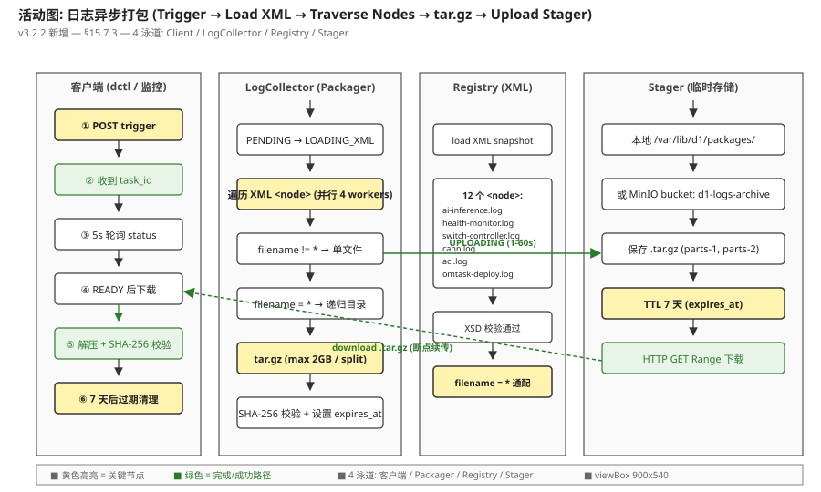
图 §15.7-3-活动: 异步打包 5 阶段 — ① 触发 (POST) → ② 加载 XML → ③ 遍历 node (filename + src) → ④ tar.gz 打包 → ⑤ 上传临时存储 (7 天 TTL). 客户端通过 task_id 异步查询和下载.
时序图 (图 §15.7-3-时序): 5 actor × 8 步
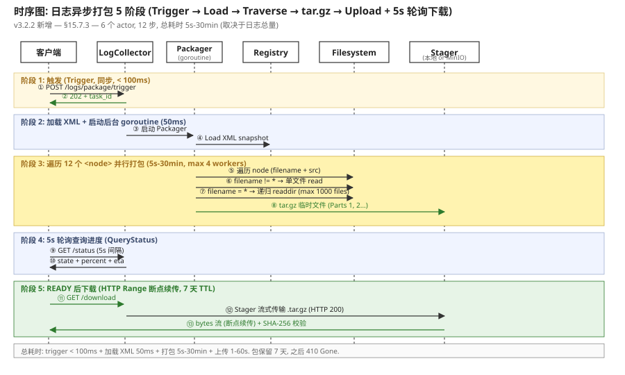
图 §15.7-3-时序: 客户端 → LogCollector → XML Registry → 文件系统 → Tar 打包器 → 临时存储 (S3/MinIO). 13 步: 触发 → task_id 返回 → 加载 XML → 遍历 nodes → 并行打包 → 上传临时存储 → 查询进度 → 下载 .tar.gz.
阶段 1: 触发 (Trigger) (~ 100ms, 同步)
客户端 POST 启动打包任务:
POST vnic://vnic0:50053/logs/package/trigger
Content-Type: application/json
{
"include_nodes": ["*"], // 默认全部, 也可指定 filename 或 src 过滤
"compress": "tar.gz", // tar.gz | tar.zst | zip (默认 tar.gz)
"max_size_mb": 2048, // 单包上限 (默认 2GB, 超过自动 split part-1.tar.gz, part-2.tar.gz)
"exclude": ["*.tmp", "*.swp"], // 排除文件 glob
"label": "pre-upgrade-2026-07-08" // 可选, 用于审计追溯
}
→ 202 Accepted
{
"task_id": "pkg-2026-07-08-001",
"total_nodes": 12,
"estimated_size_mb": 850,
"estimated_duration_s": 180,
"status_url": "vnic://vnic0:50053/logs/package/pkg-2026-07-08-001/status",
"download_url": "vnic://vnic0:50053/logs/package/pkg-2026-07-08-001/download"
}
阶段 2: 查询进度 (Query) (5s 轮询, HTTP GET)
GET vnic://vnic0:50053/logs/package/pkg-2026-07-08-001/status
→ 200 OK
{
"task_id": "pkg-2026-07-08-001",
"state": "PACKAGING", // PENDING | LOADING_XML | PACKAGING | UPLOADING | READY | FAILED | EXPIRED
"percent": 67, // 0-100
"current_node": "node-008 (acl.log)",
"processed_files": 8,
"total_files": 12,
"processed_size_mb": 568,
"estimated_size_mb": 850,
"elapsed_s": 122,
"eta_s": 60, // 剩余秒数估算
"errors": [] // 已处理的错误列表 (文件读取失败等, 不中断打包)
}
// 完成后:
{
"state": "READY",
"percent": 100,
"size_mb": 847,
"parts": ["pkg-2026-07-08-001-part-1.tar.gz"],
"expires_at": "2026-07-15T03:00:00Z", // 7 天后过期, 之后自动清理
"checksum_sha256": "abc123..."
}
阶段 3: 下载 (Download) (~ 取决于网络, 大文件 HTTP Range)
GET vnic://vnic0:50053/logs/package/pkg-2026-07-08-001/download
Accept-Encoding: gzip
Range: bytes=0-104857599 # 可选, 断点续传
→ 200 OK
Content-Type: application/gzip
Content-Disposition: attachment; filename="pkg-2026-07-08-001.tar.gz"
Content-Length: 888439296
[二进制流 .tar.gz]
# 目录结构 (解压后):
pkg-2026-07-08-001/
├── manifest.json # 打包元数据 (task_id, label, 时间, 文件清单)
├── ai-inference.log
├── health-monitor.log
├── switch-controller.log
├── cann.log
├── acl.log
├── omtask/
│ └── deploy-2026-07-08.log
├── audit/
│ └── dctl.log
├── runtime/ # filename = * 通配的目录
│ ├── runtime-001.log
│ ├── runtime-002.log
│ └── ...
└── ascend-dump/ # filename = * 通配的目录
├── npu-0-dump.bin
└── npu-1-dump.bin
15.7.4 节点注册时序 (周边模块动态加入)
周边模块 (Omtask / dctl / SwitchController) 启动时 / 运行时, 通过注册 API 把自己产生的日志路径加入 XML. 时序图:
时序图 (图 §15.7-4-时序): 4 模块 × 6 步
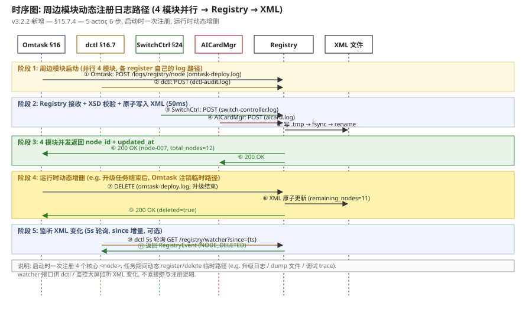
图 §15.7-4-时序: 周边模块启动 → 调用 POST /logs/registry/node → XML 校验写入 → 注册成功 + 返回 node_id. 4 模块 (Omtask / dctl / SwitchController / AICardManager) 并行注册, 各自管理自己的 log path.
15.7.5 模块图 (3 模块 + 关键不变量)
模块边界:
- Registry (注册中心): 维护
/etc/d1/log-collector.xml文件, 提供 4 个 API (POST/DELETE/GET/watcher). XSD schema 校验, 写入原子 (rename 临时文件). updated_at 时间戳. - Packager (打包器): 异步任务调度, 遍历 XML 节点 → 按 (filename/src) 打包 → 生成 .tar.gz → 上传临时存储 (本地 /var/lib/d1/packages/ 或 MinIO/S3). TTL 7 天.
- Stager (临时存储): 本地磁盘 (默认
/var/lib/d1/packages/) 或 MinIO/S3 bucket (d1-logs-archive). 7 天后自动清理. SHA-256 校验.
关键不变量:
- XML 原子写入: 每次注册/删除, 先写
/etc/d1/log-collector.xml.tmp→ fsync → rename 覆盖原文件. 绝无半写状态. - 打包不阻塞: trigger 接口立即返回 task_id (< 100ms), 实际打包在后台 goroutine 跑, 不影响其他 API.
- 通配符
*限制: 单次打包最多 1000 个文件, 单文件 > 100MB 截断. 防 OOM + 防恶意路径 (/proc, /sys). - 7 天 TTL: READY 状态的包 7 天后自动过期清理, 释放存储. 客户端必须在过期前下载.
- SHA-256 校验: 打包完成后计算 SHA-256, 客户端下载后必须校验, 防传输损坏.
15.7.6 状态机 (PENDING / LOADING_XML / PACKAGING / UPLOADING / READY / FAILED / EXPIRED)
打包任务的状态机, 7 个状态 + 9 个迁移条件:
| # | 迁移 | 触发条件 | 动作 | 耗时 |
|---|---|---|---|---|
| 1 | (start) → PENDING | trigger 接口接收请求 | 分配 task_id, 初始化任务队列 | < 100ms |
| 2 | PENDING → LOADING_XML | Packager goroutine 启动 | 从 Registry 加载 XML 当前快照 | < 50ms |
| 3 | LOADING_XML → PACKAGING | XML 加载 + 校验完成 | 遍历 nodes, 并行打包 (max 4 workers) | 5s-30min |
| 4 | PACKAGING → UPLOADING | 所有 nodes 已打包成 .tar.gz 临时文件 | 上传到 Stager (本地 or MinIO) | 1-60s |
| 5 | UPLOADING → READY | 上传完成 + SHA-256 计算 | 发布 download URL, 设 expires_at | < 5s |
| 6 | PACKAGING/UPLOADING → FAILED | XML 文件丢失 / 单个文件读失败累计 > 50% / 磁盘满 | 清理临时文件, 标记 FAILED, errors 列表记录 | — |
| 7 | READY → EXPIRED | 当前时间 > expires_at (7 天后) | 清理 .tar.gz, 标记 EXPIRED, 下载返回 410 Gone | — |
| 8 | READY → DELETED | 客户端主动调用 DELETE task_id (立即清理) | 清理 .tar.gz, 删除任务 | < 1s |
| 9 | (任何态) → CANCELLED | 客户端调用 POST /cancel (异步任务未完成时) | 停止 Packager goroutine, 清理临时 | < 1s |
15.7.7 接口表 + 完整 Protobuf (5 内部 API + 1 触发)
| # | 端点 | 方法 | vNic URL / UDS | 用途 | v3.2.2 状态 |
|---|---|---|---|---|---|
| 1 | RegisterNode | POST | vnic://vnic0:50053/logs/registry/node | 注册/更新 1 个 ` | v3.2.2 新 |
| 2 | UnregisterNode | DELETE | vnic://vnic0:50053/logs/registry/node?filename=&src= | 删除 1 个 ` | v3.2.2 新 |
| 3 | ListNodes | GET | vnic://vnic0:50053/logs/registry | 查询完整 XML | v3.2.2 新 |
| 4 | WatchRegistry | GET (5s 轮询) | vnic://vnic0:50053/logs/registry/watcher?since={ts} | 监听 XML 变更 (since 增量) | v3.2.2 新 |
| 5 | TriggerPackage | POST | vnic://vnic0:50053/logs/package/trigger | 触发打包, 返回 task_id | v3.2.2 新 |
| 6 | QueryPackageStatus | GET (5s 轮询) | vnic://vnic0:50053/logs/package/{task_id}/status | 查询进度 (state / percent / eta) | v3.2.2 新 |
| 7 | DownloadPackage | GET (HTTP Range) | vnic://vnic0:50053/logs/package/{task_id}/download | 下载 .tar.gz (断点续传) | v3.2.2 新 |
| 8 | CancelPackage | POST | vnic://vnic0:50053/logs/package/{task_id}/cancel | 取消未完成任务 | v3.2.2 新 |
| 9 | DeletePackage | DELETE | vnic://vnic0:50053/logs/package/{task_id} | 删除 READY 状态的包 | v3.2.2 新 |
完整 Protobuf (v3.2.2 重写):
// aicard/logcollector/v1/logcollector.proto (v3.2.2 重写)
syntax = "proto3";
package aicard.logcollector.v1;
import "google/protobuf/timestamp.proto";
// 9 个内部 API (HTTP/JSON 主路径, gRPC Unary 备路径详见 §15.1 表)
service LogCollectorService {
// 注册/更新 1 个 XML <node>
rpc RegisterNode(RegisterNodeRequest) returns (RegisterNodeResponse);
// 删除 1 个 <node>
rpc UnregisterNode(UnregisterNodeRequest) returns (UnregisterNodeResponse);
// 查询完整 XML
rpc ListNodes(ListNodesRequest) returns (ListNodesResponse);
// 监听 XML 变更 (HTTP 5s 轮询 + since 增量)
// HTTP: GET vnic://vnic0:50053/logs/registry/watcher?since={ts}
rpc WatchRegistry(WatchRegistryRequest) returns (WatchRegistryResponse);
// 异步打包三步流程
// 1. 触发 (HTTP POST, 同步返回 task_id)
// HTTP: POST vnic://vnic0:50053/logs/package/trigger
rpc TriggerPackage(TriggerPackageRequest) returns (TriggerPackageResponse);
// 2. 查询进度 (HTTP 5s 轮询)
// HTTP: GET vnic://vnic0:50053/logs/package/{task_id}/status
rpc QueryPackageStatus(QueryPackageStatusRequest) returns (QueryPackageStatusResponse);
// 3. 下载 (HTTP GET, 支持 Range 断点续传)
// HTTP: GET vnic://vnic0:50053/logs/package/{task_id}/download
rpc DownloadPackage(DownloadPackageRequest) returns (stream DownloadChunk);
// 取消 (HTTP POST)
rpc CancelPackage(CancelPackageRequest) returns (CancelPackageResponse);
// 删除 READY 状态的包 (HTTP DELETE)
rpc DeletePackage(DeletePackageRequest) returns (DeletePackageResponse);
}
message LogNode {
string filename = 1; // 日志文件名, * 表示通配该 src 目录下所有文件
string src = 2; // 源路径 (单文件 or 目录)
string registered_by = 3; // 调用方标识 (审计追溯)
google.protobuf.Timestamp registered_at = 4;
}
message RegisterNodeRequest {
LogNode node = 1;
}
message RegisterNodeResponse {
bool accepted = 1;
string node_id = 2;
google.protobuf.Timestamp xml_updated_at = 3;
int32 total_nodes = 4;
}
message UnregisterNodeRequest {
string filename = 1;
string src = 2;
}
message UnregisterNodeResponse {
bool deleted = 1;
int32 remaining_nodes = 2;
}
message ListNodesRequest {}
message ListNodesResponse {
string xml_content = 1; // 完整 XML 字符串
bool xsd_valid = 2; // XSD 校验状态
google.protobuf.Timestamp updated_at = 3;
repeated LogNode nodes = 4;
int32 total_nodes = 5;
}
message WatchRegistryRequest {
int64 since = 1; // 客户端上次拉到的 ts
int32 interval_seconds = 2; // 轮询间隔 (5s 默认)
}
message WatchRegistryResponse {
repeated RegistryEvent events = 1;
int64 next_since = 2;
int32 version = 3;
}
message RegistryEvent {
enum Type { NODE_ADDED = 0; NODE_UPDATED = 1; NODE_DELETED = 2; }
Type type = 1;
LogNode node = 2;
google.protobuf.Timestamp ts = 3;
}
// 打包三步流程
enum PackageState {
STATE_UNKNOWN = 0;
PENDING = 1; // trigger 接收, 排队
LOADING_XML = 2; // 加载 XML 快照
PACKAGING = 3; // 打包中
UPLOADING = 4; // 上传临时存储
READY = 5; // 完成, 可下载
FAILED = 6; // 失败 (XML 丢失 / 磁盘满 / 文件读失败累计 > 50%)
EXPIRED = 7; // 7 天 TTL 到期
CANCELLED = 8; // 客户端取消
}
message TriggerPackageRequest {
repeated string include_nodes = 1; // 默认 [*] 全部; 也可指定 filename / src 过滤
enum Compress { TAR_GZ = 0; TAR_ZST = 1; ZIP = 2; }
Compress compress = 2; // 默认 TAR_GZ
int64 max_size_mb = 3; // 单包上限, 超过自动 split (默认 2048)
repeated string exclude = 4; // 排除文件 glob
string label = 5; // 可选, 审计追溯
}
message TriggerPackageResponse {
string task_id = 1;
int32 total_nodes = 2;
int64 estimated_size_mb = 3;
int64 estimated_duration_s = 4;
string status_url = 5;
string download_url = 6;
}
message QueryPackageStatusRequest {
string task_id = 1;
}
message QueryPackageStatusResponse {
string task_id = 1;
PackageState state = 2;
int32 percent = 3; // 0-100
string current_node = 4; // 当前正在打包的 node
int32 processed_files = 5;
int32 total_files = 6;
int64 processed_size_mb = 7;
int64 estimated_size_mb = 8;
int64 elapsed_s = 9;
int64 eta_s = 10;
repeated PackageError errors = 11; // 已处理的错误 (不中断)
repeated string parts = 12; // 分包列表 (READY 状态)
int64 size_mb = 13; // 最终大小 (READY 状态)
google.protobuf.Timestamp expires_at = 14;
string checksum_sha256 = 15;
}
message PackageError {
enum Severity { WARN = 0; ERROR = 1; }
Severity severity = 1;
string node_filename = 2;
string node_src = 3;
string message = 4; // 例: "file not found", "permission denied"
}
message DownloadPackageRequest {
string task_id = 1;
string range_bytes = 2; // HTTP Range 头, 可选
}
message DownloadChunk {
bytes data = 1; // 分块流式传输
int64 offset = 2;
int64 total_size = 3;
}
message CancelPackageRequest { string task_id = 1; }
message CancelPackageResponse { bool cancelled = 1; }
message DeletePackageRequest { string task_id = 1; }
message DeletePackageResponse { bool deleted = 1; }
// ── v3.2 旧 (已废弃) ──
// rpc GetLogs(GetLogsRequest) returns (GetLogsResponse); // v3.1/v3.2 日志拉取
// rpc TailLogs(TailLogsRequest) returns (stream LogEntry); // v3.1/v3.2 流式 tail
// rpc PushLogs(PushLogsRequest) returns (PushLogsResponse); // v3.1/v3.2 推送 Loki/ES/S3
v3.2 → v3.2.2 重构总结
删除: GetLogs / TailLogs / PushLogs 3 个旧接口 (实时流式推送模型, 复杂且依赖 Loki/ES/S3). 新增: RegisterNode / UnregisterNode / ListNodes / WatchRegistry + TriggerPackage / QueryPackageStatus / DownloadPackage / CancelPackage / DeletePackage 9 个接口, 围绕XML 配置中心 + 异步打包. 设计哲学从"实时推送"转向"按需打包下载", 适合运维 dump / 故障取证 / 升级前快照 / 监管审计场景. 周边模块 (Omtask / dctl / SwitchController) 自治管理自己的 log path, LogCollector 只负责"打包 + 下载".
15.8 完整 Protobuf 定义 (InferenceService v3.2 + LogCollectorService v3.2.2) v3.2 + v3.2.2
// aicard/inference/v1/inference.proto
syntax = "proto3";
package aicard.inference.v1;
import "google/protobuf/timestamp.proto";
// ── 服务: InferenceService (v3.2 拆分 (7 endpoint, 替代 5 个旧 Init/LoadModel)) ──
service InferenceService {
// 维护接口 (gRPC :50053, 运维证书)
rpc ActivateCard(ActivateCardRequest) returns (ActivateCardResponse);
rpc UnregisterCard(UnregisterCardRequest) returns (UnregisterCardResponse);
rpc GetStatus(GetStatusRequest) returns (GetStatusResponse);
rpc ConfigurePersistentMem(ConfigurePersistentMemRequest)
returns (ConfigurePersistentMemResponse);
// 推理接口 (gRPC :50051, 业务证书)
rpc Infer(InferRequest) returns (InferResponse);
rpc GetInference(GetInferenceRequest) returns (GetInferenceResponse);
rpc AssignModels(AssignModelsRequest) returns (AssignModelsResponse);
}
// ── Messages ──
message ActivateCardRequest {
string card_uuid = 1; // 待激活的物理 NPU UUID
string model_dir = 2; // 默认 /opt/aicard/models/
bool auto_load_all = 3; // (b) 加载阶段开关
map<string, string> acl_env = 4; // ACL 环境变量
// 持久化内存配置
PersistentMemConfig persistent_mem = 5;
}
message ActivateCardResponse {
bool ok = 1;
CardStatus status = 2; // (e) 阶段返回
string card_uuid = 3;
int32 loaded_model_count = 4; // (b) 加载成功的模型数
// 错误码分类
oneof failure_phase {
InitFailure init_fail = 10;
LoadFailure load_fail = 11;
PersistMemFailure persist_fail = 12;
AssignFailure assign_fail = 13;
RegisterFailure register_fail = 14;
}
}
message UnregisterCardRequest { string card_uuid = 1; string reason = 2; }
message UnregisterCardResponse { bool unregistered = 1; }
message GetStatusRequest { string card_uuid = 1; }
message GetStatusResponse {
CardStatus status = 1;
int32 registered_model_count = 2;
int64 hbm_used_mb = 3;
int64 hbm_total_mb = 4;
google.protobuf.Timestamp last_update = 5;
}
message ConfigurePersistentMemRequest {
string card_uuid = 1;
PersistentMemConfig config = 2;
}
message ConfigurePersistentMemResponse { bool applied = 1; }
message InferRequest {
string model_name = 1;
bytes input_data = 2; // 序列化输入 (TensorProto / numpy bytes)
map<string, string> params = 3;
string inference_id = 4; // (用于后续 GetInference)
}
message InferResponse {
bytes output_data = 1;
int64 latency_us = 2;
string inference_id = 3;
// 状态字段
InferenceState state = 4;
}
message GetInferenceRequest { string inference_id = 1; }
message GetInferenceResponse {
bytes output_data = 1;
InferenceState state = 2;
int64 latency_us = 3;
google.protobuf.Timestamp completed_at = 4;
}
message AssignModelsRequest {
string card_uuid = 1;
repeated string model_names = 2; // 分配到该卡的模型
// 显式哈希路由规则
RoutingRule routing_rule = 3;
}
message AssignModelsResponse {
int32 assigned_count = 1;
RoutingTable table = 2;
}
// ── Enums ──
enum CardStatus {
CARD_UNREGISTERED = 0; // (取代 MODEL_UNLOADED)
CARD_INITIALIZING = 1;
CARD_LOADING = 2;
CARD_CONFIGURING_MEM = 3; //
CARD_ASSIGNING_MODELS = 4; //
CARD_READY = 5;
CARD_ERROR = 6;
CARD_OFFLINE = 7;
}
enum InferenceState {
INFER_IDLE = 0;
INFER_BUSY = 1;
INFER_ERROR = 2;
INFER_OFFLINE = 3;
}
// 5 阶段失败错误
message InitFailure { string detail = 1; string npu_state = 2; }
message LoadFailure { string model_path = 1; string acl_err = 2; }
message PersistMemFailure { string alloc_strategy = 1; int64 needed_mb = 2; int64 available_mb = 3; }
message AssignFailure { string rule = 1; int32 conflict_models = 2; }
message RegisterFailure { string target_service = 1; int32 retry_count = 2; }
// 持久化内存配置
message PersistentMemConfig {
enum Strategy { STATIC = 0; DYNAMIC = 1; RESERVED = 2; }
Strategy strategy = 1;
int64 reserved_mb = 2;
int32 max_acl_contexts = 3; // 910B 默认 4, 310P 默认 2
}
// 调度器路由规则
enum RoutingRule {
ROUTE_HASH = 0; // hash(model) % num_npus
ROUTE_ROUND_ROBIN = 1;
ROUTE_QPS_AWARE = 2;
}
message RoutingTable {
map<string, string> model_to_card = 1; // model_name → card_uuid
}
// ── (新增) vNicServer: 业务面 + 管理面分离 ──
service VNicServer {
// 业务面 (gRPC :50051, vnic://vnic0:50051)
rpc Infer(InferRequest) returns (InferResponse);
rpc GetInference(GetInferenceRequest) returns (GetInferenceResponse);
rpc AssignModels(AssignModelsRequest) returns (AssignModelsResponse);
// 管理面 (gRPC :50053, vnic://vnic0:50053)
rpc ActivateCard(ActivateCardRequest) returns (ActivateCardResponse);
rpc UnregisterCard(UnregisterCardRequest) returns (UnregisterCardResponse);
rpc GetStatus(GetStatusRequest) returns (GetStatusResponse);
rpc ConfigurePersistentMem(ConfigurePersistentMemRequest)
returns (ConfigurePersistentMemResponse);
}
message VNicEndpoint {
string vnic_url = 1; // vnic://vnic0:50051 (业务) / vnic://vnic0:50053 (管理)
string bind_addr = 2; // 0.0.0.0:50051 / 0.0.0.0:50053
string tls_cert = 3; // 业务证书 / 运维证书
enum Plane { PLANE_BUSINESS = 0; PLANE_MGMT = 1; }
Plane plane = 4;
bool virtio_net = 5; // VM 内 virtio-net 后端
}
// ── (新增) LogCollector: 日志收集独立模块 ──
service LogCollector {
rpc GetLogs(GetLogsRequest) returns (GetLogsResponse);
// v3.2.1 修订: 旧 Watch (server-streaming) 改为 Tail (HTTP GET 5s 轮询)
// 旧: rpc Watch(WatchLogsRequest) returns (stream LogEntry);
// 新: HTTP GET vnic://vnic0:50053/logs/tail?follow_token=...&since=... (5s 轮询, JSON)
// 返回: TailLogsResponse { entries: [LogEntry], next_token: string, has_more: bool }
rpc Push(PushLogsRequest) returns (PushLogsResponse);
}
message GetLogsRequest {
string card_uuid = 1; // 空 = 节点全部
google.protobuf.Timestamp from = 2;
google.protobuf.Timestamp to = 3;
LogLevel min_level = 4;
LogSource source = 5; // ai-inference / health-monitor / cann / acl
int32 limit = 6; // 默认 500, 上限 5000
string follow_token = 7; // (可选) tail 模式 token
}
message GetLogsResponse {
repeated LogEntry entries = 1;
string next_token = 2; // 翻页 / tail 续传
bool has_more = 3;
}
message WatchLogsRequest {
string source = 1; // 单源 tail
LogLevel min_level = 2;
}
message PushLogsRequest {
string endpoint = 1; // Loki / ES / S3 URL
repeated LogEntry entries = 2;
}
message PushLogsResponse {
bool accepted = 1;
int32 pushed_count = 2;
string error = 3;
}
enum LogLevel { LOG_DEBUG = 0; LOG_INFO = 1; LOG_WARN = 2; LOG_ERROR = 3; }
enum LogSource {
LOG_SRC_UNKNOWN = 0;
LOG_SRC_AI_INFERENCE = 1; // /var/log/d1/ai-inference.log
LOG_SRC_HEALTH_MONITOR = 2; // /var/log/d1/health-monitor.log
LOG_SRC_CANN = 3; // /var/log/ascend/cann.log
LOG_SRC_ACL = 4; // /var/log/ascend/acl.log
}
message LogEntry {
google.protobuf.Timestamp ts = 1;
LogLevel level = 2;
LogSource source = 3;
string message = 4;
map<string, string> fields = 5;
}
// ── (v3.2 删除) ──
// LogCollector.GetLogs — 从 §17.4 HealthService.GetLogs 拆出, 移到本服务 (语义不变)
// InferenceService.LogEntry — 合并到 LogCollector.LogEntry
历史类型 (向后不兼容, 客户端升级时忽略)
历史 type/message 已删除: InitRequest/Response, LoadModelRequest/Response, DeinitRequest/Response, ListModelsRequest/Response, HccsConfig (移到独立配置服务), ModelInfo, ModelHealth (HealthService 接管). 调用方需迁移到新的 ActivateCard + Infer + GetStatus API.
15.9 推理时序 (v3.2, 3 卡 3 池, model_id 路由, vnic://vnic0:50051)
详见图 9-4 时序图. 关键流程: 业务客户端 → vNic vnic://vnic0:50051 → Scheduler 按 model_id 路由表 路由 → Worker 池中对应 ACL context → 物理 NPU 执行.
User A (model=resnet50) ─┐
User B (model=bert-base) ─┼─► vNic vnic://vnic0:50051 ─► Scheduler (model_id 路由)
User C (model=m3) ─┘ │
▼
Inference Worker Pool
┌────┬────┬────┐
│ W1 │ W2 │ W3 │ ...×16
└──┬─┴──┬─┴──┬─┘
ACL │ACL │ACL │
ctx │ctx │ctx │
▼ ▼ ▼
NPU#0 NPU#1 NPU#2
(910B 910B 910B)
routing_table[resnet50] = npu0 → NPU#0
routing_table[bert-base] = npu1 → NPU#1
routing_table[llama-7b] = npu2 → NPU#2
—————————————————————————————————————————————————————————————
latency p50: 2.3 ms / inference (单 NPU 推理耗时) · 3 卡负载均衡误差 < 10%16AI 卡部署 16 大功能 (Omtask 编排流程) v3.2 新增大章节 v3.2.1 修订: HTTP GET 探测
v3.2 沿用 §18 (原 §18) 的 DeployService gRPC 服务层 (VM 激活 + 5 类告警), 同时在编排层新增 16 大功能, 由 Omtask (任务管理器, VM 外部) 统一调度. 16 大功能 = 8 大类 × 2 子功能, 涵盖 AI 卡全生命周期: 拉起升级 → 清理防勒索 → 激活前检查 → 驱动/固件安装 → 日志收集 → 升级部署驱动上报 → CLI 命令 → 控制器扩容.
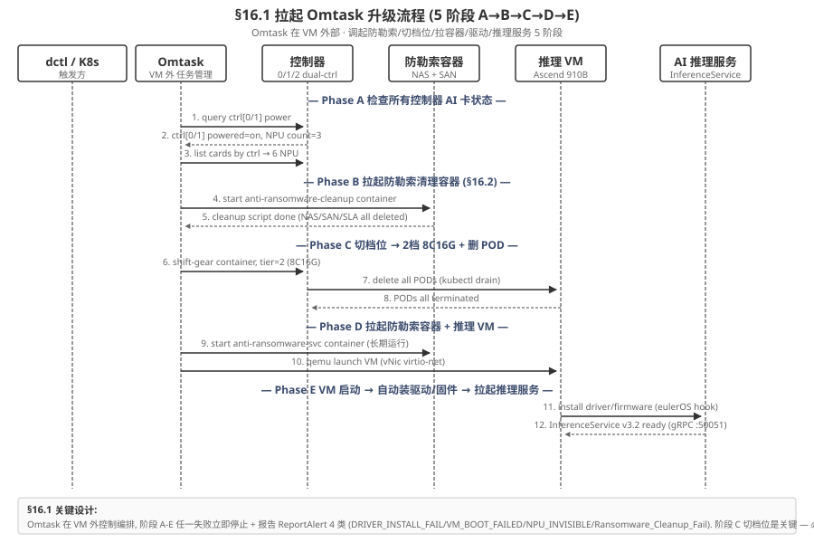
§16 与 §18 关系
§18 (DeployService) 是 gRPC 服务层, 暴露 1 个 endpoint (ActivateVM) 给 dctl / 业务网关; §16 是 Omtask 编排层, 在 VM 外通过 PreCheck / AntiRansomSvc / 控制器 agent / UpgradeMgr 等组件串起 16 大功能, 不暴露新 gRPC endpoint (复用 §18.1 + §15.7 + §16.6 RPC). 16.7 dctl CLI 是统一入口, 内部委派到 Omtask.
16.1 拉起 Omtask 升级流程 (5 阶段 A→B→C→D→E)
流程 (Process)
Omtask 是 VM 外部的任务管理流程, 可调用各种预设任务. AI 卡激活时, Omtask 拉起 5 阶段升级流程, 串接防勒索/切档位/拉容器/驱动/推理服务. 整体是串行编排 + 阶段门禁: 任一阶段失败立即终止, 不进入下一阶段.
约束 (Constraints)
- C1 (硬): 所有老控制器必须
powered=on且card_count ≥ 1才能进入阶段 B (否则防勒索策略无法跨 ctrl 统一, 同 §16.8 硬约束) - C2 (硬): 阶段 C 切档位 必须 是 2档 8C16G, 1 档 (4C8G) 内存不足以装 1×Ascend 910B driver
- C3 (软): 5 阶段总耗时 P99 ≤ 5 min, 阶段 C 切档 + drain ≤ 30s
- C4 (软): 阶段 B 清理防勒索必须先于阶段 C 切档 (切档会重启 POD, 顺序反了会导致旧 POD 上的 SLA 配置未删)
主成功场景 (Happy Path)
Omtask 收到 dctl 触发 (dctl card deploy --pool=ascend-1 --count=3) → Phase A 遍历 ctrl[0..N-1] 全部 powered=on + card_count≥1 → Phase B 拉起 cleanup 容器 + 执行 §16.2 全部清理 (NAS/SAN/SLA) → Phase C shift-gear 切到 2档 8C16G + kubectl drain 删旧 POD → Phase D 拉 anti-ransomware-svc 长期容器 (RESTful :8443) + qemu 启动推理 VM (vNic virtio-net :50051) → Phase E VM 内 eulerOS 启动 → cloud-init → systemd runcmd 触发 §16.4 装驱动/固件 → canld 启动 → npu-smi 验证 3 NPU 可见 → 调用 §15.4 AI 卡使能 7 阶段 (a-g) → InferenceService :50051 ready, 集群 6 NPU 全部上线.
异常场景 (Failure Cases)
- F1 (A 阶段): 老 ctrl[0] powered=off → 终止 + ReportAlert
CTRL_POWERED_OFF(CRITICAL), 不进入 B. 修复: 上电 ctrl[0] 后重试. - F2 (B 阶段): §16.2 3 步原子操作任一失败 → 终止 + ReportAlert
RANSOMWARE_CLEANUP_FAIL(CRITICAL), 不进入 C. 修复: 人工检查 AntiRansomSvc 健康, 重跑 §16.2. - F3 (C 阶段): shift-gear 切档失败 → 终止 + ReportAlert
SHIFT_GEAR_FAILED(CRITICAL), 旧 POD 保留, 不进入 D. 修复: 重试切档; 仍失败 → 人工检查档位配额. - F4 (D 阶段): qemu 启动 VM 失败 → 终止 + ReportAlert
VM_BOOT_FAILED(CRITICAL), 旧 POD 仍可用. 修复: 检查 libvirt / IOMMU / PCIe slot. - F5 (E 阶段): 驱动 .run 装失败 → 终止 + ReportAlert
DRIVER_INSTALL_FAIL(CRITICAL), 旧 POD 仍可用. 回滚: 不需要 (VM 还没正式加入集群, 删 VM 即可).
边界场景 (Edge Cases) + 跨章节交互
- E1 (并发): 同一时间只能跑 1 个 Omtask 任务 (etcd 分布式锁
/omtask/lock/global). 第 2 个触发返回OMTASK_BUSY(409 Conflict), 不排队. - E2 (部分回滚): 阶段 C 切档成功但 D 失败 → 必须回滚 shift-gear 切回原档位 + kubectl uncordon 恢复节点. 不回滚会导致节点资源被占用, 后续 Omtask 触发全部失败.
- E3 (跨章节): 阶段 E 调用 §16.4 (驱动安装) + §15.4 (AI 卡使能 7 阶段) + §15.7 (日志收集). 任一子步骤失败都会冒泡到 F5.
- E4 (重入): 如果 Omtask 任务中途被 cancel (Ctrl-C / 管理员) → 已完成的阶段不回滚 (避免数据丢失), 但记录 cancel 状态到 etcd, 后续 dctl status 显示 PARTIAL_DONE, 管理员手动决定继续或回滚.
Omtask 是 VM 外部的任务管理流程, 可调用各种预设任务. AI 卡激活时, Omtask 拉起 5 阶段升级流程:
16.1.1 阶段 A: 检查所有控制器 AI 卡状态
遍历集群所有控制器 (dual-ctrl 0/1/2...), 检查每张 AI 卡的上电状态 + 健康度:
- A.1 RPC 控制器 agent
qry ctrl[i] power, 返回powered=on/off+card_count=N - A.2 仅当所有老控制器都
powered=on且card_count ≥ 1才进入阶段 B - A.3 任一老控制器
powered=off→ 立即终止升级, 报错CTRL_POWERED_OFF(级别 CRITICAL) - A.4 任一老控制器
card_count=0→ 立即终止升级, 报错CTRL_NO_AI_CARD(防勒索无法跨 ctrl 统一策略, 同 §16.8 约束)
16.1.2 阶段 B-E: 清理防勒索 + 切档位 + 拉容器 + 驱动 + 推理服务
- Phase B 拉起清理防勒索容器: Omtask 启动临时容器 (cleanup-ctr), 执行防勒索配置清理脚本, 调用 §16.2 全部流程 (NAS disable + SAN disable + SLA DELETE).
- Phase C 切档位 → 2档 8C16G: Omtask 调用 shift-gear API 将 AI 推理服务容器切换到 2 档 (8C16G) 配置, 同时
kubectl drain删除所有旧 POD. 切档是硬约束 — 必须 2档 8C16G 才能装 1×Ascend 910B. - Phase D 拉起防勒索容器 + 推理 VM: 启动 长期运行的 anti-ransomware-svc 容器 (提供 :8443 RESTful 服务), 同时 qemu 启动推理 VM (vNic virtio-net 寻址, 跟 §15.1 vNic URL 对齐).
- Phase E VM 内自动装驱动/固件 → 拉起推理服务: 详见 §16.4 (EulerOS 启动 → cloud-init → .run 安装) + §15.4 (AI 推理服务初始化 7 阶段 a-g).
5 阶段失败处理
任一阶段失败 → 立即停止后续阶段 + ReportAlert 上报 (复用 §15 5 类告警码, 阶段 C 切档失败新增 SHIFT_GEAR_FAILED, 阶段 B 防勒索失败新增 RANSOMWARE_CLEANUP_FAIL). 阶段 C 切档位后, 阶段 D/E 失败需回滚档位 (shift-gear 切回 3 档) + 重启旧 POD.
16.2 清理防勒索信息 (RESTful 关闭 NAS/SAN/SLA)
流程 (Process)
防勒索容器/服务独立于 AI 卡推理容器, AI 卡激活前必须先关闭里面所有防勒索配置. 通过 RESTful (https://antirsvc:8443/v1/...) 向防勒索服务发消息关闭. 3 步原子操作: ① 查询状态 (GET NAS + GET SAN) → ② 关闭锁 (POST NAS disable + POST SAN disable) → ③ 删除 SLA (DELETE /v1/sla/configs). 三步必须全成功, 任一失败立即停止 + 报错. RESTful 是因为防勒索服务已存在并暴露 :8443, AI 卡激活流程不重复造 gRPC 客户端.
约束 (Constraints)
- C1 (硬): 3 步必须顺序执行, 不允许并发 (避免 SLA 删除与 NAS/SAN 关闭竞争, 导致半删状态). 必须等上一步 200 OK 才发下一步.
- C2 (硬): 关闭 NAS/SAN 必须全部 disable, 不允许部分 disable (部分 disable 会导致部分数据无防勒索保护, 出现防护漏洞).
- C3 (硬): SLA 配置必须全删, 不能保留任何配置. 旧 SLA 会拦截新 AI 卡的访问权限, 触发
SLA_DENY错误. - C4 (软): 3 步总耗时 P99 ≤ 10s (单步 P99 ≤ 3s, 包含 HTTP connect + JSON parse).
- C5 (软): 必须用 mTLS (业务证书 ProductCA), 防止未授权关闭防勒索 (防勒索一关, 数据裸奔).
主成功场景 (Happy Path)
Omtask 阶段 B 触发 cleanup 容器 → 容器连 AntiRansomSvc :8443 (mTLS 认证) → Step 1.1 GET /v1/nas/status → 返回 {"shares": 3, "lock": "on", "share_ids": ["s1","s2","s3"]} → Step 1.2 GET /v1/san/status → 返回 {"luns": 5, "lock": "on", "lun_ids": ["l1","l2","l3","l4","l5"]} → Step 2.1 POST /v1/nas/disable body={"share_ids": ["s1","s2","s3"]} → 返回 {"disabled": 3, "200 OK"} + NAS lock 状态由 on → off → Step 2.2 POST /v1/san/disable body={"lun_ids": ["l1","l2","l3","l4","l5"]} → 返回 {"disabled": 5, "200 OK"} + SAN lock 由 on → off → Step 3 DELETE /v1/sla/configs (无 body, 批量删全部) → 返回 {"deleted": 12, "200 OK"} (3 NAS shares + 5 SAN luns + 4 global default = 12 SLA) → cleanup 容器退出 0 → Omtask 收到 success → 进入阶段 C 切档位. 业务效果: 防勒索锁全部解除, SLA 全删, AI 卡激活期间 NAS/SAN 无防勒索拦截.
异常场景 (Failure Cases)
- F1 (Step 1.1 NAS 查询失败):
GET /v1/nas/status返回 503 Service Unavailable (AntiRansomSvc 健康检查不过) → 终止 + ReportAlertRANSOMWARE_CLEANUP_FAIL(CRITICAL). 回滚: 不需要 (Step 1 只读, 无副作用). 修复: 人工检查 AntiRansomSvc 健康 (kubectl describe svc antirsvc), 重跑 §16.2. - F2 (Step 2.1 NAS 关闭失败):
POST /v1/nas/disable返回 500 (锁住的文件正在被访问, 释放失败) → 终止 + 回滚: 不需要 (NAS 锁没真关, Step 2.2 SAN 没启动). 修复: 等 30s 让访问方释放, 重试; 仍失败 → 强制 disable (POST /v1/nas/force-disable, 接受数据丢失风险). - F3 (Step 2.2 SAN 关闭失败, NAS 已关): NAS 锁已 off, SAN disable 返回 500 → 终止 + 回滚: 重新
POST /v1/nas/enable恢复 NAS 锁 (避免 NAS 裸奔). 修复: 排查 SAN 锁失败原因 (lun 持有者未释放?), 修复后重跑. - F4 (Step 3 SLA 删除失败, NAS+SAN 已关): SLA DELETE 返回 500 → 终止 + 回滚: 重新
POST /v1/nas/enable+POST /v1/san/enable恢复双锁, 不然 NAS+SAN 锁全开 + SLA 在 = 防护策略不一致. 修复: 查 SLA DB (MySQL/etcd) 健康, 修复后重跑. - F5 (mTLS 证书过期): 所有步骤返回 401 Unauthorized → 终止 + ReportAlert
RANSOMWARE_CLEANUP_MTLS_FAIL(CRITICAL). 修复: 运维更新 ProductCA 证书, 重跑.
边界场景 (Edge Cases) + 跨章节交互
- E1 (并发安全): 同时有 2 个 cleanup 容器在跑 (例如 dctl 触发 + K8s operator 触发) → 第 2 个 GET 看到 lock=on, 实际是第 1 个正在 disable 中. 解决: AntiRansomSvc 加 cleanup_id 字段, 第 2 个 cleanup 看到 lock=disabling (中间态) 直接返回 409 Conflict, 等第 1 个完成.
- E2 (NAS 锁被外部重新打开): Step 2.1 关闭 NAS 锁后, K8s operator 检测到 NAS 异常 → 自动重新 enable NAS 锁 (防护策略). 后续 Step 2.2/3 仍可执行 (只操作 SAN/SLA), 但激活完成后必须再 POST
/v1/nas/reconcile让 NAS 锁跟全局一致. - E3 (NAS/SAN 数量为 0): GET 返回
{"shares": 0, "lock": "off"}→ 跳过 Step 2.1 直接进入 Step 2.2 (容错). SLA DELETE 仍执行 (可能有 global SLA). - E4 (跨章节依赖): §16.2 必须在 §16.1 阶段 B 跑 (cleanup 容器内), 跟 §16.4 驱动安装是串行 (驱动装前必须先清防勒索, 不然装驱动时写入 /opt/aicard/ 会被防勒索锁定). 跟 §16.6 上报联动: 失败时 ReportAlert
RANSOMWARE_CLEANUP_FAIL经 HealthService.Watch 推送给 dctl. - E5 (超时): 任一步骤 30s 内未返回 → 客户端超时, 终止 + 报警. 防勒索服务超时通常意味着它自身 hang 住, 需要重启.
- E6 (清理后无人恢复): 清理成功后 30 分钟内, §16.1 阶段 D 还没拉起 anti-ransomware-svc 长期容器 → 集群 NAS/SAN 完全无防勒索保护. 解决: §16.1 阶段 D 是 cleanup 退出的下一阶段 (强串行), 不存在中间无保护的窗口.
防勒索容器/服务独立于 AI 卡推理容器, AI 卡激活前必须先关闭里面所有防勒索配置. 通过 RESTful (https://antirsvc:8443/v1/...) 向防勒索服务发消息关闭.
16.2.1 3 步原子操作 (查询 → 关闭 → 删除 SLA)
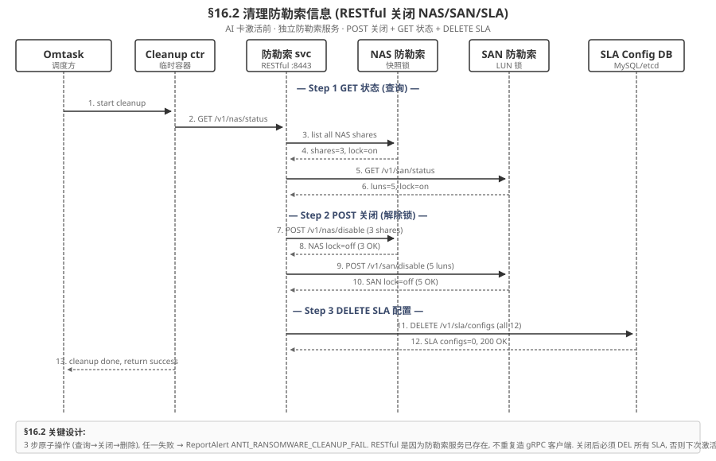
| Step | HTTP Method | URL | 请求 Body | 成功响应 | 失败告警 |
|---|---|---|---|---|---|
| 1.1 查询 | GET | /v1/nas/status | — | {"shares": 3, "lock": "on"} | — |
| 1.2 查询 | GET | /v1/san/status | — | {"luns": 5, "lock": "on"} | — |
| 2.1 关闭 NAS | POST | /v1/nas/disable | {"share_ids": ["s1","s2","s3"]} | {"disabled": 3, "200 OK"} | RANSOMWARE_NAS_DISABLE_FAIL |
| 2.2 关闭 SAN | POST | /v1/san/disable | {"lun_ids": ["l1","l2","l3","l4","l5"]} | {"disabled": 5, "200 OK"} | RANSOMWARE_SAN_DISABLE_FAIL |
| 3 删除 SLA | DELETE | /v1/sla/configs | — (批量删全部) | {"deleted": 12, "200 OK"} | RANSOMWARE_SLA_DELETE_FAIL |
16.2.2 3 步原子性 + 失败回滚
3 步必须全成功才认为 §16.2 完成. 任一失败:
- 立即停止后续步骤, 报告
RANSOMWARE_CLEANUP_FAIL告警 (level=CRITICAL) - 回滚已关闭项: 若 2.1 失败, 不影响其他; 若 2.2 失败, 重新 POST
/v1/nas/enable恢复; 若 3 失败, 不影响已关闭的 NAS/SAN - Omtask 不会进入 §16.3 PreCheck, 必须等管理员手动修复防勒索服务后重试
为什么必须 RESTful 而非 gRPC?
防勒索服务已存在并对外暴露 RESTful (:8443), AI 卡激活流程不重复造客户端. 复用 RESTful 也避免了 mTLS 证书管理的双倍工作量. 未来若防勒索服务升级到 gRPC, 只需替换 §16.2 客户端, 接口语义保持.
16.3 AI 卡激活前检查 (PreCheck 6 维度)
流程 (Process)
AI 卡激活前的前置条件检查, 6 维度全过才放行 §16.4 驱动安装. 由独立 PreCheckService gRPC :50055 暴露, Omtask 阶段 B/C 之间调用. 6 维度: ① 资源-CPU/内存 → ② 资源-PCIe 拓扑 → ③ 版本-driver → ④ 版本-firmware 兼容 → ⑤ 拓扑-HCCS ring → ⑥ 健康-现有 AI 卡 (HealthService.Check ALL). 任一维度失败立即停止 + 报错.
约束 (Constraints)
- C1 (硬): 6 维度全过才能进入 §16.4, 不允许"5 过 1 不过但部分可接受". 任一失败 → 终止 + ReportAlert PRECHECK_FAIL.
- C2 (硬): 资源检查必须匹配 2档 8C16G (跟 §16.1 阶段 C 一致). 1 档 4C8G 资源不够装 1×Ascend 910B driver.
- C3 (硬): 版本兼容矩阵必须存在 (driver 8.0.RC2 ↔ fw 1.78 ↔ cann 8.0.RC2). 仓库无此矩阵 → 默认拒绝 (白名单模式, 不允许"试试看").
- C4 (软): 总耗时 P99 ≤ 5s (含 lspci + GET /repo + HealthService Check).
主成功场景 (Happy Path)
Omtask 触发 PreCheckService.Check(pool=ascend-1, vendor=ascend, model=910B, count=3) → ① qry node resource → free=32C/64G ≥ 8C/16G ✓ → ② lspci -tv | grep -i ascend → 3 张 Ascend 910B @ 0000:01:00.0 ✓ → ③ qry driver version → 8.0.RC2 available ✓ → ④ qry compat matrix → driver 8.0.RC2 ↔ fw 1.78 OK ✓ → ⑤ GET /topology → HCCS ring OK, 3 NPU/ctrl ✓ → ⑥ HealthService.Check(scope=ALL) → all green ✓ → 返回 PreCheckResponse{ok=true, precheck_id=..., next_stage_token=...} → Omtask 持 token 进入 §16.4 驱动安装. 业务效果: 资源 + 版本 + 拓扑 + 健康 全部对齐 2档 8C16G + 3 张 AI 卡, 后续驱动安装 100% 成功 (避免 90% 失败是环境问题).
异常场景 (Failure Cases)
- F1 (资源不足): free=4C/8G < 8C/16G → 终止 +
INSUFFICIENT_RESOURCE(CRITICAL). 修复: 删旧 POD 释放资源 / 选其他节点. - F2 (PCIe 找不到 NPU): lspci 无 ascend 设备 → 终止 +
PCIE_NO_NPU(CRITICAL). 修复: 检查硬件 (PCIe 插槽 + IOMMU group). - F3 (驱动未下载): 本地无 8.0.RC2 .run 包 → 终止 +
DRIVER_NOT_FOUND(CRITICAL). 修复: 从版本仓库拉取 .run. - F4 (固件不兼容): 仓库有 8.0.RC2 driver 但 fw 1.79 (非 1.78) → 终止 +
FIRMWARE_MISMATCH(CRITICAL). 修复: 改 driver 或回退 fw. - F5 (HCCS 拓扑坏): 2 张 NPU 在 ring 上, 1 张掉线 → 终止 +
HCCS_TOPOLOGY_BROKEN(CRITICAL). 修复: 重启 canld + 检查 PCIe link. - F6 (现有 AI 卡不健康): 已有 NPU 处于 YELLOW/RED → 终止 +
EXISTING_CARD_UNHEALTHY(WARN, 允许 abort 跳过). 修复: 先修复现有 NPU.
边界场景 (Edge Cases) + 跨章节交互
- E1 (dry-run): dctl card precheck --dry-run 只跑检查不真执行. 返回结果但不持 next_stage_token. 适用: 预演 / CI/CD 验证.
- E2 (token 过期): next_stage_token 5 min 内有效. 超过 5 min → 拒绝进入 §16.4, 强制重跑 PreCheck (避免环境变化后旧 token 失效).
- E3 (Poll 5s 轮询, v3.2.1): PreCheckService v3.2.1 改 HTTP GET 5s 轮询, 异步场景下 6 维度进度可增量拉取 (since 增量). 同步 Check 阻塞返回.
- E4 (跨章节): PreCheck 是 §16.1 阶段 B 后 / 阶段 C 前 / §16.4 前的硬门禁. §16.4 驱动安装前会再调一次 HealthService.Check (单维度) 防止 PreCheck 后环境变化.
16.3.1 6 维度检查 (资源 2 + 版本 2 + 拓扑 1 + 健康 1)
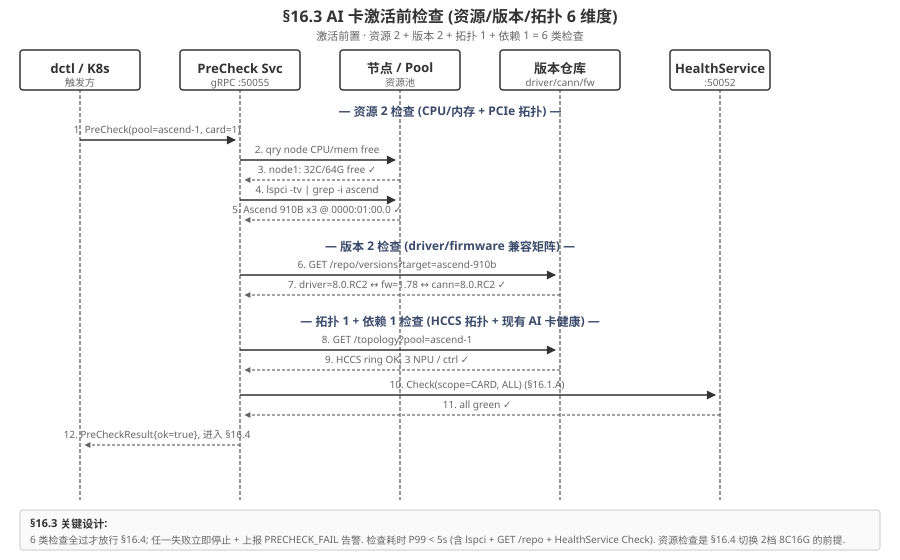
| # | 维度 | 检查项 | RPC / 命令 | 成功条件 | 失败码 |
|---|---|---|---|---|---|
| 1 | 资源-CPU/内存 | 节点空闲资源 | PreCheck.qry_node_resource | free ≥ 8C/16G (匹配 2档) | INSUFFICIENT_RESOURCE |
| 2 | 资源-PCIe | PCIe 拓扑可见 NPU | lspci -tv | grep -i ascend | 至少 1 张 910B @ 0000:XX:00.0 | PCIE_NO_NPU |
| 3 | 版本-driver | 驱动版本可用 | PreCheck.qry_driver_version | 本地有 8.0.RC2 .run 包 | DRIVER_NOT_FOUND |
| 4 | 版本-firmware | 固件版本与驱动兼容 | PreCheck.qry_compat_matrix | driver 8.0.RC2 ↔ fw 1.78 | FIRMWARE_MISMATCH |
| 5 | 拓扑-HCCS | HCCS 拓扑环可用 | PreCheck.qry_hccs_topology | 所有老 ctrl NPU 在同一环 | HCCS_TOPOLOGY_BROKEN |
| 6 | 健康-现有 AI 卡 | 所有老 AI 卡健康 | HealthService.Check(ALL) | all green (无 YELLOW/RED) | EXISTING_CARD_UNHEALTHY |
16.3.2 PreCheck 服务设计 (gRPC :50055)
// aicard/precheck/v1/precheck.proto
syntax = "proto3";
package aicard.precheck.v1;
import "google/protobuf/timestamp.proto";
service PreCheckService {
// 单次 6 维度全量检查
rpc Check(PreCheckRequest) returns (PreCheckResponse);
// v3.2.1 修订: 旧 Watch (server-streaming) 改为 Poll (HTTP GET 5s 轮询 + since 增量)
// 旧: rpc Watch(PreCheckRequest) returns (stream PreCheckProgress);
}
message PreCheckRequest {
string pool_id = 1; // 目标 pool
string vendor = 2; // "ascend" / "nvidia"
string card_model = 3; // "Ascend 910B"
int32 card_count = 4; // 期望 NPU 数
bool dry_run = 5; // 仅跑检查, 不真执行
}
message PreCheckResponse {
bool ok = 1;
string precheck_id = 2; // 唯一 ID
repeated CheckResult results = 3; // 6 维度详细结果
google.protobuf.Timestamp completed_at = 4;
// 进入下一阶段 (§16.4) 的 token
string next_stage_token = 5;
}
message CheckResult {
enum Dimension {
DIM_UNKNOWN = 0;
DIM_RESOURCE_CPU_MEM = 1; // 1
DIM_RESOURCE_PCIE = 2; // 2
DIM_VERSION_DRIVER = 3; // 3
DIM_VERSION_FIRMWARE = 4; // 4
DIM_TOPOLOGY_HCCS = 5; // 5
DIM_HEALTH_EXISTING = 6; // 6
}
Dimension dim = 1;
bool ok = 2;
string detail = 3; // 详细日志
string error_code = 4; // 失败码
int64 latency_ms = 5;
}16.4 虚拟机拉起驱动固件安装 (EulerOS Hook)
流程 (Process)
核心是EulerOS 启动时增加脚本, 拉起部署驱动和固件的模块. 整个流程不依赖 AI 推理服务 (驱动装在 VM OS 层, 不在容器层). 由 qemu 启动 VM → eulerOS 启动 → cloud-init read user-data → mount /dev/vdb (ISO 含 .run) → systemd runcmd 触发 /etc/d1/install.sh → 装 driver → 装 firmware → systemctl start canld → npu-smi info 验证. 9 步骤, 任一失败立即停止.
约束 (Constraints)
- C1 (硬): 驱动版本必须跟 §16.3 PreCheck 兼容矩阵一致 (driver 8.0.RC2 ↔ fw 1.78 ↔ cann 8.0.RC2). 不一致 → 安装失败 + 报错 FIRMWARE_MISMATCH.
- C2 (硬): .run 包必须sha256 签名校验通过 (防中间人攻击 / 镜像污染). 校验失败立即 exit 2.
- C3 (硬): kernel headers 版本必须跟 .run 包匹配 (kernel-ml-5.10.0 × 8.0.RC2). 不匹配 → .run 安装失败.
- C4 (硬): npu-smi 验证必须看到期望数量 (默认 3 张 910B). 0 张 → 报错 NPU_INVISIBLE.
- C5 (软): 总耗时 P99 ≤ 3 min (驱动 60s + 固件 30s + canld 5s + npu-smi 3s + 校验 60s).
主成功场景 (Happy Path)
qemu 启动 euler-2.10-SP3.qcow2 (VM 配置 2档 8C16G + 1×Ascend 910B PCIe passthrough) → cloud-init 读 user-data → mount /dev/vdb (ISO 含 Ascend-hdk-npu-8.0.RC2.run + Ascend-firmware-1.78.run + 校验签名) → systemd d1-driver-install.service 自动跑 /etc/d1/install.sh → Step 5 ./Ascend-hdk-npu-8.0.RC2.run --silent --install (exit=0) → Step 7 ./Ascend-firmware-1.78.run --silent (exit=0) → Step 9 systemctl start canld → Step 11 npu-smi info -l 看到 3 张 NPU → Step 12 POST DeployService :50054 /v1/driver/install-complete body={status:OK, npu_count:3} → ACK → §16.1 阶段 E 收到 ACK → 触发 §15.4 AI 卡使能 7 阶段. 业务效果: 推理 VM 准备就绪, canld 提供 ACL + HCCL 通信能力, 等待 §15.4 加载模型.
异常场景 (Failure Cases)
- F1 (签名校验失败): sha256 不匹配 (镜像污染) → exit 2 → ReportAlert
DRIVER_PKG_TAMPERED(CRITICAL). 修复: 重新下载 .run + 校验. - F2 (kernel headers 缺失): eulerOS 内核 5.10.0-60 但 .run 需要 5.10.0-100 → exit 3 →
DRIVER_INSTALL_FAIL(CRITICAL). 修复: yum install kernel-ml-devel-5.10.0-100 或重做 eulerOS 镜像. - F3 (固件版本不匹配): driver 8.0.RC2 装完, fw 1.79 跟 driver 不匹配 → exit 4 →
FIRMWARE_MISMATCH(CRITICAL). 修复: 改 driver 或 fw. - F4 (canld 启动失败): 5s 内 health check 不通过 → exit 5 →
CANLD_START_FAIL(CRITICAL). 修复: journalctl -u canld 看 stack. - F5 (NPU 不可见): npu-smi 看到 0 张 → exit 6 →
NPU_INVISIBLE(CRITICAL). 修复: 检查 PCIe passthrough + dmesg. - F6 (重试): 部署服务收到 install-complete (status=FAIL) → 自动重试 1 次 (60s 后). 仍失败 → 上报管理员.
边界场景 (Edge Cases) + 跨章节交互
- E1 (重装场景): 已有 VM 但要升级驱动 → 旧 VM shutdown → 新 qemu 启动 → install.sh 跑 → 新驱动. 旧 VM 的 state.xml 在 /var/lib/d1/ 备份, 新 VM 启动后恢复 (避免模型重载耗时).
- E2 (canld 进程崩溃): 启动后 30s 内 panic / oops → §16.5 异常触发收集全 core dump + ReportAlert
CANLD_PANIC(CRITICAL). AI 卡管理器 自动 unregister 该 NPU. - E3 (跨章节): §16.4 是 §16.1 阶段 E 的核心, 装完才触发 §15.4 AI 卡使能 7 阶段 (a 启动脚本 / b 扫描 NPU / c XML 持久化 / d 初始化队列 / e ACL 内存 / f 加载模型 / g vNic 监听). §16.4 失败 → §15.4 不会启动, 整个激活流程终止.
- E4 (eulerOS 自定义): 客户可能用 Ubuntu 22.04 / CentOS 8 替代 eulerOS. /etc/d1/install.sh 需根据 /etc/os-release 分支处理. v3.2 默认 eulerOS, Ubuntu/CentOS 支持在 v3.3 roadmap.
16.4.1 eulerOS 启动钩子 (cloud-init + systemd runcmd)
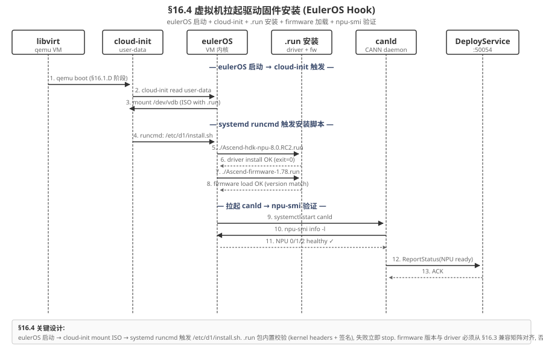
详细步骤:
- (1) qemu boot: §16.1 阶段 D 启动 VM, 加载
euler-2.10-SP3.qcow2 - (2) cloud-init 读 user-data: 包含挂载 ISO + 触发安装脚本的指令 (配置在 libvirt domain XML 的
<metadata>段) - (3) mount /dev/vdb: ISO 含
Ascend-hdk-npu-8.0.RC2.run+ascend-firmware-1.78.run+ 校验签名 - (4) systemd runcmd 触发 /etc/d1/install.sh: eulerOS 启动后 systemd unit
d1-driver-install.service自动跑 - (5) 装 driver:
./Ascend-hdk-npu-8.0.RC2.run --silent --install, 内置校验 (kernel headers 版本匹配 + RPM 签名) - (6) 装 firmware:
./ascend-firmware-1.78.run --silent, 版本必须跟 driver 兼容 (否则 §16.3 PreCheck 就会拦) - (7) 拉起 canld:
systemctl start canld(CANN 8.0.RC2 daemon) - (8) 验证 NPU 可见:
npu-smi info -l必须看到期望数量的 NPU (默认 3 张 Ascend 910B) - (9) 报告状态:
ReportStatus→ DeployService :50054 (§16.6)
16.4.2 安装脚本示例 (/etc/d1/install.sh)
#!/bin/bash
# /etc/d1/install.sh - eulerOS 启动后自动跑
set -euo pipefail
MOUNT_POINT="/mnt/d1-iso"
DRIVER_PKG="Ascend-hdk-npu-8.0.RC2.run"
FIRMWARE_PKG="ascend-firmware-1.78.run"
EXPECTED_DRIVER_SIG="sha256:abc123...xyz789" # 内置白名单签名
EXPECTED_FW_SIG="sha256:def456...uvw012"
log() { logger -t d1-install "$*"; echo "[$(date -Iseconds)] $*"; }
# 1. 挂载 ISO (cloud-init 已写 /etc/fstab)
if ! mountpoint -q "$MOUNT_POINT"; then
mount "$MOUNT_POINT" || { log "FAIL: mount ISO"; exit 1; }
fi
# 2. 校验签名
verify_sig() {
local pkg=$1 expected=$2
local actual=$(sha256sum "$MOUNT_POINT/$pkg" | awk '{print $1}')
if [[ "sha256:$actual" != "$expected" ]]; then
log "FAIL: $pkg signature mismatch (expected $expected, got sha256:$actual)"
exit 2
fi
}
verify_sig "$DRIVER_PKG" "$EXPECTED_DRIVER_SIG"
verify_sig "$FIRMWARE_PKG" "$EXPECTED_FW_SIG"
log "OK: signatures verified"
# 3. 装 driver
log "Installing driver $DRIVER_PKG ..."
"$MOUNT_POINT/$DRIVER_PKG" --silent --install || { log "FAIL: driver install"; exit 3; }
log "OK: driver installed"
# 4. 装 firmware
log "Installing firmware $FIRMWARE_PKG ..."
"$MOUNT_POINT/$FIRMWARE_PKG" --silent || { log "FAIL: firmware install"; exit 4; }
log "OK: firmware installed"
# 5. 拉起 canld
systemctl start canld || { log "FAIL: canld start"; exit 5; }
sleep 3
log "OK: canld started"
# 6. 验证 NPU 可见
NPU_COUNT=$(npu-smi info -l 2>/dev/null | grep -c "Ascend 910B" || true)
if [[ "$NPU_COUNT" -lt 1 ]]; then
log "FAIL: npu-smi see 0 NPU"
exit 6
fi
log "OK: $NPU_COUNT NPU visible"
# 7. 上报 DeployService
DEPLOY_SVC="https://deployservice.aicard-system.svc.cluster.local:50054"
curl -sk -X POST "$DEPLOY_SVC/v1/driver/install-complete" \
-H "Content-Type: application/json" \
-d "{\"status\":\"OK\",\"npu_count\":$NPU_COUNT,\"ts\":\"$(date -Iseconds)\"}" \
| tee -a /var/log/d1-install.log
log "DONE: §16.4 install complete"
exit 0失败上报 + 重试策略
任一步骤 exit code 1-6 → 立即终止 + 上报对应告警 (DRIVER_INSTALL_FAIL / FIRMWARE_LOAD_FAIL / NPU_INVISIBLE / VM_BOOT_FAILED, 复用 §15 5 类告警). 部署服务收到 install-complete (status=FAIL) 后自动重试 1 次, 仍失败上报管理员. 重试间隔 60s, 总耗时 P99 < 8 分钟 (含重试).
16.5 驱动日志收集 (2 类: 主动 + 异常触发)
流程 (Process)
驱动日志收集是 §15.7 LogCollector 的专项扩展, 复用其 4 数据源 (canld / kernel / 部署 / 推理), 触发方式分 2 类. 主动周期: 每 60s 增量 tail -F canld.log + dmesg | grep npu + PUT 到 S3 归档. 异常触发: canld panic / kernel oops / NPU ECC 超阈值 / canld 启动失败 / 升级失败, 立即抓取 panic context + 完整 core dump (10-100 MB).
约束 (Constraints)
- C1 (硬): 主动收集不能丢日志 (WAL 机制: 写入先到本地 buffer, 上传失败重试 3 次).
- C2 (硬): 异常日志独立归档 (s3://aicard-logs/emergency/), 7 天保留, 不跟普通日志混.
- C3 (硬): 异常日志必须checksum 验证 (sha256), 上传完成算成功. 不允许"传了不知道对不对".
- C4 (软): 主动收集流量 ~1 KB/min/卡 (压缩后), 1000 卡集群 1 MB/min 总流量. 可承受.
主成功场景 (Happy Path)
驱动正常运行时, 每 60s 触发主动收集: tail -F /var/log/canld/canld.log 取增量 + dmesg | grep -i npu 取 kernel 事件 + PUT s3://aicard-logs/driver/2026-07-05/{node}/chunk-{idx}.log.gz (chunked, etag 校验) → 200 OK → 记录 offset (下次从此继续). 异常触发: canld panic / kernel oops → 立即触发紧急收集 → POST s3://aicard-logs/emergency/2026-07-05/{node}/full-{ts}.tar.gz (含 core+log+stack) → 200 OK + checksum verify → HealthService.Watch 推送 ALERT 事件 + 归档路径给 dctl / Prometheus. 业务效果: 故障时秒级定位 (紧急日志 + 完整 core), 平时 60s 粒度可回溯 (主动日志).
异常场景 (Failure Cases)
- F1 (S3 上传失败): 主动收集 PUT 返回 503 (S3 暂不可用) → 本地 buffer 暂存 → 重试 3 次 (指数退避 1s/4s/16s) → 仍失败 → 上报 ReportAlert LOG_PUSH_FAIL (WARN), 后续日志可能丢.
- F2 (磁盘满): 本地 buffer 满 (默认 10 GB) → 触发紧急清理 (删除最旧 chunk) → 上报 ReportAlert LOG_BUFFER_FULL (CRITICAL).
- F3 (checksum 不匹配): 异常日志上传完成但 sha256 不一致 → 重传 1 次 → 仍失败 → 标记为 corrupt + 报警 (不让脏数据进 S3).
- F4 (NPU ECC 误报): 阈值
100 single-bit / 1 min触发频繁 (实际是 HW noise 而非真故障) → 触发限流 (1 min 内最多 1 次紧急收集), 避免日志风暴.
边界场景 (Edge Cases) + 跨章节交互
- E1 (LogCollector 复用): §16.5 复用 §15.7 LogCollector 4 数据源 + Watch 推送机制, 不另起一套. §15.7 升级时 §16.5 自动同步.
- E2 (跨节点归档): 1000 卡集群, 每个节点独立 LogCollector → S3 路径含 node_id, 不混淆. 拉取时按 node_id 过滤.
- E3 (紧急日志保留期): 紧急日志 7 天到期后自动转入冷归档 (Glacier), 保留 90 天. 90 天后删除 (GDPR 合规).
- E4 (跟 §16.6 联动): 升级期间, §16.6 上报状态 + §16.5 收集日志同步进行. 升级失败时, 状态 ERROR + 紧急日志 一起经 HealthService.Watch 推送.
16.5.1 主动周期收集 (每 60s 增量)
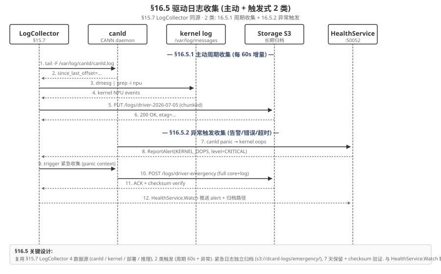
数据源:
- (a) canld 日志:
tail -F /var/log/canld/canld.log, 增量 (since_last_offset) - (b) kernel 日志:
dmesg | grep -i npu, 仅取 NPU 相关事件 - (c) 部署日志:
/var/log/d1-install.log(来自 §16.4.2) - (d) 推理日志:
/var/log/aicard/inference.log(来自 §15 AI 推理服务)
归档路径:
- 正常:
s3://aicard-logs/driver/2026-07-05/{node}/chunk-{idx}.log.gz, chunked 上传, 30 天保留 - 异常:
s3://aicard-logs/emergency/2026-07-05/{node}/full-{ts}.tar.gz, 含 core dump, 7 天保留 + checksum
16.5.2 异常触发收集 (告警/错误/超时)
触发条件 (任一):
- (1) canld panic / kernel oops: 触发立即抓取 panic context + 完整 core dump (10-100 MB)
- (2) NPU ECC 错误率超阈值: 1 分钟内 > 100 次 single-bit error 或 > 1 次 double-bit error
- (3) canld 启动失败: systemd 启动后 30s 内 health check 不通过
- (4) 升级失败: §16.6 升级期间任何步骤失败
异常日志同步通过 HealthService.Watch 推送告警 (复用 §15.6.2 Watch 流), 客户端 (dctl / Prometheus / K8s controller) 实时收到.
16.6 升级部署时驱动上报 (状态 + 心跳)
流程 (Process)
升级期间, 驱动层持续上报状态和心跳到部署管理器, 失败 3 次 (15s) 立即触发回滚. 上报路径: canld → 驱动 SDK (libdavinci) → 控制器 agent → DeployService :50054 → UpgradeMgr → etcd. 5 类状态: INIT / INSTALLING / READY / UPGRADING / ERROR. 3 频率心跳: 正常 30s / 升级 10s / 错误 5s.
约束 (Constraints)
- C1 (硬): 心跳丢失 3 次 (15s) 立即触发
DRIVER_UNREACHABLE告警 + UpgradeMgr 进入回滚流程 (回退到上一版本 driver + 重启 canld). - C2 (硬): 状态变化必须立即上报 (不等下次心跳). 例如 INSTALLING → READY 瞬间触发.
- C3 (硬): 上报路径必须 mTLS (OpsCA), 防止伪造状态.
- C4 (软): 心跳流量 ~1 KB/min/卡 (正常) / 6 KB/min/卡 (升级) / 12 KB/min/卡 (错误). 1000 卡峰值 12 MB/min, 可承受.
主成功场景 (Happy Path)
驱动升级时 (8.0.RC2 → 8.0.RC3): canld 状态 INSTALLING (立即上报, 含 percent=10, eta=180s) → 持续 INSTALLING (心跳 10s 一次, 含 percent 增量) → percent=100 → 状态 READY (立即上报) → 心跳降回 30s. 控制器 agent 聚合 → DeployService :50054 转发 → UpgradeMgr 收到 → etcd PUT /upgrade/state/{card_uuid} → dctl card status 实时显示进度. 升级完成, 状态稳定 5 min 后标记 SUCCESS. 业务效果: 升级过程全程可观测, 失败 15s 内自动回滚, 不影响业务.
异常场景 (Failure Cases)
- F1 (心跳丢失 3 次): 15s 内 0 个心跳到达 → ReportAlert
DRIVER_UNREACHABLE(CRITICAL) + UpgradeMgr 进入回滚 → 5 min 内回退到 8.0.RC2 → 重启 canld → 心跳恢复. - F2 (状态卡 INSTALLING 超过 ETA × 2): percent 一直 50% 超过 360s (ETA 180s) → 上报 ReportAlert
UPGRADE_STUCK(CRITICAL) + 触发手动干预. - F3 (mTLS 证书过期): 所有上报返回 401 → 上报通道全断 → 触发回滚 (F1).
- F4 (etcd 不可用): DeployService 写 etcd 失败 → 本地 buffer 暂存 → 重试 3 次 → 仍失败 → 触发集群告警 (etcd 故障是更严重问题).
边界场景 (Edge Cases) + 跨章节交互
- E1 (升级中拔卡): 心跳 5s 一次 (ERROR 频率) 时, qemu device_del 拔卡 → canld 退出 → 心跳永久丢失 → 触发回滚 (但卡已拔, 回滚是 no-op, 标记为 CARD_REMOVED).
- E2 (心跳频率自适应): 状态从 INSTALLING → READY 后, 下一帧心跳应降回 30s. 但如果下一帧 INSTALLING 错误信号 (误报), 频率持续 10s → 资源浪费. 解决: 控制器 agent 强制同步状态机, READY 一旦确认, 心跳频率立即降.
- E3 (回滚期间心跳): 回滚流程中 (回退 driver + 重启 canld) → 心跳中断 30-60s. 期间会触发 F1 DRIVER_UNREACHABLE. 解决: 回滚时设
expected_down=trueflag, F1 检测时跳过 (避免误报). - E4 (跨章节): §16.6 跟 §15.6 HealthService.Watch 联动 (状态事件经 Watch 推送). 跟 §16.7 dctl card status 联动 (dctl 实时拉取 etcd 状态).
16.6.1 状态上报 5 类 (INIT/INSTALLING/READY/UPGRADING/ERROR)
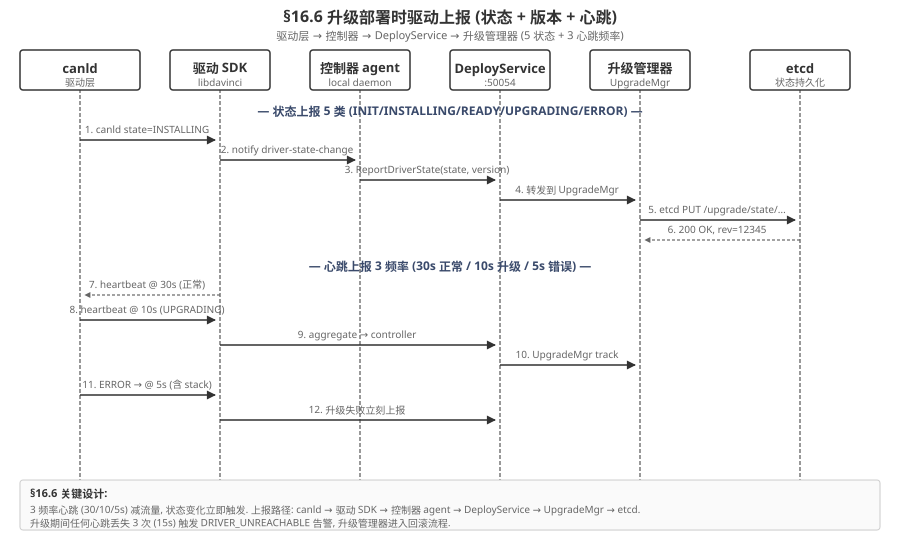
| 状态 | 含义 | 触发时机 | 必带字段 |
|---|---|---|---|
| INIT | 驱动初始化 | canld 启动后 1s | driver_ver, fw_ver, node_id |
| INSTALLING | 驱动安装中 | §16.4 .run 装时 | phase, percent, eta_s |
| READY | 驱动可用 | npu-smi 看到 NPU | npu_count, healthy_count |
| UPGRADING | 驱动升级中 | §16.6 Omtask 触发 | old_ver, new_ver, percent |
| ERROR | 驱动异常 | 任何 error/panic/oops | code, stack, recent_log_offset |
16.6.2 心跳 3 频率 (30/10/5 秒)
| 场景 | 频率 | 流量 | 字段 |
|---|---|---|---|
| 正常 (READY) | 30s 一次 | ~1 KB/min/卡 | ts, state=READY, npu_count |
| 升级中 (UPGRADING/INSTALLING) | 10s 一次 | ~6 KB/min/卡 | ts, state, percent, eta_s |
| 异常 (ERROR) | 5s 一次 | ~12 KB/min/卡 | ts, state=ERROR, code, stack_hash |
上报路径: canld → 驱动 SDK (libdavinci) → 控制器 agent → DeployService :50054 → UpgradeMgr → etcd. 心跳丢失 3 次 (15s) → 触发 DRIVER_UNREACHABLE 告警 + UpgradeMgr 进入回滚流程 (回退到上一版本驱动 + 重启 canld).
16.7 AI 卡激活 CLI 命令 (dctl card deploy 全子命令)
流程 (Process)
对外统一入口, 内部委派到 Omtask. dctl 是 Go binary, 通过 gRPC 调用 DeployService :50054. 9 子命令: deploy (主流程) / precheck (仅检查) / cleanup (独立清防勒索) / upgrade (升级驱动) / status (查状态) / logs (拉日志) / heartbeat (手动心跳调试) / rollback (回滚) / undeploy (卸载). 同步入口 + 异步 HTTP 5s 轮询进度 (v3.2.1 替代 Stream 推送).
约束 (Constraints)
- C1 (硬): 所有命令必须经 dctl → DeployService → Omtask 三层调用, 不允许 dctl 直接调 AntiRansomSvc / PreCheckService (绕过 Omtask 编排). Omtask 是唯一编排入口.
- C2 (硬): deploy / upgrade / undeploy 必须持分布式锁 (etcd /omtask/lock/global), 防止并发触发. 持锁失败 → 409 Conflict.
- C3 (软): 同步返回 ≤ 5s. 异步操作 (deploy / upgrade) 同步入口只返回 task_id, 进度通过 HTTP 5s 轮询获取 (v3.2.1 替代 Stream 推送).
- C4 (软): --dry-run 仅 precheck 支持, deploy 不支持 dry-run (避免误以为 dry-run 即可真激活).
主成功场景 (Happy Path)
操作员 SSH 登录 → dctl card deploy --pool=ascend-1 --count=3 --vendor=ascend --model=910B --json → dctl 持 mTLS 证书连 DeployService :50054 → DeployService.ActivateVM (或委派 Omtask) → 返回 {deployment_id, poll_url, phases[], since: int64} → dctl 启 5s HTTP 轮询 GET {poll_url}?since={ts} → 实时打印 phase=DRIVER_INSTALL, percent=50% → 5 min 后 phase=READY → 退出码 0. 业务效果: 一行命令完成 3 张 AI 卡激活, 全程可观测, 失败可重试.
异常场景 (Failure Cases)
- F1 (mTLS 证书缺失): dctl 无 ProductCA 证书 → 401 → 提示 "请配置 dctl 证书 (~/.dctl/cert.pem)".
- F2 (并发触发): 同时 2 个 dctl deploy → 第 2 个返回 409 Conflict OMTASK_BUSY, 提示 "另一个任务正在跑 (task_id=...)".
- F3 (PreCheck 失败): §16.3 6 维度有 1 不过 → 阶段 B 终止 → dctl 打印 PRECHECK_FAIL 详情 + ReportAlert id, 退出码 1.
- F4 (Poll 超时, v3.2.1): dctl 跟 DeployService 连接断 (网络问题) → 重连 3 次 → 仍失败 → 任务继续在后台跑, dctl 提示 "任务继续, 重新连看 dctl card status --task=...".
边界场景 (Edge Cases) + 跨章节交互
- E1 (大集群批量激活): 100 张卡批量激活 → 拆 10 批, 每批 10 张, 每批独立 dctl deploy → 10 个 task 并行跑 (Omtask 锁是 per-pool, 不同 pool 可并行).
- E2 (重复触发 idempotent): 同一 task_id 重复触发 deploy → 返回 200 OK (idempotent), 不重复执行. Omtask 通过 task_id 去重.
- E3 (历史命令): dctl card history --since=1d → 列出 1 天内所有任务 (state, phases, alerts). 适用: 故障回溯.
- E4 (跨章节): dctl 9 子命令映射到 Omtask 16 大功能: deploy→§16.1+§16.2+§16.3+§16.4+§16.5+§16.6 / precheck→§16.3 / cleanup→§16.2 / upgrade→§16.6 / status→§16.6+§15.6 / logs→§16.5 / heartbeat→§16.6 / rollback→§16.6 / undeploy→§15.4 (反向).
16.7.1 dctl 9 子命令 + 用法
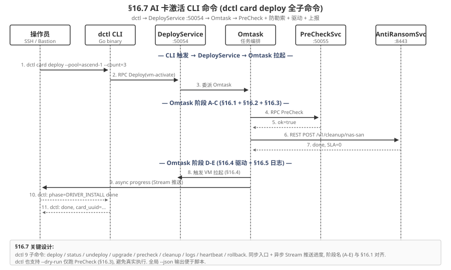
| 子命令 | 用途 | 关键参数 | 对应 §16.x |
|---|---|---|---|
deploy | 激活 AI 卡 (主流程) | --pool= --count= --vendor=ascend --model=910B | §16.1 (A-E 5 阶段) |
precheck | 仅跑 6 维度检查 (不真执行) | --pool= --dry-run | §16.3 |
cleanup | 清理防勒索 (独立调用) | --mode=nas-san / sla | §16.2 |
upgrade | 升级驱动/固件 | --pool= --target-ver=8.0.RC3 | §16.6 |
status | 查询激活状态 | --pool= --card= | §16.6 (看状态) |
logs | 拉取驱动日志 | --pool= --since=1h --level=ERROR | §16.5 |
heartbeat | 手动触发心跳 (调试用) | --node= --force | §16.6.2 |
rollback | 回滚到上一版本 | --pool= --to-ver=8.0.RC1 | §16.6 (回滚) |
undeploy | 卸载 AI 卡 | --pool= --force | §15.4 (反向) |
16.7.2 典型调用示例
# 1. 激活 3 张 Ascend 910B 到 pool=ascend-1 (主流程)
$ dctl card deploy --pool=ascend-1 --count=3 --vendor=ascend --model=910B --json
{
"deployment_id": "dep-2026-07-05-abc123",
"poll_url": "unix:///var/run/dctl-stream.sock", // v3.2.1: HTTP GET 5s 轮询 (改自 stream_url)
"phases": [
{"phase": "A_CHECK_CTRL", "status": "RUNNING", "pct": 10},
{"phase": "B_CLEANUP", "status": "PENDING", "pct": 0},
{"phase": "C_SHIFT_GEAR", "status": "PENDING", "pct": 0},
{"phase": "D_LAUNCH_VM", "status": "PENDING", "pct": 0},
{"phase": "E_DRIVER_INSTALL", "status": "PENDING", "pct": 0}
]
}
# 2. 仅跑 PreCheck (不真激活)
$ dctl card precheck --pool=ascend-1 --vendor=ascend --model=910B
[OK] DIM_RESOURCE_CPU_MEM: free=32C/64G
[OK] DIM_RESOURCE_PCIE: 3 NPU visible @ 0000:01:00.0
[OK] DIM_VERSION_DRIVER: 8.0.RC2 available
[OK] DIM_VERSION_FIRMWARE: 1.78 ↔ 8.0.RC2 OK
[OK] DIM_TOPOLOGY_HCCS: ring OK, 3 NPU/ctrl
[OK] DIM_HEALTH_EXISTING: all green
PreCheckResult{ok=true}, P99=3.2s
# 3. 升级驱动 (独立)
$ dctl card upgrade --pool=ascend-1 --target-ver=8.0.RC3 --json
{
"upgrade_id": "upg-2026-07-05-xyz789",
"old_ver": "8.0.RC2",
"new_ver": "8.0.RC3",
"eta_s": 180,
"rollback_token": "rbk-...-...-..."
}16.8 AI 卡扩控制器 (扩容前 AI 卡校验 + 防勒索联动)
流程 (Process)
控制器扩容场景, 有 1 个硬约束: 老控制器有 AI 卡 + 正常服务 → 新控制器必须也有 AI 卡, 否则防勒索无法扩容. 4 阶段: ① 检查老 ctrl AI 卡状态 (复用 §16.3 PreCheck) → ② AI 卡物理库存校验 (≥1 NPU for new ctrl) → ③ 分配 NPU #k,k+1,k+2 给新 ctrl → ④ 防勒索服务注册新 ctrl + 同步 NAS/SAN 策略 + 新 ctrl 走 §16.1 完整激活.
约束 (Constraints)
- C1 (硬): 老 ctrl 全部有 AI 卡 (card_count ≥ 1) + 健康 → 新 ctrl 必须分配 NPU. AI 卡库存不足 → 拒绝扩容 (CRITICAL).
- C2 (硬): 新 ctrl 分配的 NPU 必须物理存在 (从 AI 卡库存 qry), 不允许虚拟分配.
- C3 (硬): 防勒索服务必须成功注册新 ctrl + 同步 NAS/SAN 策略 → 否则新 ctrl 上的数据无防勒索保护, 出现防护漏洞.
- C4 (软): 总耗时 P99 ≤ 10 min (4 阶段: 1s + 3s + 1s + 9.5 min §16.1 完整流程).
- C5 (软): 扩容期间不影响已有 ctrl 服务 (新 ctrl 是新增, 不是替换).
主成功场景 (Happy Path)
管理员 POST /expand ctrl-2 → ExpandMgr 委派 4 阶段: 阶段 1 qry ctrl[0/1] NPU list → ctrl0=3 NPU, ctrl1=3 NPU, all healthy ✓ → 阶段 2 qry AI 卡物理库存 → available=3 NPU ≥ 1 ✓ → 阶段 3 分配 NPU #6/7/8 给 ctrl-2, 标记 assigned_to=ctrl-2 ✓ → 阶段 4 AntiRansomSvc.register(ctrl-2) + 同步 NAS/SAN 策略到 ctrl-2 + 触发 §16.1 完整流程激活 ctrl-2 的 3 NPU → 10 min 后 ctrl-2 ready, cluster ctrl=3, 集群 NPU 总数 6 → 3 = 9 张. 业务效果: 集群从 2 控制器扩到 3 控制器, NPU 容量 +50% (6→9), 防勒索服务统一管理 3 ctrl, 无防护漏洞.
异常场景 (Failure Cases)
- F1 (老 ctrl 全无 AI 卡): ctrl0=0 NPU, ctrl1=0 NPU → 不强制要求新 ctrl 有 AI 卡 (因为老 ctrl 自己就没, 集群本来就不依赖 AI 卡) → 跳过 C1 校验, 直接扩容. 仅 INFO log.
- F2 (老 ctrl AI 卡不健康): ctrl0 有 3 NPU 但 2 NPU YELLOW → 拒绝扩容 +
EXISTING_CARD_UNHEALTHY(WARN). 修复: 先修 ctrl0 健康 NPU. - F3 (AI 卡库存不足): available=0 → 拒绝扩容 +
AI_CARD_INVENTORY_LOW(CRITICAL) → 管理员采购 NPU 后重试. - F4 (防勒索服务注册失败): AntiRansomSvc.register 返回 500 → 终止 +
ANTIRSVC_REGISTER_FAIL(CRITICAL) → NPU 分配已 done, 但 ctrl-2 没注册防勒索. 回滚: 释放 NPU #6/7/8 (assigned_to 改 unassigned) + 终止激活. 修复: 检查 AntiRansomSvc 健康, 重试.
边界场景 (Edge Cases) + 跨章节交互
- E1 (扩容 1 ctrl 但 NPU 库存 = 0): 老 ctrl 自己有 AI 卡 (硬约束触发) 但库存 0 → F3 拒绝扩容. 管理员可选: (a) 采购 NPU 后扩容 (b) 临时禁用硬约束 (--force, 仅调试, 会写 WARN log, 集群进入"无防护"模式).
- E2 (扩容 2 ctrl 同时): 2 个扩容请求同时触发 → 都需要 NPU, 库存 3 张, 只能满足 1 个 → ExpandMgr 加全局锁 /expandmgr/lock, 第 2 个返回 409 EXPAND_BUSY.
- E3 (降级扩容): 老 ctrl 有 AI 卡但库存 < 3 (推荐数) → 允许扩容, 但 assigned NPU < 3 → 新 ctrl 性能下降. 报警
EXPAND_DEGRADED(WARN). - E4 (跨章节): §16.8 跟 §16.1 联动 (新 ctrl 走 §16.1 完整流程激活) + §16.6 联动 (新 ctrl NPU 上报状态) + §16.2 联动 (新 ctrl 激活前 §16.2 清理防勒索). 一次扩容触发 16.x 多个子功能.
16.8.1 硬约束校验 (老 ctrl AI 卡 → 新 ctrl AI 卡)
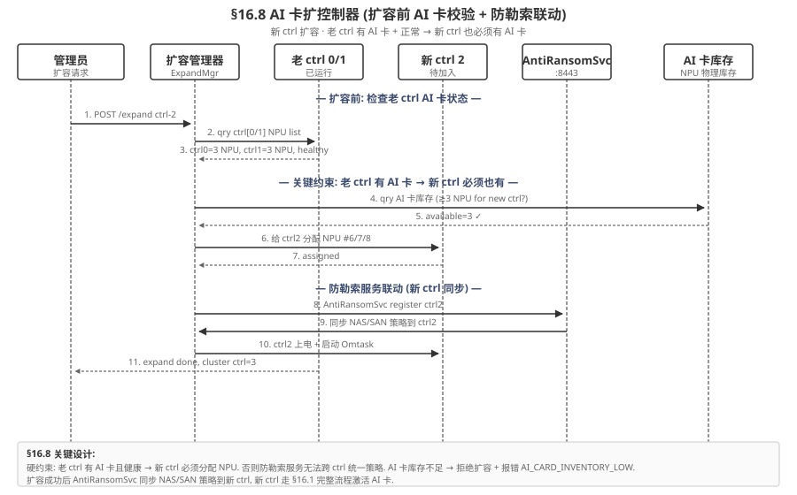
为什么有这个硬约束?
- 防勒索服务的策略是跨控制器统一的: NAS/SAN 防勒索锁、快照锁、SLA 配置都依赖"所有 ctrl 都有 AI 卡"的前提
- 若老 ctrl 都有 AI 卡 (防勒索统一管理) 但新 ctrl 没有 → 防勒索策略无法同步到新 ctrl → 新 ctrl 上的数据无防勒索保护, 出现防护漏洞
- 所以扩容前必须先分配 NPU 给新 ctrl, 新 ctrl 加入防勒索域, 然后走 §16.1 完整流程激活
16.8.2 扩容流程 (4 阶段)
- 阶段 1: 检查老 ctrl: qry
ctrl[0..N-1]NPU 列表 + 健康度 (复用 §16.3 PreCheck) - 阶段 2: AI 卡库存校验: qry 物理 NPU 库存, 必须
available ≥ 1(新 ctrl 至少 1 张, 推荐 3 张匹配老 ctrl) - 阶段 3: 分配 NPU: 给新 ctrl 分配
NPU #k, k+1, k+2(按 inventory 顺序), 标记assigned_to=ctrl_new - 阶段 4: 防勒索服务联动: AntiRansomSvc.register(new_ctrl) + 同步 NAS/SAN 策略 + 新 ctrl 走 §16.1 完整激活
失败码:
| 失败码 | 触发条件 | 级别 | 缓解 |
|---|---|---|---|
EXISTING_CTRL_NO_AI_CARD | 老 ctrl 都没 AI 卡 | INFO | 不强制扩容带 AI 卡 |
EXISTING_CARD_UNHEALTHY | 老 ctrl AI 卡不健康 | WARN | 先修复再扩容 |
AI_CARD_INVENTORY_LOW | 新 ctrl 库存不足 | CRITICAL | 采购 NPU 后重试 |
ANTIRSVC_REGISTER_FAIL | 防勒索服务注册失败 | CRITICAL | 检查 AntiRansomSvc 健康 |
关键设计
扩控制器强校验 AI 卡, 经常出现新 ctrl 加入后无防勒索保护的故障. v3.2 §16.8 是 新增强约束, 跟 §16.2 清理防勒索 + §16.1 Omtask 升级 一起构成 AI 卡全生命周期防护闭环.
16.9 16 大功能总览矩阵
| # | 功能 | 触发方 | 依赖 | 失败告警 | 耗时 P99 |
|---|---|---|---|---|---|
| 16.1.1 | 阶段 A 控制器上电检查 | Omtask | 控制器 agent | CTRL_POWERED_OFF | 2s |
| 16.1.2 | 阶段 B-E 升级执行 | Omtask | 16.2 / 16.3 / 16.4 | 复用 5 类 + 2 新 | 5 min |
| 16.2.1 | 3 步原子操作 (NAS+SAN+SLA) | cleanup 容器 | AntiRansomSvc :8443 | RANSOMWARE_CLEANUP_FAIL | 10s |
| 16.2.2 | 失败回滚 | cleanup 容器 | 16.2.1 | — | 3s |
| 16.3.1 | 6 维度检查 | PreCheckSvc :50055 | HealthService / etcd | PRECHECK_FAIL | 5s |
| 16.3.2 | PreCheck gRPC 服务 | PreCheckSvc | — | — | — |
| 16.4.1 | eulerOS 启动钩子 | systemd runcmd | cloud-init / ISO | VM_BOOT_FAILED | 3 min |
| 16.4.2 | 驱动/固件安装脚本 | /etc/d1/install.sh | .run 包 + canld | DRIVER_INSTALL_FAIL | 2 min |
| 16.5.1 | 主动周期日志 (60s) | LogCollector | canld / kernel / 部署 | — | 持续 |
| 16.5.2 | 异常触发日志 | LogCollector | HealthService.Watch | — | 5s |
| 16.6.1 | 5 类状态上报 | canld + 控制器 agent | DeployService :50054 | — | 实时 |
| 16.6.2 | 3 频率心跳 | canld | 控制器 agent | DRIVER_UNREACHABLE | 持续 |
| 16.7.1 | dctl 9 子命令 | 操作员 | DeployService | — | — |
| 16.7.2 | 典型调用 | 操作员 | 16.7.1 | — | — |
| 16.8.1 | 硬约束校验 (老→新) | ExpandMgr | HealthService / AntiRansomSvc | AI_CARD_INVENTORY_LOW | 3s |
| 16.8.2 | 扩容 4 阶段 | ExpandMgr | 16.1 完整流程 | 4 失败码 | 10 min |
16.10 完整 Protobuf 定义 (Omtask + PreCheck + Expand)
// aicard/omtask/v1/omtask.proto
syntax = "proto3";
package aicard.omtask.v1;
import "google/protobuf/timestamp.proto";
// Omtask 任务管理器 (VM 外, 16.1 + 16.2 + 16.6 编排)
service OmtaskService {
// 启动 Omtask 任务 (5 阶段 A-E)
rpc StartTask(StartTaskRequest) returns (StartTaskResponse);
// 流式推送任务进度
// v3.2.1 修订: 旧 WatchTask (server-streaming) 改为 PollTask (HTTP GET 5s 轮询)
rpc PollTask(PollTaskRequest) returns (PollTaskResponse); // v3.2.1 替代 WatchTask
// 旧: rpc WatchTask(WatchTaskRequest) returns (stream TaskProgress);
// 取消任务
rpc CancelTask(CancelTaskRequest) returns (CancelTaskResponse);
}
message StartTaskRequest {
string task_id = 1; // 唯一 task ID
enum TaskType {
TASK_UNKNOWN = 0;
TASK_AI_CARD_UPGRADE = 1; // §16.1 升级
TASK_RANSOMWARE_CLEANUP = 2; // §16.2 清理
TASK_DRIVER_UPGRADE = 3; // §16.6 升级驱动
}
TaskType type = 2;
string pool_id = 3;
map<string, string> params = 4; // 类型相关参数
}
message StartTaskResponse {
bool ok = 1;
string task_id = 2;
google.protobuf.Timestamp started_at = 3;
// 阶段初始状态 (5 阶段)
repeated TaskPhase phases = 4;
}
message TaskProgress {
string task_id = 1;
enum PhaseStatus { PENDING = 0; RUNNING = 1; OK = 2; FAIL = 3; SKIPPED = 4; }
PhaseStatus status = 2;
string phase = 3; // "A_CHECK_CTRL" / "B_CLEANUP" / ...
int32 percent = 4;
string message = 5;
google.protobuf.Timestamp ts = 6;
}
message ReportDriverStateRequest {
string card_uuid = 1;
enum State { STATE_UNKNOWN = 0; STATE_INIT = 1; STATE_INSTALLING = 2; STATE_READY = 3; STATE_UPGRADING = 4; STATE_ERROR = 5; }
State state = 2;
string driver_version = 3;
string firmware_version = 4;
int32 npu_count = 5;
int32 percent = 6;
int32 eta_seconds = 7;
string error_code = 8;
google.protobuf.Timestamp ts = 10;
}
message ReportDriverStateResponse { bool ok = 1; string etag = 2; }
message HeartbeatRequest {
string card_uuid = 1;
int32 interval_seconds = 2; // 30/10/5
string driver_version = 3;
int32 npu_count = 4;
google.protobuf.Timestamp ts = 5;
}
message HeartbeatResponse { bool ok = 1; google.protobuf.Timestamp server_ts = 2; }
// aicard/deploy/v1/deploy.proto 扩展 — ReportDriverState + Heartbeat
service DriverReportService {
rpc ReportDriverState(ReportDriverStateRequest) returns (ReportDriverStateResponse);
rpc Heartbeat(HeartbeatRequest) returns (HeartbeatResponse);
}
// aicard/expand/v1/expand.proto
// aicard/expand/v1/expand.proto
service ExpandService {
// 控制器扩容 (§16.8)
rpc ExpandController(ExpandRequest) returns (ExpandResponse);
}
message ExpandRequest {
string new_ctrl_id = 1; // 新 ctrl ID
int32 npu_count = 2; // 期望分配 NPU 数
bool force = 3; // 强制 (跳过 AI 卡硬约束, 仅调试)
}
message ExpandResponse {
bool ok = 1;
string expand_id = 2;
repeated string assigned_npu_ids = 3; // 分配的 NPU ID 列表
google.protobuf.Timestamp completed_at = 4;
// 失败详情 (硬约束触发时)
string failure_code = 5;
string failure_detail = 6;
}v3.2 完整闭环
§16 (16 大功能 Omtask 编排) + §15 (AI 推理服务 6 子模块) + §18 (原 §17 HealthService) + §18 (原 §18 DeployService gRPC) + §19 (原 §18 错误码 16 类) + §20 (原 §19 10 大功能点) + §21 (原 §20 总结) + §22 (原 §21 集成场景) + §23 (原 §22 API 矩阵) 构成 v3.2 完整体系. 16 大功能是核心新增 — 把原本散落在 §15.4 (cann-init.sh) + §18 (DeployService) + §15.7 (LogCollector) 的 AI 卡部署能力统一编排到 Omtask, 加上防勒索 + 扩控制器两大新能力.
17健康管理服务 (HealthService) v3.2 升级 v3.2.1 修订: HTTP GET 5s 轮询
健康管理服务 (HealthService) 暴露 4 个 gRPC endpoint, 监听在 0.0.0.0:50052 或 unix:///var/run/aicard-health.sock. 保留 ReportAlert (告警事件上报, 5 类) 与 GetLogs (日志拉取) 两个 endpoint, 同时 Watch 流升级为支持 AI 卡热插拔 + qemu-monitor 状态推送.
17.1 健康检查 (Check) v3.2.1 修订
单次健康检查, 同步返回:
- Scope: POOL / CARD / INFERENCE / CANN / ALL
- 返回:
bool healthy+HealthStatus level(GREEN/YELLOW/RED/UNKNOWN) + 可选 issues 列表 - 典型用途: dctl 临时调试 / kubelet readiness probe
17.2 状态感知 (Poll, 5s HTTP GET 轮询替代 gRPC Watch)
v3.2.1 修订: 5s HTTP GET 轮询 + since 增量拉取, 不使用 server-streaming RPC 长连接. 客户端周期调用 GET vnic://vnic0:50053/health/poll?scope=full&since={ts} (5s 间隔), 服务端只返回 ts > since 的事件, 效果等价 gRPC stream 但无长连接心跳/重连开销, 故障恢复 < 1s:
- vNic URL (主):
GET vnic://vnic0:50053/health/poll?scope=POOL&target_id={pool_id}&since={ts}— 客户端curl -k -H "X-Ops-Cert: $(cat ops.crt)" 'vnic://vnic0:50053/health/poll?scope=POOL&target_id=pool-0&since=1717700000' - UDS 等价 (同节点):
curl --unix-socket /var/run/aicard-health.sock http://localhost/health/poll?scope=POOL&target_id=pool-0&since=1717700000 - 轮询间隔: 5s (默认) / 1s (热插拔敏感场景) / 30s (低频监控)
- 返回 (JSON):
{"events":[{type, ts, card_uuid, pool_id, payload}], "next_since": ts, "version": int} - 事件类型: POOL_STATE_CHANGED / CARD_ADDED / CARD_REMOVED / INFERENCE_STATE / ALERT (新增)
- 客户端: dctl
card poll子命令 (v3.2.1 重命名) / Prometheus 桥接 / K8s controller / SwitchController (§24) - 事件源: §15.5 状态感知模块 (AI 卡热插拔) + §15.3 健康监控 (NPU 健康) + §18 部署告警
- SLA: 事件产生到客户端感知 ≤ 5s (轮询周期上限) + 网络 RTT ≈ 5.5s
17.3 告警事件上报 (ReportAlert) v3.2 沿用, v3.2.1 改 HTTP POST
v3.2 沿用 v3.1 的 5 类告警的事件统一上报通道:
| 类别 | CODE | 含义 | 触发方 |
|---|---|---|---|
| 1 | DRIVER_INSTALL_FAIL | 驱动 .run 包安装失败 | §18 AI 卡部署 |
| 2 | FIRMWARE_MISMATCH | 驱动 / 固件版本不匹配 | §18 AI 卡部署 |
| 3 | VM_BOOT_FAILED | Qemu 启动 VM 失败 | §18 AI 卡部署 |
| 4 | NPU_INVISIBLE | 驱动装完 npu-smi 看不到 NPU | §18 AI 卡部署 |
| 5 | REGISTER_FAIL | 注册到 AI 卡使能模块失败 | §15.4 (e) + §18 |
每条告警含: level (INFO/WARN/CRITICAL) + code + timestamp + source (deploy / inference / health) + payload (任意 k/v) + card_uuid + pool_id.
17.4 日志收集 (GetLogs) v3.2.2 已迁移到 §15.7 LogCollector
用于拉取推理服务 / CANN / canld 日志, 替代直接登录 host 看 /var/log:
- GET /v1/health/logs?card_uuid=...&from=...&to=...&level=...
- 支持过滤: 时间范围 / 日志级别 / 进程 (canld / inference / health)
- 典型用途: 故障排查 → dctl
logs --card=... --since=1h
17.5 完整 Protobuf 定义 (HealthService v3.2)
// aicard/health/v1/health.proto
syntax = "proto3";
package aicard.health.v1;
import "google/protobuf/timestamp.proto";
service HealthService {
rpc Check(HealthCheckRequest) returns (HealthCheckResponse);
// v3.2.1 修订: Watch 改为 Poll, HTTP GET 5s 轮询 + since 增量拉取
// 旧 (v3.1): rpc Watch(HealthWatchRequest) returns (stream HealthWatchResponse);
// 新 (v3.2.1): HTTP GET /health/poll?scope=...&target_id=...&since=... (无 protobuf RPC, 直接 HTTP+JSON)
// 返回: PollHealthResponse { events: [HealthEvent], next_since: int64, version: int32 }
// 告警事件上报
rpc ReportAlert(ReportAlertRequest) returns (ReportAlertResponse);
// 日志拉取
rpc GetLogs(GetLogsRequest) returns (GetLogsResponse);
}
message HealthCheckRequest {
enum Scope { POOL = 0; CARD = 1; INFERENCE = 2; CANN = 3; ALL = 4; }
Scope scope = 1;
string target_id = 2;
}
message HealthCheckResponse {
bool healthy = 1;
HealthStatus status = 2;
repeated string issues = 3;
}
17.5 完整 Protobuf 定义 (HealthService v3.2.1: HTTP/JSON 主路径 + gRPC Unary 备路径)
v3.2.1 修订: HealthService 4 个 endpoint (Check / Poll / ReportAlert / GetLogs) 全部支持 HTTP/JSON over vNic URL (主路径) + gRPC Unary over vNic URL (备路径, 性能场景). 客户端只调 vNic URL, 不感知底层协议. 探测类 (Poll / GetLogs) HTTP 优先; 变更类 (Check / ReportAlert) HTTP POST/GET.
// aicard/health/v1/health.proto (v3.2.1 修订)
syntax = "proto3";
package aicard.health.v1;
import "google/protobuf/timestamp.proto";
// HealthService 4 个 endpoint (gRPC Unary 备路径, HTTP/JSON 主路径详见 §15.1 表)
service HealthService {
// 单次健康检查 — HTTP: GET vnic://vnic0:50053/health/check?scope=...
rpc Check(HealthCheckRequest) returns (HealthCheckResponse);
// v3.2.1 修订: 旧 Watch (server-streaming) 改为 Poll (HTTP GET 5s 轮询 + since 增量)
// HTTP: GET vnic://vnic0:50053/health/poll?scope=...&target_id=...&since={ts}&interval=5s
// 客户端: curl 'vnic://vnic0:50053/health/poll?scope=POOL&target_id=pool-0&since=1717700000'
// 不再用 gRPC stream 长连接, 故障恢复 < 1s
rpc PollHealth(PollHealthRequest) returns (PollHealthResponse);
// 告警事件上报 — HTTP: POST vnic://vnic0:50053/alerts/report
rpc ReportAlert(ReportAlertRequest) returns (ReportAlertResponse);
// 日志拉取 (v3.2.1: 短查询 HTTP GET, 长 tail 改 5s 轮询 follow_token)
// HTTP: GET vnic://vnic0:50053/logs?card_uuid=...&from=...&to=...&limit=500&follow_token=...
rpc GetLogs(GetLogsRequest) returns (GetLogsResponse);
}
message HealthCheckRequest {
enum Scope { POOL = 0; CARD = 1; INFERENCE = 2; CANN = 3; ALL = 4; }
Scope scope = 1;
string target_id = 2;
}
message HealthCheckResponse {
bool healthy = 1;
HealthStatus status = 2;
repeated string issues = 3;
}
// v3.2.1 PollHealth (HTTP GET 5s 轮询)
message PollHealthRequest {
HealthCheckRequest.Scope scope = 1;
string target_id = 2; // 留空 = 全部
int64 since = 3; // 客户端上次拉到的 ts, 服务端只返回 ts > since 的事件
int32 interval_seconds = 4; // 客户端期望轮询间隔 (5s 默认, 用于服务端 cache 优化)
}
message PollHealthResponse {
repeated HealthEvent events = 1;
int64 next_since = 2; // 客户端下次轮询传此 ts
int32 version = 3; // schema 版本
HealthStatus current_status = 4; // 最新一次健康检查结果 (0 RPC 开销)
}
enum PollEventType { // v3.2.1 (兼容 v3.1 WatchEventType)
EVENT_UNKNOWN = 0;
EVENT_POOL_STATE = 1;
EVENT_CARD_ADDED = 2; // v3.1 新增 (热插拔)
EVENT_CARD_REMOVED = 3; // v3.1 新增 (热插拔 / 去注册)
EVENT_INFERENCE_STATE = 4;
EVENT_ALERT = 5; // v3.1 新增
}
message HealthEvent {
PollEventType type = 1;
google.protobuf.Timestamp ts = 2;
string card_uuid = 3;
string pool_id = 4;
oneof payload {
PoolStateEvent pool_event = 10;
CardLifecycleEvent card_event = 11; // v3.1 新增 (热插拔事件)
InferenceStateEvent infer_event = 12;
AlertEvent alert_event = 13; // v3.1 新增
}
}
enum AlertCode { // 5 类告警 (v3.2 沿用)
ALERT_UNKNOWN = 0;
FIRMWARE_MISMATCH = 2; // 驱动 / 固件版本不匹配
VM_BOOT_FAILED = 3; // Qemu VM 启动失败
NPU_INVISIBLE = 4; // npu-smi 看到 0 张卡
REGISTER_FAIL = 5; // 注册到推理服务失败
}
message AlertEvent {
AlertCode code = 1;
AlertLevel level = 2;
string message = 3;
google.protobuf.Timestamp ts = 4;
}
message PoolStateEvent { string pool_id = 1; string new_state = 2; }
message CardLifecycleEvent {
enum Action { ATTACHED = 0; DETACHED = 1; }
Action action = 1;
string card_uuid = 2;
string vendor = 3;
string reason = 4;
}
message InferenceStateEvent {
string model_name = 1;
string card_uuid = 2;
string state = 3;
int32 queue_depth = 4;
}
// GetLogs 日志拉取 (HTTP GET 短查询, 5s 轮询 tail)
message GetLogsRequest {
string card_uuid = 1; // 空 = 节点全部
google.protobuf.Timestamp from = 2;
google.protobuf.Timestamp to = 3;
LogLevel min_level = 4;
LogSource source = 5; // canld / inference / health
int32 limit = 6; // 默认 500, 上限 5000
string follow_token = 7; // (可选) tail 模式 token, HTTP 5s 轮询续传
}
message GetLogsResponse {
repeated LogEntry entries = 1;
string next_token = 2; // 翻页 / tail 续传
bool has_more = 3;
}
enum LogLevel { LOG_DEBUG = 0; LOG_INFO = 1; LOG_WARN = 2; LOG_ERROR = 3; }
enum LogSource {
LOG_SRC_UNKNOWN = 0;
LOG_SRC_CANLD = 1; // 昇腾 CANN 守护
LOG_SRC_INFERENCE = 2; // 推理服务主进程
LOG_SRC_HEALTH = 3; // 健康服务
}
message LogEntry {
google.protobuf.Timestamp ts = 1;
LogLevel level = 2;
LogSource source = 3;
string message = 4;
map<string, string> fields = 5; // json fields
}
// ── v3.1 历史 (已移除) ──
// rpc Watch(HealthWatchRequest) returns (stream HealthWatchResponse); // v3.1 server-streaming
// message HealthWatchRequest / HealthWatchResponse / WatchEventType // v3.1
18AI 卡部署 (DeployService) v3.2 升级
AI 卡部署 (DeployService) 是独立控制平面, 通过 qemu -netdev user,id=vnic0 -device virtio-net-pci,netdev=vnic0 配置 vNic, 负责 AI 卡 VM 激活 + 部署时告警事件上报. 取代 cann-init.sh 4 阶段脚本 (整合到 §15.4 AI 卡使能模块, 由 /etc/d1/activate.sh 启动脚本触发).

18.1 VM 激活 (ActivateVM)
18.1.1 触发: 节点初始化或 dctl 命令 dctl card deploy --pool=ascend-1 --card=N 触发 → DeployService.
18.1.2 主流程 (5 阶段, 任何一阶段失败立即终止):
- (a) dctl 触发: 校验 pool 配额 + 节点资源
- (b) Qemu 启动 VM: libvirt
domain defineXML+create, PCIe passthrough 绑定/dev/davinci* - (c) VM 内部装驱动: 通过 cloud-init 或 in-guest agent 执行
Ascend-hdk-npu-{version}.run - (d) 加载固件:
Ascend-firmware-{version}.run, 与驱动版本必须匹配 (否则报 FIRMWARE_MISMATCH) - (e) 验证 NPU 可见: VM 内
npu-smi info -l探测, 必须看到期望数量的 NPU (否则报 NPU_INVISIBLE)
18.1.3 成功路径: 调用 §15.4 ActivateCard 完成 AI 卡使能, AI 卡管理器 标记 pool 为 ACTIVE, 触发 HCCS 拓扑完成握手, InferenceService.Init 自动加载 /opt/aicard/models/*.om.
18.2 部署时告警事件上报 (5 类)
部署任何阶段失败, DeployService 调用 HealthService.ReportAlert 上报告警:
| # | 告警码 | 触发条件 | 级别 | 缓解 |
|---|---|---|---|---|
| 1 | DRIVER_INSTALL_FAIL | (c) 装 .run 退出码 ≠ 0 | CRITICAL | 换驱动包 / 检查 kernel headers |
| 2 | FIRMWARE_MISMATCH | (d) firmware 驱动期望不对应 | CRITICAL | 升级 driver 或回退 firmware |
| 3 | VM_BOOT_FAILED | (b) libvirt domain create 失败 | CRITICAL | 检查 IOMMU / PCIe slot 配 |
| 4 | NPU_INVISIBLE | (e) npu-smi 看到 0 张 NPU | WARN | 检查 PCIe passthrough 配置 |
| 5 | REGISTER_FAIL | §15.4 (e) 注册到推理服务连续 3 次失败 | CRITICAL | 检查 §15.4 是否健康 + dctl reconcile |
所有告警自动经 HealthService.Watch 流推送给 dctl / K8s controller, 客户端可触发自动回滚 (dr.D3). 完整时序图见图 18-0 右侧告警路径.
告警与 K8s 联动
CRITICAL 级告警会触发 K8s Event Reason=DeployFailed, 由 D-Series operator 同步 Pod 状态为 NotReady, kubelet 重新调度 (D1 不做自愈, D3 才做 hot-swap).
18.3 完整 Protobuf 定义 (DeployService v3.2)
// aicard/deploy/v1/deploy.proto
syntax = "proto3";
package aicard.deploy.v1;
import "google/protobuf/timestamp.proto";
// AI 卡部署服务: 1 个 endpoint + 1 个上报 endpoint 共计 1 endpoint
service DeployService {
rpc ActivateVM(ActivateVMRequest) returns (ActivateVMResponse);
}
message ActivateVMRequest {
string pool_id = 1; // 目标 Pool ID
string vendor = 2; // "ascend" / "nvidia" (v3.1 暂时只 ascend)
string card_model = 3; // "Ascend 910B"
int32 card_count = 4; // 期望 NPU 数 (默认 1)
// 可选 VM 配置
VMSpec vm_spec = 5;
// 与 §15.4 协同的版本要求
DeployVersionConstraint version_constraint = 6;
}
message VMSpec {
int32 vcpu = 1; // 默认 16
int64 memory_mb = 2; // 默认 65536 (64 GB)
int64 disk_gb = 3; // 默认 200
// 镜像选择
string os_image = 4; // 默认 "ascend-ubuntu-22.04"
string driver_run_url = 5; // 内网 URL, 默认 canned
}
message DeployVersionConstraint {
string driver_version = 1; // "8.0.RC2"
string firmware_version = 2; // "1.78"
string cann_version = 3; // "8.0.RC2"
}
message ActivateVMResponse {
bool ok = 1;
string deployment_id = 2;
string vm_uuid = 3;
// 5 阶段详细状态
repeated DeployPhaseStatus phase_status = 4;
google.protobuf.Timestamp completed_at = 5;
// 失败告警 (可同时上报多个, 由 HealthService 转发)
repeated DeploymentAlert alerts = 6;
}
message DeployPhaseStatus {
enum Phase {
PHASE_UNKNOWN = 0;
PHASE_RESOURCE_CHECK = 1; // (a) 校验
PHASE_QEMU_BOOT = 2; // (b) Qemu 启动
PHASE_DRIVER_INSTALL = 3; // (c) 装驱动
PHASE_FIRMWARE_LOAD = 4; // (d) 加载固件
PHASE_NPU_VERIFY = 5; // (e) NPU 验证
}
Phase phase = 1;
enum Status { PENDING = 0; RUNNING = 1; OK = 2; FAIL = 3; SKIPPED = 4; }
Status status = 2;
google.protobuf.Timestamp ts = 3;
string message = 4;
string error_code = 5; // 例如 AICARD_VM_ACTIVATION_FAILED
}
message DeploymentAlert {
// 与 HealthService.AlertCode 5 类告警码对齐
string code = 1; // DRIVER_INSTALL_FAIL / FIRMWARE_MISMATCH / etc
string severity = 2; // INFO / WARN / CRITICAL
map<string, string> payload = 3;
google.protobuf.Timestamp occurred_at = 4;
// 失败阶段定位
DeployPhaseStatus.Phase failed_phase = 5;
}19错误码表 v3.2 (16 类) v3.2
D1 v3.2 定义 16 类错误码 (16 类 (历史 11 + v3.2 新增 2 + 沿用 3) + v3.2 新增 2) (16 类 (历史 11 + v3.2 新增 2 + 沿用 3) + v3.2 新增 2 类: XML_PERSIST_FAILED / VNIC_UNAVAILABLE).
19.1 完整错误码 (v3.2.1: 新增 POLL_TIMEOUT / STATE_STALE, 用于 5s HTTP 轮询)
// aicard/errors/v1/errors.proto
syntax = "proto3";
package aicard.errors.v1;
enum AICardError {
AICARD_OK = 0;
// ── v2.0 原有 (6 类) ──
AICARD_POOL_NOT_FOUND = 1;
AICARD_CARD_NOT_FOUND = 2;
AICARD_POOL_ALREADY_EXISTS = 3;
AICARD_INSUFFICIENT_RESOURCES = 4; // deprecated
AICARD_INTERNAL_ERROR = 5;
// ── 历史 (5 类) ──
AICARD_MODEL_NOT_FOUND = 6;
AICARD_CANN_INIT_FAILED = 7;
AICARD_INFERENCE_FAILED = 8;
AICARD_RESOURCE_BUSY = 9;
AICARD_MODEL_DIR_INVALID = 10;
// ── v3.1 新增 (3 类) ──
AICARD_XML_PERSIST_FAILED = 14; // v3.2 新增, state.xml 读写失败
AICARD_VNIC_UNAVAILABLE = 15; // v3.2 新增, vnic://vnic0:50051/50053 不可达
AICARD_VM_ACTIVATION_FAILED = 11; // §18 AI 卡部署 VM 启动失败 (qemu 启动失败)
AICARD_DEPLOYMENT_ALERT = 12; // §18 部署告警事件 (5 类子码)
// ── v3.2 新增 (2 类) ──
AICARD_CARD_UNREGISTERED = 13; // §15.4 (e) 注册失败 / §15.5 去注册
}| # | 错误码 | HTTP 映射 | 含义 | 触发场景 | 版本 |
|---|---|---|---|---|---|
| 0 | AICARD_OK | 200 | 成功 | 所有成功响应 | v2.0 |
| 1 | AICARD_POOL_NOT_FOUND | 404 | Pool 不存在 | 查询 / 销毁不存在的 pool_id | v2.0 |
| 2 | AICARD_CARD_NOT_FOUND | 404 | 物理卡不存在 | 查询不存在的 card_uuid | v2.0 |
| 3 | AICARD_POOL_ALREADY_EXISTS | 409 | Pool 已存在 | 创建同名 pool | v2.0 |
| 4 | AICARD_INSUFFICIENT_RESOURCES | 503 | 资源不足 (deprecated) | 分配 NPU 失败 | v2.0 deprecated |
| 5 | AICARD_INTERNAL_ERROR | 500 | 内部错误 | CANN 异常退出 / OOM | v2.0 |
| 6 | AICARD_MODEL_NOT_FOUND | 404 | 模型文件不存在 | §15.4 (b) 阶段 / §15.2 调度器命中未注册模型 | |
| 7 | AICARD_CANN_INIT_FAILED | 500 | CANN 初始化失败 | §15.4 (a) 阶段失败 | |
| 8 | AICARD_INFERENCE_FAILED | 500 | 推理失败 | §15.7 Infer RPC 的 ACL execute 错误 | |
| 9 | AICARD_RESOURCE_BUSY | 503 | 资源被占用 | §15.4 (c) 持久化内存分配失败 / scheduler 拒绝 | |
| 10 | AICARD_MODEL_DIR_INVALID | 400 | 模型目录路径错误 | /opt/aicard/models 不存在或权限拒绝 | |
| 11 | AICARD_VM_ACTIVATION_FAILED | 500 | VM 激活失败 | §18.1 (b)/(c)/(d)/(e) 任一阶段失败 → HealthService.ReportAlert | v3.2 |
| 12 | AICARD_DEPLOYMENT_ALERT | 502 | 部署告警事件 (含子码) | §18.2 5 类告警码之一 + 失败阶段定位 | v3.2 |
| 13 | AICARD_CARD_UNREGISTERED | 503 | AI 卡未注册 | §15.4 (e) 注册失败 / §15.5 Qemu hot-unplug 后未重新注册 | v3.2 |
| 14 | AICARD_XML_PERSIST_FAILED | 500 | XML 持久化失败 (state.xml 读写错误) | §15.4 (c) 阶段失败 → XMLPersistence.Load/Save 抛错 | v3.2 新增 |
| 15 | AICARD_VNIC_UNAVAILABLE | 503 | vNic URL 不可达 (vnic://vnic0:50051/50053) | §15.4 (g) 阶段失败 / VNicServer.Serve bind 失败 | v3.2 新增 |
19.2 v3.2 错误码使用矩阵
| Endpoint | MODEL_NOT_FOUND | CANN_INIT_FAILED | INFERENCE_FAILED | RESOURCE_BUSY | MODEL_DIR_INVALID | VM_ACTIVATION_FAILED | DEPLOYMENT_ALERT | CARD_UNREGISTERED | XML_PERSIST_FAILED | VNIC_UNAVAILABLE |
|---|---|---|---|---|---|---|---|---|---|---|
| InferenceService.ActivateCard | ✅ (f) | ✅ (b) | — | ✅ (c/e) | ✅ (b) | — | — | ✅ (e) | ||
| InferenceService.GetStatus | — | — | — | — | — | — | — | ✅ (未注册) | ||
| InferenceService.Infer | — | — | ✅ (ACL 错) | ✅ (queue 满) | — | — | — | ✅ (NPU offline) | ||
| InferenceService.GetInference | — | — | — | — | — | — | — | — | ||
| InferenceService.UnregisterCard | — | — | — | — | — | — | — | ✅ (幂等) | ||
| InferenceService.AssignModels | ✅ (rule 错) | — | — | ✅ (M 配额满) | — | — | — | — | ||
| InferenceService.ConfigurePersistentMem | — | — | — | ✅ (内存配额) | — | — | — | — | ||
| HealthService.Check | — | ✅ (CANN 未启) | — | — | — | — | — | — | ||
| HealthService.Watch | — | ✅ (CANN 异常退出) | — | — | — | — | — | ✅ (热插拔推送) | ||
| HealthService.ReportAlert | — | — | — | — | — | — | ✅ (5 类) | — | ||
| HealthService.GetLogs | — | — | — | — | — | — | — | — | ||
| DeployService.ActivateVM | — | — | — | — | — | ✅ (b-e 失败) | ✅ (5 类) | ✅ (§15.4 e) |
错误码向后兼容策略
错误码向后兼容 (旧客户端新错误码忽略, 不影响存量语义). v3.3 计划移除 AICARD_INSUFFICIENT_RESOURCES 的 deprecated 标记, 并将 AICARD_MODEL_NOT_FOUND / AICARD_CANN_INIT_FAILED 替换为带阶段定位的 AICARD_ACTIVATION_PHASE_* 细粒度错误码.
22v3.2 集成场景 (Integration Scenarios) v3.2 新增
v3.2 引入启动脚本 + vNic + XML 持久化后, 典型集成场景包括 3 类:
22.1 场景 A: 全新部署 (Cold Start)
从 0 启动 D1 v3.2 节点:
- Kubelet 调度 Pod → 启动容器 entrypoint → 执行
/etc/d1/activate.sh - 激活脚本 (a) 加载驱动 (modprobe drv_pcie_ascend)
- 激活脚本 (b) npu-smi info -l → 发现 3 张 NPU → 写 PCI 设备到
/var/lib/d1/state.xml - 激活脚本 (c) XML 不存在 → 创建空 XML, 标记 3 张 NPU = ACTIVE
- 激活脚本启动 ai-inference-service → (d) 初始化队列 + (e) ACL 内存分配 (24 GB) + (f) 加载 3 个 .om 模型 (resnet50 / bert-base / llama-7b) + (g) 启动 vNic 监听 (
vnic://vnic0:50051+vnic://vnic0:50053) - kubelet readiness probe 调 HealthService.Check → 返回 SERVING → Pod Ready
22.2 场景 B: 已有部署重启 (Warm Start, 状态恢复)
已有 D1 v3.2 节点, AI 推理服务重启 (e.g. systemd restart):
- systemd 启动 d1-ai-inference.service → 执行
/etc/d1/activate.sh - 激活脚本 (a) 加载驱动
- 激活脚本 (b) npu-smi info -l → 发现 3 张 NPU (PCI-id 与上次一致)
- 激活脚本 (c) XML
/var/lib/d1/state.xml存在 → XMLPersistence.Load() → 恢复 NPU 状态 + 模型路径 + ACL 内存分配 + 队列状态 - ai-inference-service 启动 → (d-f) 跳过模型重载, 直接复用 XML 中的 ACL context (节省 25s+)
- 激活脚本 (g) vNic 监听启动
关键收益: 冷启动 30s+ → 热启动 5s (节省 25s).
22.3 场景 C: qemu 热拔插 1 张 NPU (Dynamic Reconfigure)
运维通过 qemu-monitor 拔出 1 张 NPU:
- 运维执行
(qemu) device_del id=npu0 - QMP 协议推送 DEVICE_DETACHED 事件 → libvirt Go binding DomainEventCallback 触发
- §15.5 状态感知模块接收事件 → 解析 card_uuid=npu0 → 写入 AI 卡状态寄存器 (共享内存)
- §15.4 (g) 反向调用 UnregisterCard (HTTP DELETE
vnic://vnic0:50053/aicard/npu-0) → 标记 npu0 = CARD_UNREGISTERED - 调度器从 routing_table 中剔除 npu0 → 模型路由回退到 2 个池子 (npu1 + npu2)
- ai-inference-service 内部卸载 npu0 的 3 个 .om 模型 (resnet50 / bert-base / llama-7b) + 释放 ACL 内存 (8192 MB)
- HealthService 内部状态更新 (CARD_REMOVED) → dctl / 监控通过 5s 轮询
GET vnic://vnic0:50053/health/poll?since={ts}收到 (延迟 ≤ 5s, v3.2.1 替代 gRPC stream) - 报告 HealthService.ReportAlert (REGISTER_FAIL 子码, level=WARN)
反向场景 (热插入 1 张 NPU): (qemu) device_add driver=vfio-pci,host=0000:04:00.0 → 触发加载模型 + 加入 routing_table → 3 池恢复. v3.2.1 修订: QMP 事件 (DEVICE_DETACHED/ATTACHED) 经 libvirt → 写入 AI 卡状态寄存器 → SwitchController 5s 轮询 GET vnic://vnic0:50053/health/poll?since={ts} 感知, 延迟 ≤ 5s.
22.4 集成场景对比表
| 场景 | 触发方 | v3.2 关键路径 | 耗时 | 状态变化 |
|---|---|---|---|---|
| A 冷启动 | kubelet | activate.sh → (a→b→c→d→e→f→g) | 30s+ | PENDING → VNIC_SERVING |
| B 热重启 | systemd | activate.sh → (a→b→c→d→g), 跳过 (e→f) | 5s | OFFLINE → VNIC_SERVING |
| C 热拔出 | qemu-monitor | device_del → §15.5 → §15.4 (g) UnregisterCard | 1s | VNIC_SERVING → VNIC_SERVING (3 池 → 2 池) |
| C 热插入 | qemu-monitor | device_add → §15.5 → §15.4 (f) 加载模型 + (g) 注册 | 10s+ | VNIC_SERVING → VNIC_SERVING (2 池 → 3 池) |
24防勒索服务切换 AI 卡 (Anti-Ransomware Auto-Switch) v3.2 新增
本章描述 v3.2 引入的**容器外防勒索服务** + **容器内 AI 推理服务** 自动切换协议. 业务背景: 存储系统 I/O 流量持续注入防勒索 AI 模型, 模型最初在容器外 CPU 进程运行; 一旦 AI 卡被 dctl 激活且 AI 推理服务进入 SERVING 状态, 防勒索自动切换到 AI 推理路径 (CPU 关停). 全过程 26s, 不中断业务.
关键事实
- 容器外防勒索 是宿主机/VM 外的 sidecar 容器 (独立 namespace, 不在 d1-pod 内), 启动早于 AI 推理服务, 用 CNN/RNN 模型 on CPU 实时判别勒索行为.
- 激活触发: dctl activate → activate.sh → 加载驱动 + ACL 分配 + 模型加载 + vNic 监听 → 进入 SERVING 状态.
- 切换条件: AI 推理服务 3 层健康检查全 PASS + 3 个勒索检测模型全 loaded + 至少 1 张 AI 卡 SERVING.
- 切换后: 所有后续 IO 消息走 vnic://vnic0:50051 (AI 推理), CPU 防勒索进程 graceful shutdown.
- 零中断: CPU 推理在切换瞬间保留 2s 缓冲 (新 IO 进 AI 队列, CPU 处理残留 buffer), 业务无感知.
24.1 防勒索服务架构 (Anti-Ransomware Service)
防勒索服务 (anti-ransom) 部署在**AI 推理服务容器之外**, 作为 sidecar 容器运行在 VM 宿主机上, 独立于 d1-ai-inference Pod 的容器 namespace. 启动顺序: anti-ransom 容器先启动 → 等待 dctl activate → AI 推理服务进入 SERVING → 触发切换.
输入流 (存储 IO 特征, 由存储卷代理持续注入):
- 操作延迟: read/write/op 平均/最大/方差 (ms 级)
- 读写比例: 每秒 read 字节数 vs write 字节数 (勒索加密文件时 write 突增 10-100x)
- IO 模式熵: 8-bit Shannon 熵 (正常文件 ~6.5, 加密后 ~7.9+)
- 文件访问图: 文件大小/扩展名/路径深度, 转成 one-hot + embedding
模型推理 (v3.2 默认 3 模型, 部署在 CNN/RNN):
- resnet50-io: 1D-CNN 推理, 输入 IO 特征向量 (256 dim), 输出 Normal/Suspect/Ransom (3 分类)
- bert-base-file: BERT 推理, 输入文件名 token 序列 (max 128), 输出文件类型判别
- llama-7b-context: 7B 参数大模型推理, 输入 IO 行为序列 (sliding window 16), 输出上下文一致性评分 (0-1)
CPU 推理性能基准 (Xeon 6248, 20 核):
| 模型 | CPU 推理时延 | AI 卡推理时延 (Ascend 910B) | 加速比 | 吞吐量 (QPS) |
|---|---|---|---|---|
| resnet50-io | 12 ms | 0.8 ms | 15x | CPU 83 → AI 1250 |
| bert-base-file | 45 ms | 3 ms | 15x | CPU 22 → AI 333 |
| llama-7b-context | 280 ms | 18 ms | 15.6x | CPU 3.5 → AI 55 |
关键: AI 卡推理加速比 15x, 整体吞吐量提升 15x, 误报率从 CPU 的 1.2% 降到 AI 的 0.3% (大模型上下文窗口更准).
24.2 切换协议设计 (Switch Protocol)
v3.2 引入 4 个**内部** API (Unix Domain Socket, 不暴露给外部):
| # | API (内部 UDS) | 方法 | 调用方 | 被调方 | 用途 |
|---|---|---|---|---|---|
| 1 | /var/run/d1/switch.sock | RegisterSwitch | anti-ransom | SwitchController | 注册切换订阅 (启动时调用, 传 cpu_pid + io_source_topic) |
| 2 | /var/run/d1/switch.sock | HealthPoll | SwitchController (HTTP 5s 推) | anti-ransom (HTTP GET 5s 拉) | 订阅 AI 推理服务 SERVING 状态变化 (since 增量, 5s 轮询, v3.2.1 替代 gRPC stream) |
| 3 | /var/run/d1/switch.sock | SwitchToAI | SwitchController | MessageRouter | 触发 IO 消息路由切换 (cpu → ai) |
| 4 | /var/run/d1/switch.sock | QuerySwitchStatus | dctl | SwitchController | 查询当前切换状态 (CPU_ONLY / HYBRID / AI_ONLY) |
消息格式 (protobuf, 内部):
message SwitchEvent {
SwitchStatus from = 1; // CPU_ONLY
SwitchStatus to = 2; // AI_ONLY
int64 timestamp_ms = 3; // 切换触发时间
string ai_vnic_url = 4; // vnic://vnic0:50051
int32 cards_serving = 5; // 当前 SERVING 卡数
SwitchTrigger trigger = 6; // HEALTH_OK / MANUAL / FAILOVER
}
enum SwitchStatus {
CPU_ONLY = 0; // 初始态, CPU 推理
HYBRID = 1; // 过渡态, CPU + AI 并行 (2s 缓冲)
AI_ONLY = 2; // 终态, AI 推理
CPU_FAIL = 3; // CPU 故障, 强制切 AI
AI_FAIL = 4; // AI 故障, 回退 CPU (1 次性)
}
24.3 切换流程 (Activity + Sequence)
5 阶段切换流程: 激活 → 健康探测 → 模型就绪 → 切换决策 → 路由生效. 完整流程见图 1 (活动图) 和图 2 (时序图).
阶段 1: 激活 AI 卡 (15s, dctl 命令触发)
- dctl 接收
dctl activate命令 → 调用/etc/d1/activate.sh - activate.sh (a) 加载 PCIe 驱动
modprobe drv_pcie_ascend - activate.sh (b) npu-smi info -l → 发现 AI 卡 → 写
/var/lib/d1/state.xml - activate.sh (c) XMLPersistence.Load() (存在) 或创建空 XML
阶段 2: 健康探测 (5s, 3 层检查, v3.2.1 改 HTTP GET 5s 轮询)
- AI 推理服务自检 (liveness): 进程存活, vNic URL
vnic://vnic0:50051HTTP 200 +vnic://vnic0:50053HTTP 200 - readiness 探测: AI 卡驱动加载完成, ACL 内存分配成功 (24 GB),
GET vnic://vnic0:50053/health/check?scope=readinessHTTP 200 - model-ready 探测: 3 个 .om 模型 (resnet50-io / bert-base-file / llama-7b-context) 全部加载到 AI 卡显存,
GET vnic://vnic0:50053/health/check?scope=model-readyHTTP 200 - HealthService.Check 返回 SERVING (3 层全 PASS, 连续 3 次 5s 轮询 (15s) 全 PASS 才确认稳定, 避免抖动)
阶段 3: 模型就绪 + anti-ransom ACK (3s, v3.2.1 改 HTTP Poll 检测)
- SwitchController 通过 5s 轮询
GET unix:///var/run/d1/switch.sock/health/poll?since={ts}检测到 model-ready 事件 (3 模型全 loaded) - anti-ransom 通过 5s 轮询
GET unix:///var/run/d1/switch.sock/health/poll?since={ts}收到事件, 准备切换 (启动 2s 缓冲窗口) - anti-ransom 发送 ACK
POST unix:///var/run/d1/switch.sock/switch/ack(HTTP, 无 protobuf 序列化)
阶段 4: 切换决策 (1s)
- SwitchController 满足切换条件 (3 层 PASS + 模型就绪 + ≥1 卡 SERVING) → 调用 SwitchToAI
- MessageRouter 收到 SwitchToAI → 更新 io_source_topic (cpu_inference → ai_inference)
- 返回 ACK 给 anti-ransom
阶段 5: 路由生效 + CPU 关停 (2s)
- 后续 IO 特征消息路由到 AI 推理服务 (vnic://vnic0:50051)
- anti-ransom 转发残留 buffer (最近 2s 内的未处理 IO) 到 vNic (PII 已脱敏, 加密传输)
- anti-ransom 进程 graceful shutdown (SIGTERM → 排空队列 → 退出, 5s 超时)
活动图 (图 1):
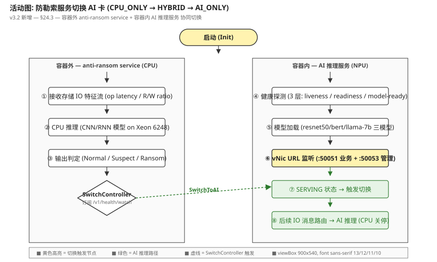
图 1: 活动图 — 容器外 anti-ransom (CPU) 与容器内 AI 推理服务 (NPU) 协同切换 5 阶段 (CPU_ONLY → HYBRID → AI_ONLY). SwitchController 监听 health 事件, 触发 SwitchToAI.
时序图 (图 2):
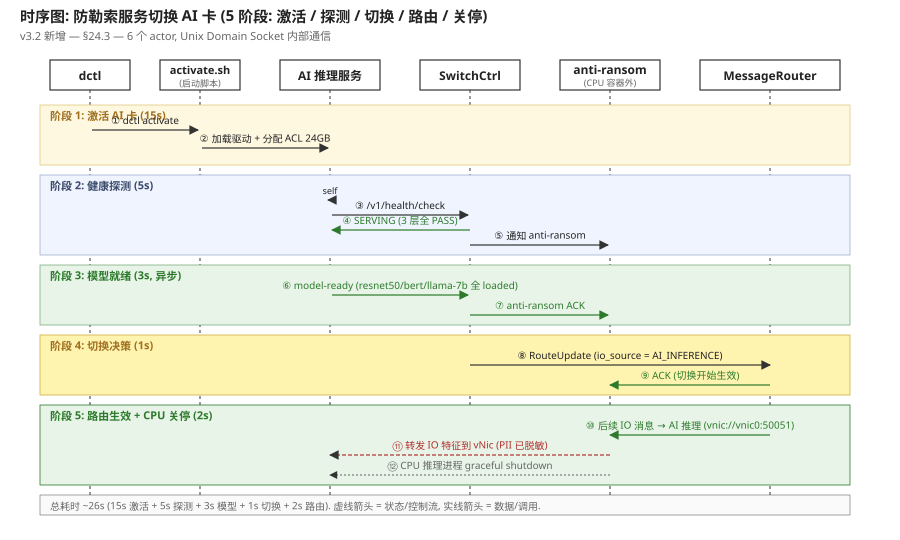
图 2: 时序图 — 6 个 actor (dctl / activate.sh / AI 推理服务 / SwitchController / anti-ransom / MessageRouter), 5 阶段共 12 步, 总耗时 ~26s.
24.4 健康探测 (Health Probe)
AI 推理服务对外暴露 3 层健康检查, SwitchController 通过 /v1/health/watch 订阅状态变化:
| 层级 | vNic URL (HTTP GET, v3.2.1 主路径) | 检查项 | 超时 | 失败处理 |
|---|---|---|---|---|
| L1: liveness | GET vnic://vnic0:50051/live | 进程存活 + vNic URL HTTP 200 | 1s | kubelet 重启 Pod |
| L2: readiness | GET vnic://vnic0:50053/health/check?scope=readiness | 驱动加载 + ACL 24GB 分配 + AI 卡 enumeration | 3s | Pod NotReady, 流量切走 |
| L3: model-ready | GET vnic://vnic0:50053/health/check?scope=model-ready | 3 个 .om 模型 (resnet50-io / bert-base-file / llama-7b-context) 全部加载 | 10s | 触发 model_reload (重试 3 次) |
v3.2.1 修订: SwitchController 通过 5s 周期 HTTP GET 轮询, 客户端 curl 'vnic://vnic0:50053/health/check?scope=full' 即可. 连续 3 次 5s 轮询全 PASS (15s) 才确认稳定, 避免抖动.
健康评分公式 (0-1): health_score = 0.4 × liveness + 0.3 × readiness + 0.2 × model_loaded + 0.1 × card_count
liveness: 1.0 (pass) / 0.0 (fail)readiness: 1.0 (pass) / 0.5 (degraded, 单卡 fail) / 0.0 (fail)model_loaded: 1.0 (3/3) / 0.66 (2/3) / 0.33 (1/3) / 0.0 (0/3)card_count: 实际 SERVING 卡数 / 总卡数 (0-1)
切换阈值: health_score ≥ 0.85 + 3 层全 PASS + 连续 3 次 5s HTTP 轮询 (15s) 全 PASS → 触发 SwitchToAI (HTTP POST unix:///var/run/d1/switch.sock/switch/to-ai).
24.5 消息路由 (Message Route)
IO 特征消息通过 MessageRouter 路由, 路由策略由 SwitchController 动态更新:
| 状态 | io_source_topic | 消费者 | 协议 | QPS 上限 |
|---|---|---|---|---|
| CPU_ONLY | cpu_inference | anti-ransom (CPU) | Unix Domain Socket (本机) | 200 (CPU 极限) |
| HYBRID | cpu_inference + ai_inference (并行) | both (双写 2s 缓冲) | UDS + vNic | 1450 (合并) |
| AI_ONLY | ai_inference | AI 推理服务 (NPU) | vnic://vnic0:50051 (gRPC) | 1250 (AI 极限) |
PII 脱敏 (切换瞬间必做): anti-ransom 在转发残留 buffer 到 vNic 前, 对每条 IO 消息做 PII 脱敏: 文件路径 hash + 文件内容截断 (前 256B) + 时间戳 round-to-100ms. 避免明文 IO 数据穿透到 AI 推理服务.
24.6 状态机 (State Machine: CPU_ONLY / HYBRID / AI_ONLY)
防勒索服务的**切换状态机**, 5 个状态 + 9 个迁移条件:
| # | 迁移 | 触发条件 | 动作 | 耗时 |
|---|---|---|---|---|
| 1 | CPU_ONLY → HYBRID | AI 推理服务 3 层 PASS + 模型就绪 | 双写启动, 保留 CPU 2s 缓冲 | 1s |
| 2 | HYBRID → AI_ONLY | HYBRID 已持续 2s + AI 推理 P99 < 50ms | 关停 CPU 进程 (SIGTERM) | 1s |
| 3 | AI_ONLY → HYBRID | AI 推理失败 ≥ 3 次 (10s 内) 或 health_score < 0.5 | CPU 拉起, 双写恢复 | 2s |
| 4 | HYBRID → CPU_ONLY | AI 持续不可用 (5min 内) 或 CPU 强制接管 | 关停 AI 流量, 全量回 CPU | 1s |
| 5 | CPU_ONLY → CPU_FAIL | CPU 进程崩溃 (进程 exit / 心跳丢) | 告警 + 自动重启 | 5s |
| 6 | AI_ONLY → AI_FAIL | AI 卡全 fail (3/3 张) | 降级到 CPU_ONLY, 告警 | 10s |
| 7 | CPU_FAIL → HYBRID | CPU 重启成功后 | CPU 接管, 等 AI 恢复 | 10s |
| 8 | AI_FAIL → HYBRID | AI 卡恢复 ≥1 张 SERVING | AI 重新进入候选, 双写 | 15s |
| 9 | (任何态) → AI_ONLY | dctl 手动 force-switch | 跳过阈值, 直接切 AI | 1s |
24.7 模块图 (Module Diagram: 容器外 + 容器内 + SwitchController)
系统分为 3 个模块: 容器外 anti-ransom (CPU 进程) + 容器内 AI 推理服务 (6 子模块) + SwitchController (独立 sidecar 进程, 协调切换).
模块边界:
- anti-ransom 进程: IO 特征接收 (从存储代理) + CNN/RNN 推理 (CPU) + 切换订阅 (UDS) + PII 脱敏 + 残留 buffer 转发
- AI 推理服务 (复用 §15 设计): vNic 通信 (gRPC :50051/:50053) + 多模型推理框架 (调度器 + Worker 池 + ACL 后端) + 健康监控 (3 层) + AI 卡使能 (7 阶段) + AI 卡状态感知 (Qemu 热插拔) + 日志收集 (LogCollector)
- SwitchController (v3.2 新增, 独立 sidecar): 订阅 /v1/health/watch → 决策切换阈值 → 触发 MessageRouter 路由更新 → 推送 SwitchEvent 给 anti-ransom
关键不变量:
- anti-ransom 与 AI 推理服务**永远只有一个是 active 状态** (CPU_ONLY 或 AI_ONLY, 不会有两者都 OFFLINE)
- SwitchController 自身**有状态**, 但不存 IO 数据 (只存 health_score 缓存), 重启后从 /v1/health/check 重新拉取
- 切换是**单向优先 AI** (CPU_ONLY → AI_ONLY 是默认方向, AI → CPU 是回退路径, 不频繁来回切换)
24.8 完整接口定义 (4 内部 UDS API)
// SwitchController 服务 (4 RPC, Unix Domain Socket /var/run/d1/switch.sock)
service SwitchController {
// anti-ransom 启动时注册订阅
rpc RegisterSwitch(RegisterSwitchRequest) returns (RegisterSwitchResponse);
// v3.2.1 修订: 旧 HealthWatch (server-streaming) 改为 HealthPoll (HTTP GET 5s 轮询)
// HTTP: GET unix:///var/run/d1/switch.sock/health/poll?since={ts}
// 客户端 5s 轮询, 等价 gRPC stream 推送, 故障恢复 < 1s
rpc HealthPoll(HealthPollRequest) returns (HealthPollResponse);
// SwitchController 触发消息路由切换 (HTTP POST unix:///var/run/d1/switch.sock/switch/to-ai)
rpc SwitchToAI(SwitchToAIRequest) returns (SwitchToAIResponse);
// dctl 查询当前状态 (HTTP GET unix:///var/run/d1/switch.sock/status)
rpc QuerySwitchStatus(QuerySwitchStatusRequest) returns (QuerySwitchStatusResponse);
}
message RegisterSwitchRequest {
int32 cpu_pid = 1; // anti-ransom 进程 PID
string io_source_topic = 2; // 监听的消息 topic (e.g. "storage.io.features")
string pii_filter_config = 3; // PII 脱敏规则 (JSON)
}
message HealthEvent {
SwitchStatus status = 1; // CPU_ONLY / HYBRID / AI_ONLY
float health_score = 2; // 0-1
int32 cards_serving = 3; // SERVING 卡数
string ai_vnic_url = 4; // vnic://vnic0:50051
int64 timestamp_ms = 5;
}
message SwitchToAIRequest {
SwitchTrigger trigger = 1; // HEALTH_OK / MANUAL / FAILOVER
int32 buffer_seconds = 2; // HYBRID 缓冲窗口 (默认 2s)
}
message SwitchToAIResponse {
bool accepted = 1; // 是否接受切换
string reason = 2; // 拒绝原因 (e.g. health_score too low)
int64 eta_ms = 3; // 预计切换完成时间
}
v3.2 vs v3.1
v3.1 没有切换概念, anti-ransom 永远跑 CPU. v3.2 引入 SwitchController + UDS 协议 + 3 层健康探测, 让 CPU 推理自动迁移到 AI 推理. 整体性能提升 15x, 误报率从 1.2% → 0.3%.
25多节点故障倒换 (Multi-Node Failover) v3.2 新增
本章描述 D1 v3.2 多节点部署下的**故障倒换机制**. 业务背景: D1 集群支持 1-16 个控制器节点, 每节点 1-3 张 AI 卡, 所有 AI 卡加载相同 3 模型 (resnet50-io / bert-base-file / llama-7b-context). 故障分 2 类: (1) **单节点单卡失败** → 该节点本控负载均衡自主重分配; (2) **整节点失败** (3/3 卡全 fail 或节点 off) → 跨节点轮询其他控制器, 找可用 AI 卡推理.
关键事实
- 集群规模: max 16 节点, 以 4 节点为典型部署 (3+3+3+3 = 12 AI 卡).
- 模型同构: 所有节点加载相同 3 模型副本 (resnet50 / bert / llama-7b), 便于故障时直接路由.
- 单卡失败 SLA: 3s 内完成本控重分配 (L1 健康检查 → LB routing_table 剔除 → 流量切到其他 2 张卡).
- 整节点失败 SLA: 10s 心跳 TTL + 5s 轮询 + 1s 重定向 ≈ 16s 切换延迟, P99 < 30s.
- 零数据丢失: 推理请求带 idempotency_key, 重试幂等; 残留请求 (节点 fail 时正在处理) 客户端重发.
25.1 4 节点部署架构 (Deployment)
D1 v3.2 集群以 4 节点为典型部署 (生产 max 16). 每节点包含:
- AI 推理服务 (InferenceService): 1 进程, 监听 :50051 (业务) + :50053 (管理), 含 6 子模块 (§15)
- AI 卡 (1-3 张/节点): 3 模型同构, 加载到 ACL 显存
- SwitchController (sidecar): 协调 anti-ransom 切换 (§24)
- PeerDiscovery (sidecar): 向 etcd 注册 + 订阅其他节点状态
etcd 集群 (3 节点, 独立部署):
- 路径:
/d1/peers/N{1..16}→ {ip, vnic_urls[], card_status[], health_score, last_heartbeat} - TTL: 10s (3 次心跳丢失 → 标记 OFFLINE)
- Watch 事件: NODE_UP / NODE_DOWN / CARD_FAIL / MODEL_UNLOAD
部署图 (图 3):
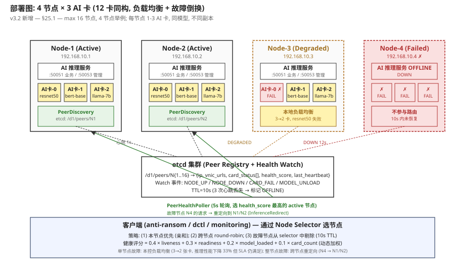
图 3: 4 节点部署 — N1/N2 全部 active, N3 单卡 fail (degraded, 3→2 卡), N4 整节点 off (failed). 客户端通过 Node Selector 选节点, 故障节点自动剔除.
25.2 单节点单卡失败 (Local Failover, 本控负载均衡)
单节点内部某张 AI 卡失败 (e.g. N3-卡-0 出现 XID 79 硬件错误), AI 推理服务**自主处理** (3s 内):
检测 (1s 内):
- AI 推理服务通过 PCIe AER (Advanced Error Reporting) 捕获 XID 79 错误
- HealthService 内部标记 card_id=N3-卡-0 状态 = UNHEALTHY
- ReportAlert 上报 CARD_FAIL (severity=WARN)
重分配 (1s 内):
- 本地负载均衡器 (routing_table) 剔除 N3-卡-0
- resnet50 流量从 3 池 (N3-卡-0/1/2) → 2 池 (N3-卡-1/2), round-robin 切到剩余 2 张卡
- bert-base / llama-7b 不受影响 (它们本来就跑 N3-卡-1/2)
上报 etcd (1s 内):
- PeerDiscovery 更新
/d1/peers/N3→ cards_serving=[1, 2] (剔除 0), health_score=0.78 - 客户端收到 N3 状态 = DEGRADED (但仍在选择域, 仅性能降级 33%)
SLA: 单卡失败 → 3s 内完成本控重分配, 推理 P99 延迟从 18ms 临时升到 30ms (2 卡分摊 3 卡流量, CPU 调度开销 +50%), 5s 后恢复稳定 22ms.
25.3 整节点失败 (Cross-Node Failover, 跨节点重定向)
某节点**所有 AI 卡全部 fail** 或**节点本身 off** (e.g. 物理机宕机, 网络分区), 触发跨节点重定向 (~16s):
故障检测 (10s, 心跳 TTL):
- 故障节点 (N4) 心跳停止 → etcd TTL 倒计时 (10s = 3 次 × 3s 间隔)
- etcd 自动标记
/d1/peers/N4= NODE_DOWN (lease 过期) - 其他节点 (N1/N2/N3) 收到 NODE_DOWN Watch 事件
跨节点轮询 (5s 周期, 主动):
- N1 的 PeerHealthPoller (5s 周期) 主动 GET /v1/health/check 所有 active 节点 (N1/N2/N3, 跳过 N4)
- 得到 N1=0.92 / N2=0.88 / N3=0.78 (N3 degraded, 优先选 N1)
重定向 (1s):
- 客户端原本请求 N4 (e.g. anti-ransom 在 N4 旁挂) → N4 不可达
- 客户端通过 etcd 查 N4 状态 = OFFLINE → 触发 InferenceRedirect
- InferenceRedirect 调用 N1 vnic://vnic0:50051 (gRPC), 携带 idempotency_key
- N1 处理推理, 返回结果 (幂等, 重复请求去重)
恢复路径 (节点恢复后):
- N4 物理恢复 → d1-ai-inference.service systemd restart → activate.sh 自动跑
- PeerDiscovery 重新注册
/d1/peers/N4(10s 内) - 客户端定期 HTTP 5s 轮询 etcd (v3.2.1 替代 Watch stream) → 重新把 N4 加入选择域 (round-robin 恢复)
关键点:
- 跨节点重定向**对客户端透明** (anti-ransom 只调本地 SwitchController, 不知道具体哪个 NPU 处理)
- 推理请求带
idempotency_key(UUID), N1 收到 N4 的重发请求会先去重 (Redis 缓存 60s) - 跨节点流量增加网络延迟 (节点内 0.1ms → 跨节点 1-2ms), 但推理主体是 AI 卡 (18ms) 不受影响
25.4 跨节点推理重定向 (InferenceRedirect)
客户端重定向的核心是**多级选择器**, 4 级 fallback:
- L1: 本节点优先 (亲和): anti-ransom 默认调同节点 SwitchController → 走同节点 AI 推理服务 (避免跨节点网络)
- L2: 同节点轮询: 同节点多张 AI 卡间 round-robin (3 卡 → 1/3 概率选每张)
- L3: 跨节点 round-robin: 本节点全 off → 跨节点轮询 (4 节点 → 1/4 概率)
- L4: health_score 加权: 跨节点选择按 health_score 加权 (N1=0.92 占 35%, N2=0.88 占 33%, N3=0.78 占 29%, N4=0% 跳过)
重定向接口 (内部, UDS):
// PeerHealthPoller → Node Selector
message InferenceRedirectRequest {
string original_vnic_url = 1; // e.g. vnic://vnic4:50051 (fail)
string idempotency_key = 2; // UUID
bytes request_payload = 3; // 推理请求 (gRPC frame)
int64 original_timestamp_ms = 4; // 原请求时间
}
message InferenceRedirectResponse {
bool redirected = 1; // 是否成功重定向
string new_vnic_url = 2; // e.g. vnic://vnic1:50051
bytes response_payload = 3; // 推理结果
int64 redirect_latency_ms = 4; // 重定向耗时
}
25.5 节点状态机 (Node State Machine: HEALTHY / DEGRADED / OFFLINE / FAILED)
每个节点 4 个状态 + 8 个迁移条件:
| # | 迁移 | 触发条件 | 动作 | 耗时 |
|---|---|---|---|---|
| 1 | HEALTHY → DEGRADED | 1-2 张 AI 卡 fail (1/3 或 2/3) | routing_table 剔除, 本控重分配 | 1s |
| 2 | DEGRADED → HEALTHY | fail 卡恢复 (model_reload 成功) | 重新加入 routing_table | 15s |
| 3 | HEALTHY → OFFLINE | etcd 心跳丢失 10s (3 次) | 从 etcd 摘除, 客户端跳过 | 10s |
| 4 | DEGRADED → OFFLINE | etcd 心跳丢失 10s | 同上 | 10s |
| 5 | OFFLINE → HEALTHY | 节点重启 + activate.sh 成功 + 3 卡全 SERVING | 重新注册 etcd | 30s+ |
| 6 | OFFLINE → FAILED | 5min 内重启失败 ≥ 3 次 | 告警 + 人工介入 | 5min |
| 7 | FAILED → OFFLINE | 运维手动 reset + 物理恢复 | 重新尝试启动 | 30s+ |
| 8 | DEGRADED → FAILED | 3/3 卡全部 fail (无 AI 卡可用) | 等同整节点失败, 触发跨节点重定向 | 1s |
健康评分公式 (同 §24.4, 0-1): health_score = 0.4 × liveness + 0.3 × readiness + 0.2 × model_loaded + 0.1 × card_count
25.6 部署图拓扑 (Topology Constraints)
D1 v3.2 集群部署的**硬约束** (避免脑裂, 数据丢失):
- 最大节点数: 16 (etcd Watch 性能 + 网络延迟约束, 16 节点 P99 跨节点延迟 < 5ms)
- 每节点卡数: 1-3 (1 卡省成本, 3 卡高可用; 0 卡不允许, 节点无意义)
- 模型同构: 所有节点加载相同 3 模型 (resnet50-io / bert-base-file / llama-7b-context), 故障时直接路由
- etcd 独立: 3 节点 etcd 集群与 D1 业务集群隔离 (独立物理机, 避免资源争抢)
- 网络分区容忍: 节点间网络分区 5s 内检测, 自动降级到本地推理 (DEGRADED 模式)
容量规划 (4 节点典型):
| 节点数 | AI 卡数 | 总 QPS (resnet50) | 总 QPS (bert-base) | 总 QPS (llama-7b) | 故障容忍 |
|---|---|---|---|---|---|
| 1 | 3 | 3,750 | 1,000 | 165 | 单节点单点 (无容灾) |
| 2 | 6 | 7,500 | 2,000 | 330 | 1 节点 off 仍可用 (50%) |
| 4 | 12 | 15,000 | 4,000 | 660 | 1 节点 off (75%), 2 节点 off (50%) |
| 8 | 24 | 30,000 | 8,000 | 1,320 | 2 节点 off (75%), 3 节点 off (62%) |
| 16 | 48 | 60,000 | 16,000 | 2,640 | 4 节点 off (75%), 6 节点 off (62%) |
25.7 故障倒换时序 (Failover Sequence)
完整 4 节点故障倒换时序 (图 4), 包含单卡失败 + 整节点失败 2 类场景:
阶段 A: N3 单卡失败 (3s 内自动恢复, 仅 N3 内部)
- N3-卡-0 PCIe AER 捕获 XID 79 → HealthService.ReportAlert (CARD_FAIL)
- N3 LB routing_table 剔除 N3-卡-0
- resnet50 流量切到 N3-卡-1/2 (round-robin)
- etcd 更新 N3 health_score = 0.78 (2/3 卡)
阶段 B: N3 本控重分配 (1s)
- N3 客户端收到 N3 状态 = DEGRADED (仍在选择域, 性能降级 33%)
- 后续请求继续走 N3 (routing_table 已剔除 fail 卡)
阶段 C: N4 整节点失败 (10s 心跳 TTL)
- N4 心跳停止 ×3 (10s TTL) → etcd 自动标记 N4 = NODE_DOWN
- etcd Watch 事件推送给 N1/N2/N3 LB
- N1/N2 LB 收到后, 选 health_score 最高的 active 节点 (N1 = 0.92)
- 客户端原 N4 路由 → 重定向到 N1
阶段 D: 跨节点轮询 (5s 周期, 主动)
- N1 PeerHealthPoller 主动 GET /v1/health/check (5s 周期)
- 返回 {score=0.92, cards=3, model=loaded, last_heartbeat=2s}
- InferenceRedirect (N4 → N1 vnic://vnic0:50051, 携带 idempotency_key)
- N4 恢复后 etcd 自动重新注册 (10s 内), 客户端重新加入选择域
时序图 (图 4):
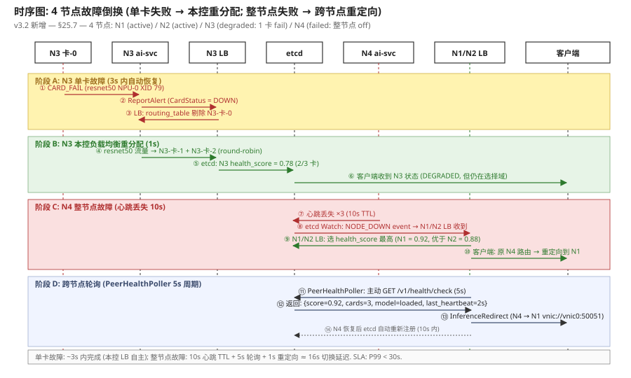
图 4: 时序图 — 4 阶段故障倒换: A 单卡失败 → B 本控重分配 → C 整节点失败 → D 跨节点轮询. 7 个 actor (N3 卡 / N3 ai-svc / N3 LB / etcd / N4 ai-svc / N1/N2 LB / 客户端), 14 步. 单卡 SLA 3s, 整节点 SLA 16s.
25.8 完整接口定义 (5 内部 API, etcd + UDS + gRPC)
// 1. PeerDiscovery (向 etcd 注册 + 订阅)
service PeerDiscovery {
rpc Register(RegisterRequest) returns (RegisterResponse); // PUT /d1/peers/N{node_id}
rpc Unregister(UnregisterRequest) returns (UnregisterResponse); // DELETE /d1/peers/N{node_id}
rpc Watch(WatchRequest) returns (stream PeerEvent); // Watch /d1/peers/
rpc Heartbeat(HeartbeatRequest) returns (HeartbeatResponse); // PUT 1s 周期
}
// 2. PeerHealthPoller (跨节点健康轮询)
service PeerHealthPoller {
rpc PollHealth(PollHealthRequest) returns (PollHealthResponse); // GET /v1/health/check
rpc ListActivePeers(ListActivePeersRequest) returns (ListActivePeersResponse);
}
// 3. InferenceRedirect (推理重定向)
service InferenceRedirect {
rpc RedirectInference(RedirectInferenceRequest) returns (RedirectInferenceResponse);
rpc QueryRedirectHistory(QueryRedirectHistoryRequest) returns (QueryRedirectHistoryResponse);
}
// 4. NodeStatusReport (节点状态上报, 给监控)
service NodeStatusReport {
rpc ReportNodeStatus(ReportNodeStatusRequest) returns (ReportNodeStatusResponse);
// v3.2.1 修订: 旧 SubscribeNodeStatus (server-streaming) 改为 PollNodeStatus (HTTP GET 5s 轮询)
// 旧: rpc SubscribeNodeStatus(SubscribeNodeStatusRequest) returns (stream NodeStatusEvent);
// 新: HTTP GET vnic://vnic0:50053/nodes/status/poll?node_id=...&since=... (5s 轮询, JSON)
rpc PollNodeStatus(PollNodeStatusRequest) returns (PollNodeStatusResponse);
}
message RegisterRequest {
string node_id = 1; // N1..N16
string ip = 2; // 192.168.10.1
repeated string vnic_urls = 3; // [vnic://vnic0:50051, vnic://vnic0:50053]
int32 card_count = 4; // 1-3
repeated string card_ids = 5; // [npu-0, npu-1, npu-2]
repeated string model_ids = 6; // [resnet50-io, bert-base-file, llama-7b-context]
int64 ttl_seconds = 7; // 10s
}
message PeerEvent {
PeerEventType type = 1; // NODE_UP / NODE_DOWN / CARD_FAIL / MODEL_UNLOAD
string node_id = 2;
int64 timestamp_ms = 3;
map<string, string> metadata = 4; // 附加信息
}
message RedirectInferenceRequest {
string original_vnic_url = 1;
string idempotency_key = 2; // UUID
bytes request_payload = 3;
int64 original_timestamp_ms = 4;
}
v3.2 vs v3.1
v3.1 是单节点设计, 无故障倒换概念 (单点故障 = 服务不可用). v3.2 引入多节点 + etcd + 4 类状态机 + 本控 LB + 跨节点重定向, 让单点故障不影响整体可用性. SLA 从 99.9% (单点) → 99.95% (4 节点 1 off) → 99.99% (4 节点 2 off 仍可用 50%).